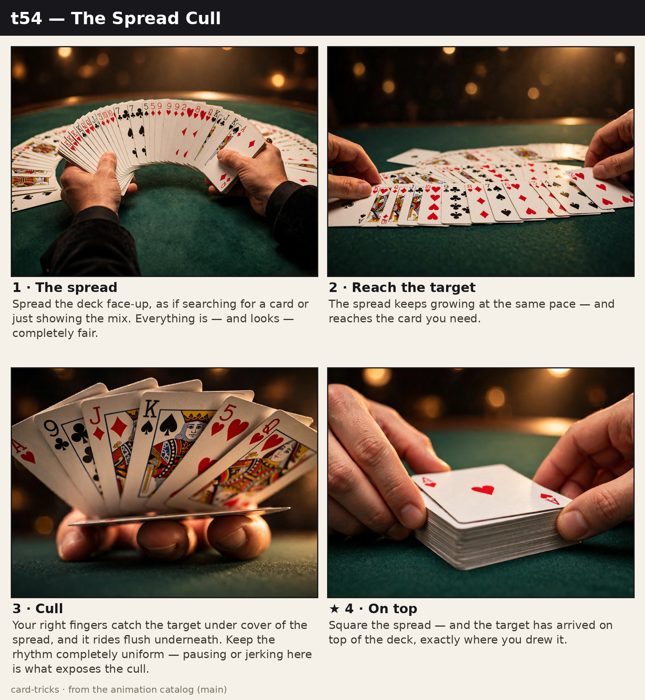
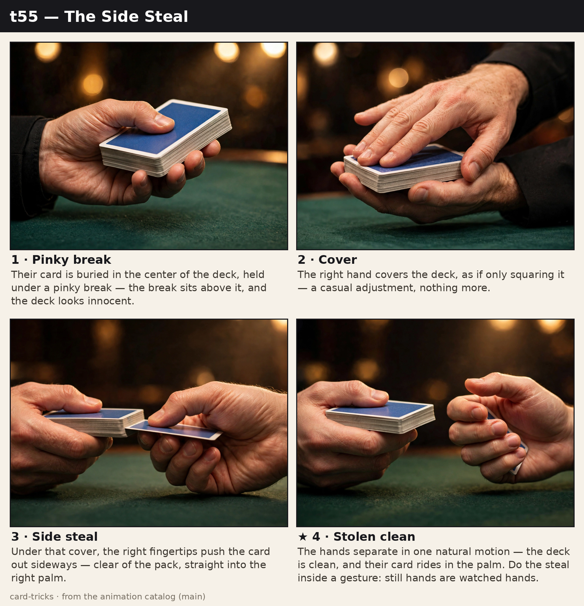
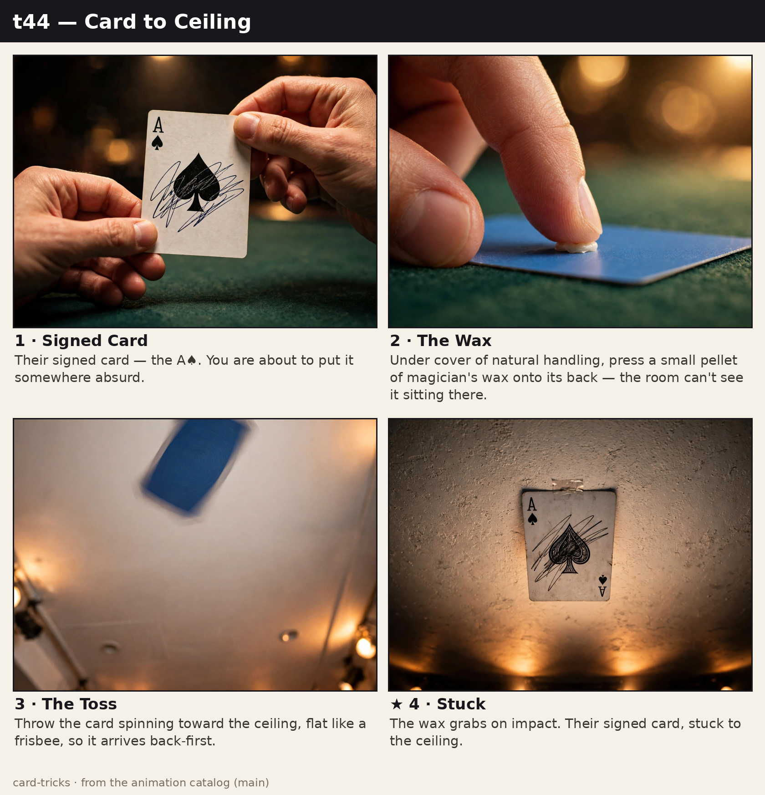
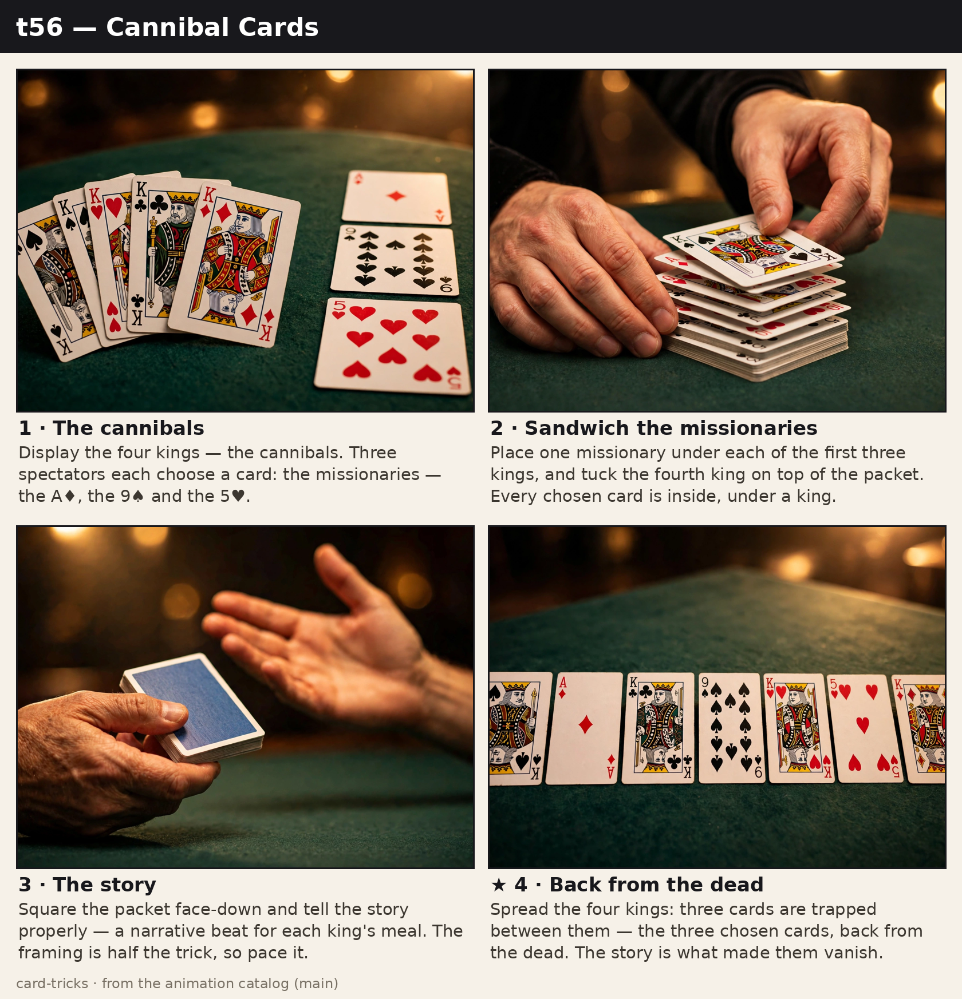
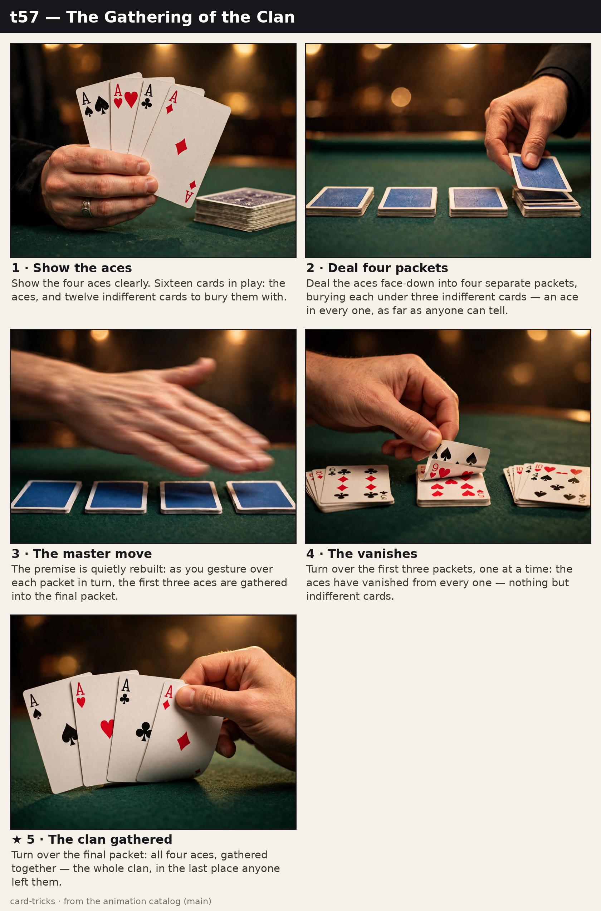
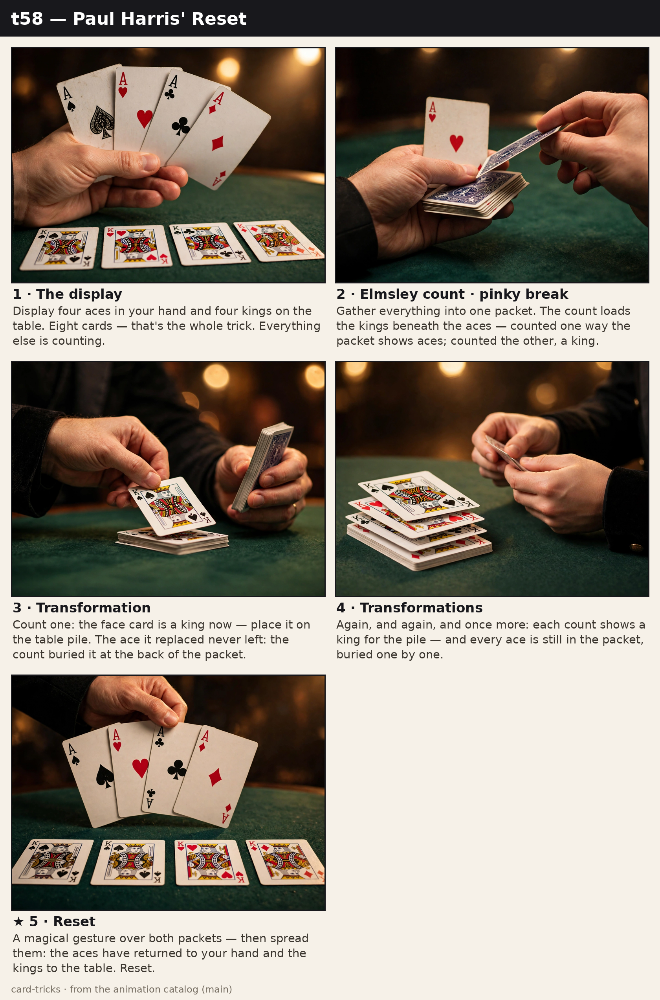
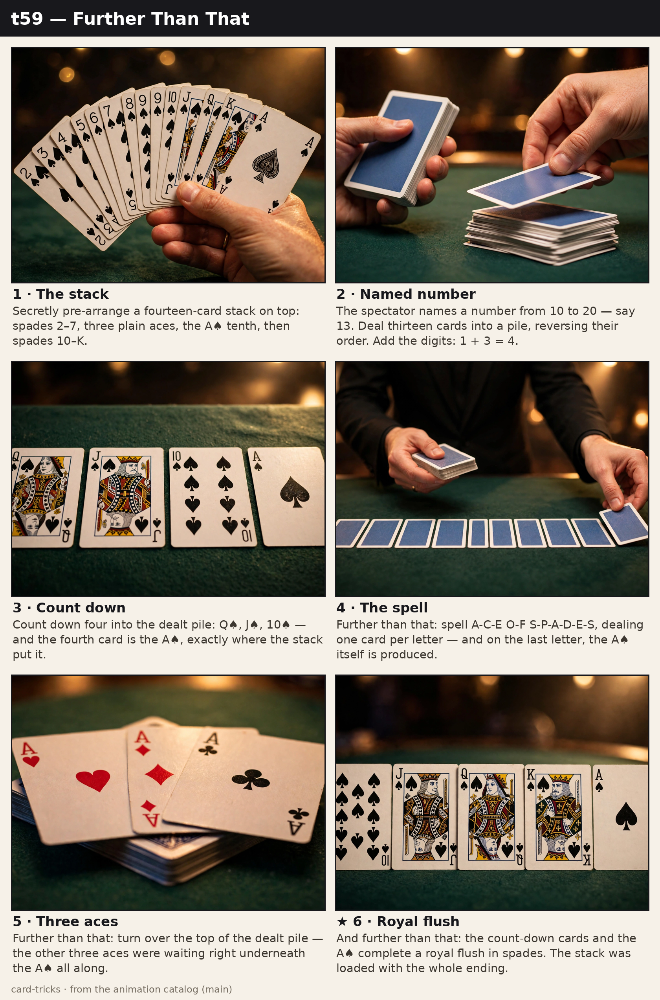
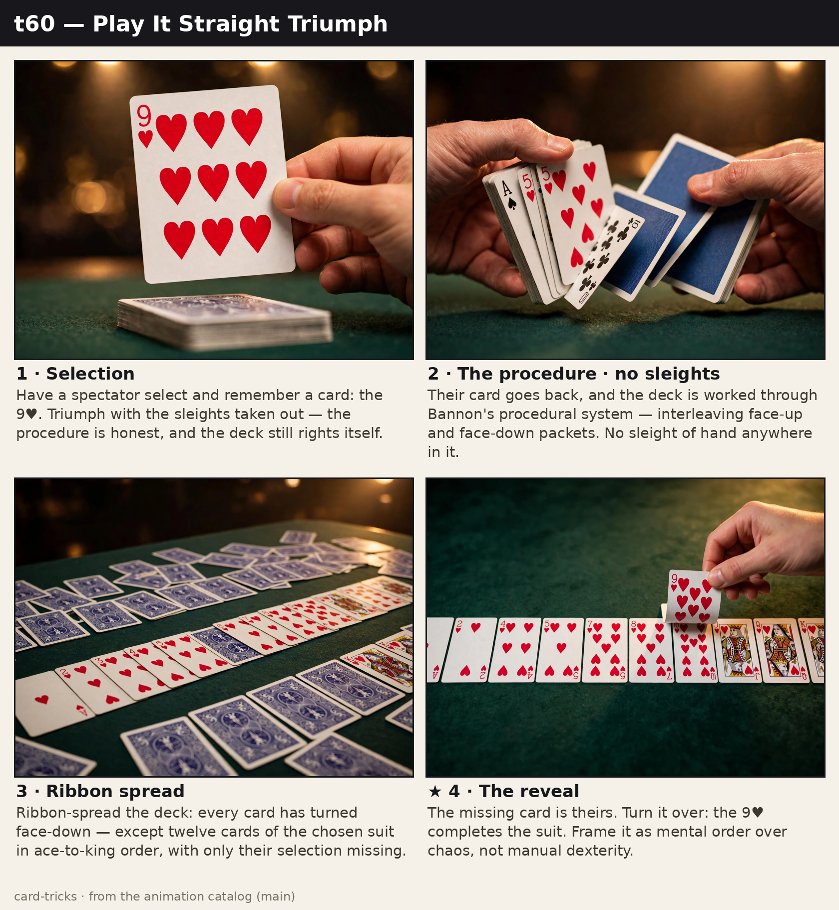
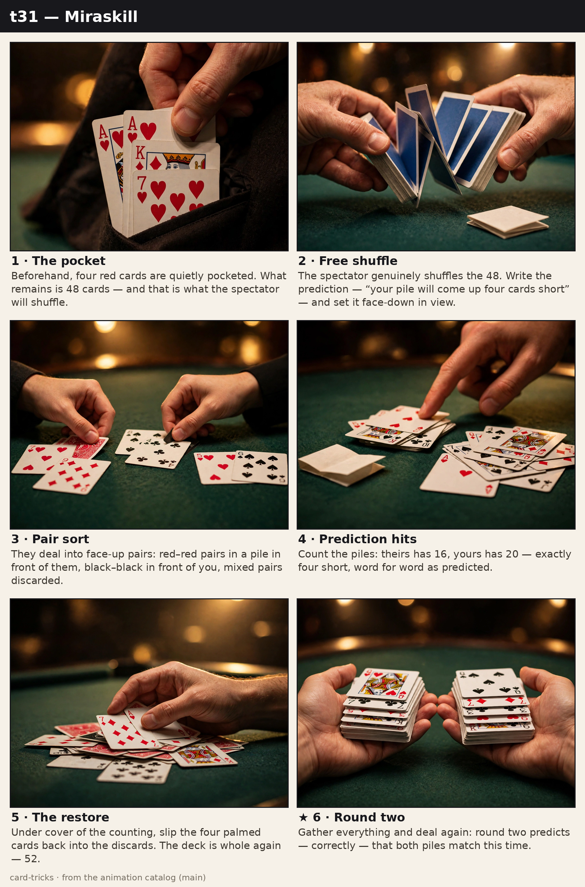

Get a deck that handles well. Bicycle Rider Backs, broken in for a day or two. It's the standard for a reason.
Go in order. Triumph at the end leans on the overhand control and the false cut from the start.
Film yourself. A mirror is kind; your phone isn't. You'll catch every flash you'd never feel.
Fifteen focused minutes beats two hours of fiddling while the TV's on.
When the secret happens, look at the person, not your hands. Eyes tell the audience where the trick lives.
Perform early. A trick that's merely smooth for a real person teaches you more than another week alone.
Jordan’s five-minute set
Jordan’s in a James Bond situation. He’s at the table, the mark is watching, and in about five minutes someone is going to ask him to do a card trick. He snuck off to the bathroom and he’s reading this on his phone. Jordan — lock the door. Three tricks, zero sleight of hand, learnable before you walk back in. Set two of them up now — the third needs no setup at all. Perform them in this order, then stop. Never repeat a trick for the same audience.
Prep, part one — the Princess packet: pull ten cards and make five near-twin pairs: same color, different suit, forgettable values. Sixes and sevens are ideal. Skip the courts — people remember queens. Pair them face to face, square them up, pocket the packet.
Prep, part two — the Spelling Bee stack: arrange thirteen cards, top to bottom: 3–8–7–A–Q–6–4–2–J–K–10–9–5. Memorize it with: “387 years ago, a queen, 64 years old, had 2 sons, Jack and King. Jack worked until 10, but King worked a 9 to 5.” Other pocket.
Key Card PrincipleDo this first. Secretly look at the bottom card and memorize it. Have someone place their card on top of the deck, cut the deck once, then spread it and name the card sitting directly under the one you memorized.
Princess Card TrickDo this next. Fan your ten-card packet and have someone only think of a card — no touching. Close the fan, pocket one of the hidden mates, spread the rest. Their card is gone.
Spelling BeeDo this last. Take your stacked thirteen and spell each rank from ace to king, moving one card from top to bottom per letter. Every card lands on its final letter. Take the applause, pocket the cards, explain nothing.
Sleight School Practice Tracker
Track your progress across the syllabus. Check off items as you hit the milestone criteria to graduate from foundations to routines and flourishes.
0 of 16 milestones
Phase 1: Foundation Building (Weeks 1–3)
0 / 10
0 / 20
Phase 2: Sleight Integration (Weeks 4–7)
0 / 20
0 / 10
Phase 3: Routine Construction (Weeks 8–11)
Phase 4: Flourish & Polish (Weeks 12+)
Start here
Seventy-four tricks is a lot. This is the order that builds — each one hands you something the next one needs. After No. 14, the rest of the page is yours.
Elmsley CountCount four cards while one of them hides.
FoundationsCore techniques. Everything else on this page is built from them.
1
♠
Key Card Principle
Easy
The most useful secret in card magic: knowing a card nobody told you.
While you're chatting or squaring the deck, glimpse the bottom card and memorize it. That's your key. Know it cold enough to recognize it without thinking.
Someone picks a card, shows it around, and puts it back on top of the deck.
Cut the deck once, genuinely, somewhere near the middle. Their card is now sitting directly underneath your key card.
Spread the deck face up, find your key, and name the card below it. Or deal cards over one by one — the one after your key is theirs.
You'll use this inside half the tricks here. Learn it well enough that you can do it while talking.
Hold the deck in dealing grip and tilt the bottom card toward you only far enough to read its corner as you square up and talk. Lock rank and suit together as a picture, not two separate facts. After the return to the top, cut once cleanly at about the middle and complete the cut fully, so the key lands squarely on their card without a break or a second adjustment.
Why it works
A cut moves the top and bottom of the deck together into the middle as neighbors. Your known bottom card and their unknown top card become an ordered pair, so finding the one card you know reveals the one you do not.
Pitfalls
Glimpsing too openly gives the key away, so keep the tilt small and brief. Cutting twice or shuffling after the cut breaks the pairing, so stop after one cut. Spreading too fast makes you miss the key, so slow down and read every index.
Credits and further reading
The key card principle is classical. The Royal Road to Card Magic gives it a full beginner treatment, and Card College covers it again in Volume 1.
2
♥
Overhand Shuffle Control
Easy
Keep a card exactly where you want it while the shuffle looks honest.
To the bottom. Their card starts on top. Deck in your left hand, lift the top half with your right. Left thumb peels small packets off the top of the right-hand packet into your left hand, until the right hand is empty. The first card peeled was theirs, so it lands on the bottom of the reassembled deck.
Keeping it there. On later shuffles, always leave the bottom ten or so cards sitting in your left hand. Lift packets only from the top, peel, drop them back on top. The bottom stock never moves, and neither does their card.
The injog. When you want to bookmark a spot, let the last packet land sticking out about a centimeter toward you instead of squared. That little protruding step is a marker — later you can cut to it exactly.
The thing to feel in your hands: one honest overhand shuffle moves the top card to the bottom. Once that's muscle memory, you own the most-used control in magic.
Start in left-hand dealing grip with their card on top. Lift a clear top portion in the right hand, then let your left thumb draw off small, even packets from its top until the right hand empties. Keep packets modest and the rhythm ordinary. For later shuffles, cradle the bottom ten cards in the left hand throughout and only lift, peel, and replace cards above that stock.
Why it works
In an overhand shuffle the first packet peeled becomes the new bottom of the rebuilt deck. The top card therefore travels to the bottom in one fair-looking action, and an untouched bottom stock preserves it there through further shuffles.
Pitfalls
Peeling packets that are too large looks clumsy and can drop their card mid-deck, so keep them small. Accidentally lifting the protected bottom stock loses the card, so feel its thickness before you start. Rushing the injog makes it show, so let it land casually.
Credits and further reading
Overhand shuffle control and the injog are classical tools treated in The Royal Road to Card Magic. Card College Volume 1 refines the basic shuffle handling.
3
♣
Hindu Shuffle & Force
Easy
A shuffle that looks like chaos and a force hiding inside it.
Your force card goes on top of the deck. That's its whole job in the setup: the right hand's pinch in the next step takes the top portion off, and your card rides as the bottom card of the right-hand packet — the one card the strip never touches.
Deck face down in your left hand, thumb along the left edge. Right hand comes over the top, thumb at the inner end, fingers at the outer, and pinches off the top portion, pulling it right.
Left thumb strips small packets off the top of the right-hand packet back into your left hand. That stripping rhythm is the whole shuffle. Your right hand keeps hold of the bottom stub the entire time.
Here's the force: the bottom card of the right-hand packet never changes through the shuffle. It's always your force card. Have them say stop whenever they want, then tilt the packet to show its bottom card. Free choice, apparently.
Drop the stub on top to finish, and as you square up, keep a left pinky break right where the stub landed. Your card is sitting at that break — cut to it whenever the reveal calls for it.
They watched cards flying everywhere and they're sure the stop chose something random. The stop chose nothing. That's the entire trick.
📖 Step-by-step grip photos in "Unshuffled Card Trick Techniques"(Scribd — it may ask you to log in; the video link above stands on its own if so).
📝 Practice Notes & ObservationsSaved
Handling
Place the force card on top, hold the deck face down in your left hand with thumb along the left edge, and pinch the top portion away with your right thumb at the inner end and fingers at the outer end. Strip small packets from the top of the right-hand packet with your left thumb, but never release the bottom stub. At the stop, tilt that stub naturally to display its bottom card.
Why it works
The stripping only removes cards from the top of the right-hand packet. Its bottom card is never touched, so every possible stopping point leads to the same card, while the moving packets create a strong impression of free mixing and free choice.
Pitfalls
Letting the stub shrink to nothing loses the force card, so keep a firm pinch on it throughout. Peeking at the bottom card before the stop telegraphs it, so keep your eyes on the spectator. Tilting the packet too far flashes it early, so display only at the stop.
Credits and further reading
The Hindu shuffle and forcing with it are classical. The Royal Road to Card Magic treats shuffles and forces at beginner level, as does Card College Volume 1.
4
♦
Double Lift
Easy–Medium
Two cards handled as one. This is the engine inside half of card magic.
As you square the deck, let your left pinky hold a tiny break under the top two cards.
Right hand takes the double from above by the ends — thumb inner end, fingers outer — lifting both as a single card.
Keep them perfectly squared. A split edge is the only tell there is. If you can see daylight between them, so can everyone.
Turn it over like a book page to show the face, then turn it back the same way.
The top card of the deck is now secretly the second card. Deal it, or leave it there for whatever comes next.
Drill: push the top two off as one with your left thumb, again and again, until a double feels exactly like a single. Then practice the turnover in a mirror.
As you square the deck, let your left pinky rest under the top two cards and keep the break tiny. Bring your right hand over, thumb at the inner end and fingers at the outer end, and lift both cards together by the ends. Keep the edges flush on all sides, turn the pair over like a page, show the face briefly, and turn it back with the same motion.
Why it works
Spectators judge a card as a single object from its outline and thickness in motion. If two cards stay perfectly aligned, there is no visual information that a second card exists, so the face shown is accepted as the top card.
Pitfalls
A split edge is the main tell, so square the pair before lifting and check for daylight. Holding the double too loosely lets it fan, so grip firmly by the ends. Turning singles differently from doubles creates a contrast, so handle every turnover the same way.
Credits and further reading
The double lift is a core sleight treated in Expert Card Technique and in depth in Card College Volume 2, with earlier handling in The Expert at the Card Table.
5
♠
False Cut
Easy
Look scrupulously fair while changing nothing at all.
Deck in your right hand. Left hand swing-cuts the top half off.
Finish the cut: set the right-hand half on top of the left-hand half. One genuine cut — the halves have swapped.
Now do the exact same thing again. Two identical half-cuts put everything back where it started.
Do it mid-sentence, the way you'd cut before any trick. Two cuts somehow looks more honest than one, which is the whole joke.
Use it after any control or force on this page. It "proves" the deck is mixed while your setup sits there untouched.
Hold the deck in your right hand and swing-cut roughly half into your left hand, then place the right-hand half on top to complete the cut. Repeat the exact same cut, taking the same size portion the second time. Keep both cuts loose, brisk, and done while you talk, with no squaring pause between them and no change in grip or speed that marks the second cut as special.
Why it works
Cutting a deck once swaps its two halves. Cutting the same halves a second time swaps them back, restoring the original order. Because each cut is genuine, there is nothing false to see, yet the repeated action reads as extra fairness.
Pitfalls
Taking a different amount on the second cut fails to restore the order, so match the packet sizes. Pausing to think between cuts draws attention, so rehearse until both run as one gesture. Doing extra cuts afterwards undoes the restoration, so stop at two.
Credits and further reading
This restoring double cut is a simple false cut. False shuffles and cuts are treated in depth in Card College Volume 2 and in Expert Card Technique.
14
♥
Classic Force
Easy–Medium
The boldest force in the book. No shuffle, no setup — just timing and nerve.
Your force card on top of the deck.
Deck face-down in your left hand. Tell them you're going to riffle through the cards and they should just touch the back of one — not take it, just touch.
Right thumb starts riffling down the outer edge, extending the deck toward their waiting hand. Watch their hand, not the cards.
Time it: slow the riffle so the instant their finger commits, the card beneath it is the top card — your force. Stop the moment they touch.
Have them take the card they touched and look at it.
This runs on timing, not mechanics, which is exactly why it looks so fair — there genuinely is nothing to see. And when it misses (it will, sometimes): smile, have them look at the card anyway, and move on. A shrugged-off miss is invisible; a panicked one is the whole trick.
Riffle with the right thumb at a steady, unhurried speed, deck extended well toward the spectator so their hand travels to you. Speed up slightly through the early cards, then ease off as their finger starts to move, so the top card arrives under it just as the touch lands. The instant you feel contact, stop dead and freeze the deck. Never adjust, nudge, or look down at the cards afterward.
Why it works
The force works because the spectator causes the result: their finger, their timing, their touch. Since the choice feels self-generated, there is no moment to suspect. The method is a single card slipped into a moving stream, hidden by the fairness of the procedure itself.
Pitfalls
Watching the cards instead of their hand breaks your timing and signals that timing matters; keep your eyes on their finger. Riffling too fast makes the touch land, so practise slowing the last portion. If it misses, do not flinch or retry. Let them keep the card and move on.
Credits and further reading
The classic force is a cornerstone sleight, treated at length in The Royal Road to Card Magic. Card College also covers forcing technique and the timing it demands.
15
♣
The Palm
Medium
The first real vanish. A card leaves the deck, and your hand is empty — except it isn't.
The card to vanish goes on top. Deck in left-hand dealing grip.
Right hand comes over to square the deck — thumb at the inner end, fingers at the outer.
As the right hand lifts away, it presses down gently and carries the top card with it. The card bows slightly into the palm, clipped by pressure at the base of the fingers.
Keep the hand moving and natural — fingers softly curled, never flat and frozen. A hand in motion never gets questioned.
To bring the card back, reverse the action under cover of squaring the deck again.
Palming is ninety percent acting. The hand looks empty because you behave as if it is. Flash yourself in the mirror on purpose — learning what the bad angles look like is how you learn the good ones.
Square the deck with the right hand in a natural grip, thumb at the inner end and fingers at the outer end. As the hand lifts, press the top card lightly downward so it bows against the palm and catches at the base of the fingers. Do not squeeze; friction and the slight bow hold it. Keep the hand waist-high, relaxed, and moving toward a purpose, like reaching or gesturing.
Why it works
A palmed card is hidden less by the hand than by behaviour. People judge a hand empty from its posture and movement: softly curled fingers, easy motion, no tension. Because the steal happens inside an ordinary squaring action, there is no separate suspicious moment for them to remember or reconstruct.
Pitfalls
A flat, stiff hand with fingers advertises the card, so keep the fingers curled and the hand in motion. Holding the deck high lets people behind or beside you see the bowed card; mind your side angles. Practise in a mirror and flash yourself to learn which angles are safe.
Credits and further reading
Palming is foundational sleight of hand, treated in The Royal Road to Card Magic and at principle level in The Expert at the Card Table and Expert Card Technique.
20
♦
The Peek
Easy
Learn a card without anyone knowing you looked. The quietest skill in magic.
The bottom peek. Deck face-down in your left hand. As you gesture or chat, tilt the deck a fraction toward yourself and glimpse the bottom card's index. One glance is enough — staring is what gets caught.
The top peek. In dealing grip, your left thumb pushes the top card down and outward a hair, buckling it just enough to sight the index. Cover it by tapping the deck on the table to "square" it.
The riffle peek. Riffle up the back of the deck with your right thumb, lifting the top card just high enough to sight its index.
The rule for all three: your eyes do the work while your mouth keeps talking. Nobody watches a person who's mid-sentence.
A peek isn't a move, it's a moment. The smaller you make it, the more invisible it becomes.
For the bottom peek, tilt the deck only a few degrees as part of a gesture, and read the corner index in one short glance without moving your head. For the top peek, push the top card a hair forward with the left thumb so it buckles, sight the index, then tap the deck on the table to square it. For the riffle peek, riffle slowly enough that the top card lifts just clear of the pack.
Why it works
A glimpse works because it borrows a moment when looking at the deck is natural. The eye needs the corner index, a fraction of a second of information, and conversation holds the audience's attention elsewhere. Smallness is the method: the less the deck moves, the less there is to notice.
Pitfalls
Tilting the deck too long turns a glimpse into a look, and spectators notice staring when they miss the card. Moving your head or eyes in a dip is another tell; keep your gaze casual. Do not peek twice for a card. One glance, then commit to what you saw.
Credits and further reading
Glimpses and peeks are classical utilities, treated in The Royal Road to Card Magic. The Expert at the Card Table discusses sighting cards at principle level.
21
♠
Charlier Cut
Easy
Cut the deck with one hand. Pure flourish — no secret, all style.
Deck in your left hand, held at the fingertips: thumb on one long edge, middle and ring fingers on the other.
Let the bottom half drop into your palm — it falls and pivots against your thumb.
Your index finger pushes the top half forward; it swings down and around, passing under the half resting in your palm — and that dropped half settles over it. The halves have swapped, one-handed.
Do it again to cut straight back. Clean mechanics first — speed arrives on its own.
This fools no one and impresses everyone. Flourishes are the salt of card magic: a pinch improves everything, a handful ruins the dish.
Hold the deck high in the left hand at the fingertips, thumb along one long edge and middle and ring fingers along the other, index finger free underneath. Relax the fingers just enough to let the bottom half fall into the palm, where it pivots against the thumb. Push the upper half forward with the index finger so it swings down and around, passing under the dropped half, then close your fingers to square the reassembled deck.
Why it works
The cut runs on gravity and a pivot point rather than grip strength. The dropped half becomes a shelf, the swinging half travels around it, and the halves exchange places with no finger movement. Because each stage sets up the next, a repetition builds the coordination that reads as speed.
Pitfalls
Gripping too tightly stops the bottom half from dropping, so hold the deck loosely at the fingertips. Letting the swinging half travel too wide spills cards; keep the arc tight against the palm. Chasing speed before the mechanics are smooth produces fumbles, so practise slowly and let tempo arrive.
Credits and further reading
The Charlier cut is a classical one-handed cut with no secret to credit. Card College is the modern course for the fingertip control and clean handling it depends on.
54
♣
The Spread Cull
Medium
The deck is spread face-up for everyone to see — and the card you need quietly travels underneath it.
Spread the deck face-up, as if searching for a card or just showing the mix. Everything is — and looks — completely fair.
When you reach the target card, your right fingers catch it under cover of the spread and start riding it beneath the cards.
Keep spreading at exactly the same speed. The culled card travels flush underneath, hidden by the cards above it.
Square the spread — and the target has arrived exactly where you drew it: top or bottom of the deck.
Keep the rhythm of the spread completely uniform — pausing or jerking when you reach the card is what exposes the cull.

📖 The cull is a Card College staple — Giobbi teaches it as a utility move in Vol. 2. Drill it as a standalone, not inside a trick, for the first month.
📝 Practice Notes & ObservationsSaved
Handling
Spread face up at a steady, unhurried pace with the right hand leading. When the target appears, let the right fingertips contact its edge and draw it down and back so it slides beneath the spread, flush against the underside. Keep both hands moving at the same rate as before, carry the card to the end of the deck, then square up with it on top or bottom as planned.
Why it works
The cull hides in plain sight because the spread itself is the cover. Cards above mask the one travelling below, and the audience watches the growing face-up display, where nothing changes. Constant speed matters: any pause marks the exact moment something happened.
Pitfalls
Pausing or tugging when you reach the target points straight at it, so rehearse passing it without culling until the rhythm is automatic. Letting the culled card angle out flashes its edge below the spread; keep it flush. Spreading too fast gives you no time to catch the card cleanly.
Credits and further reading
The spread cull is a classical utility move. The entry points to Card College Vol. 2, where Giobbi teaches it as a standalone control to drill.
The MovesSleights worth their practice time.
6
♥
The Glide
Medium
Steal the bottom card while everyone is looking right at the bottom of the deck.
Deck face down in your left hand. Tilt it so they clearly see the bottom card. "Remember this one."
Right hand comes over from above — thumb inner end, fingers outer.
As the right hand slides the deck forward a touch, your left fingertips pull the bottom card back about a centimeter. It glides along the deck and stays behind in your left hand.
Right hand lifts away with the deck. The bottom card never left your left hand.
Show the bottom of the right-hand deck: their card is gone. Let the retained card fall casually to your side as you gesture.
They saw that card one second ago, so their brain already filed it as "still there." That's what you're stealing — the assumption, not the card.
Hold the deck face down in your left hand and tilt it so the bottom card is clearly seen. Bring your right hand over from above, thumb at the inner end and fingers at the outer end. As the right hand draws the deck slightly forward, press your left fingertips on the bottom card and draw it back about a centimeter, retaining it flat in the left hand while the deck lifts away.
Why it works
The audience has just seen and memorized the bottom card, so they assume it still travels with the deck. The right hand and the forward movement cover the small backward slide, and attention follows the larger moving object, not the card left behind.
Pitfalls
Pulling the card back too far lets its edge show behind the deck, so keep the glide to about a centimeter. Showing the new bottom too quickly looks eager, so pause and gesture first. Holding the retained card stiffly draws eyes, so let that hand relax at your side.
Credits and further reading
The glide is a classical bottom-card steal. The Royal Road to Card Magic gives a clear beginner treatment, and Expert Card Technique develops related bottom handling.
7
♣
Riffle Force
Medium
Force a card with psychology — and one small secret slip.
Force card on top.
Deck in your left hand. Right thumb riffles down the outer edge; they say stop whenever they feel like it.
Freeze at the break. Right hand lifts the upper packet at the stop point — and as it lifts, your left thumb drags the top card back so it stays on the lower packet. Small motion, covered by the right hand.
Show the top card of the lower packet: "the card you stopped at." It was never in doubt.
They'll swear the stop chose the card. Protect that belief — it's doing most of the work for you.
📖 "The Riffle Force" — photos of the riffle, the secret peel, and the retention.
📝 Practice Notes & ObservationsSaved
Handling
Keep the force card on top and the deck in your left hand. Riffle your right thumb slowly down the outer edge so the spectator can call stop anywhere. Freeze at that point and lift the upper packet with your right hand. In the same lifting motion, drag the top card back with your left thumb so it stays on the lower packet, hidden under the rising right hand and packet.
Why it works
The spectator controls when to stop, so they own the outcome in their own mind. The retention happens at the one moment a larger movement, the lift, is already happening, and the card they are shown sits exactly where a fairly stopped card should sit.
Pitfalls
Riffling too fast gives them no real choice and weakens the effect, so slow the riffle down. Dragging the card after the lift starts exposes the slip, so move both hands together. Looking down at your thumb telegraphs the secret, so keep your eyes on the spectator.
Credits and further reading
The riffle force is a classical force built on timing and spectator choice. Forces are introduced in The Royal Road to Card Magic and in Card College Volume 1.
8
♦
Elmsley Count
Medium
Count four cards fairly while one of them never shows its face.
Four cards face down in your left hand.
Right hand takes them one at a time off the top, counting out loud: one, two, three, four.
The second and fourth cards are taken under the right-hand packet instead of on top — the right hand dips a fraction to receive each one beneath.
Keep the rhythm dead even. A metronome "1-2-3-4" is what sells it; any hurry on two and four and the eye catches the dip.
Try it as a trick: count four blue-backed cards "fairly," then spread them — one has a red back. It was hidden the whole time.
Slow is smooth, and smooth is invisible. If it feels too slow to you, it's probably just right for them.
Hold the four cards face down in your left hand and count them into your right hand one at a time, aloud and evenly. Take the first card fairly on top of the right-hand packet. For the second and fourth, dip the right hand a fraction and receive each card underneath the packet instead. Take the third fairly on top again, keeping packet size small and the count at a steady pace throughout.
Why it works
A count is judged by rhythm, number, and the sight of a new card arriving each time. If the tempo and motion stay identical, taking a card under the packet instead of on top changes the order and hides a face without changing anything the audience checks.
Pitfalls
Hurrying or dipping further on two and four breaks the rhythm and catches the eye, so practice to a metronome. Letting the packet spread shows extra edges, so keep it tight and squared. Counting silently or unevenly removes your cover, so count aloud in a steady voice.
Credits and further reading
The Elmsley count is a false count named for Alex Elmsley. False counts are treated in Expert Card Technique and in Card College Volume 2.
9
♠
Snap Change
Medium–Hard
One card visibly becomes another, in a snap.
Small packet face up in your left hand. Right hand comes over from above.
Right middle and ring fingertips press on the face of the top card, near its top edge.
One sharp motion: drag the top card back toward you. It flips face-down under cover of your hand, and the card beneath is revealed. The snap of the fingers plus the speed is what reads as a visual change.
Commit to it completely. The only thing that exposes this move is hesitation.
Play it to someone directly in front of you, packet held low. It's devastating head-on and ordinary from the side — so don't give anyone the side.
📖 "Card Snap Change" (GoodTricks) covers the grip in writing — but honestly, this one belongs to video. The tutorial above is the way in.
📝 Practice Notes & ObservationsSaved
Handling
Hold a small packet face up low in your left hand, facing a spectator directly in front of you. Bring your right hand over from above and press your middle and ring fingertips onto the face of the top card near its top edge. In one sharp, committed drag backward toward you, pull that card away so it turns face down under your hand, leaving the card beneath displayed in its place.
Why it works
Speed, sound, and a hand covering the work make the eye read a sudden replacement as an instant transformation. The revealed card was there all along, but the snap gives the brain a cause for the change and no time to track the card that left.
Pitfalls
Hesitating mid-drag exposes the pull, so commit to one sharp motion every time. A spectator at your side can see the dragged card, so play it head-on only and keep the packet low. Repeating the change invites study, so do it once and move on.
Credits and further reading
The snap change is a color change built on speed and cover. Color changes are treated at principle level in Expert Card Technique and The Expert at the Card Table.
16
♦
Top Change
Medium
One card becomes another in the half-second between your hands. The cleanest switch in magic.
The card they know sits on top of the deck in your left hand. The card you're switching it for is face-down in your right hand.
Bring the right hand over the deck, as if you're simply laying its card on top.
In that single passing motion, two things happen at once: the right hand drops its card onto the deck, and your left thumb slides the original top card into the right hand. Neither hand stops moving.
The right hand continues on its way — gesturing, dropping to your side — carrying the stolen card with it.
Speed isn't the point. The exchange happens in plain sight, covered by the logic of the gesture: of course your hand traveled from here to there. If the gesture makes sense, nobody watches the cards.
Hold the switch card loosely in the right hand, gripped by its ends between thumb and fingers. Bring it over the deck in one continuous arc, as if simply laying it down. As the hands meet, release it onto the deck while your left thumb draws the original top card sideways into the waiting right hand. Do not pause at the meeting point; the right hand keeps travelling into a gesture or down to your side.
Why it works
The exchange hides inside a gesture the audience already understands: a hand carrying a card to the deck. Attention follows the purpose of the motion, not its mechanics, and because the hand never stops or changes speed, the eye registers one simple action instead of two simultaneous ones.
Pitfalls
Stopping or slowing as the hands meet is the classic tell, so rehearse one unbroken arc. Gripping the switch card tightly makes the release visible; hold it lightly. Looking down at the deck draws every eye there with you. Keep your gaze on the spectator and talk through the exchange.
Credits and further reading
The top change is a classical switch, treated in The Royal Road to Card Magic under top and bottom changes, with further treatment in Expert Card Technique.
22
♥
The Pass
Hard
The invisible cut. Two halves transpose inside your hands and nobody sees a thing.
Left hand holds the deck in dealing grip, a pinky break separating the top and bottom halves.
Right hand comes over the deck — thumb at the inner end, fingers at the outer — covering the break.
In one motion the hands pivot: the bottom half swings up and over while the top half drops beneath. The packets transpose.
Square up immediately, casually, the way you would after any ordinary cut.
This is graduate school — months, not days. Learn it slow and covered; speed is a byproduct of smoothness, never the goal. Until it's invisible, the overhand control (No. 2) does the same job honestly.
📖 The Pass tutorial (Card Tricks Revealed) — all three parts of the video series.
📝 Practice Notes & ObservationsSaved
Handling
Hold the deck in left-hand dealing grip with the little finger keeping a break at the point the selection must pass. Bring the right hand over by the ends, fully covering the break and the sides of the deck. In one pivoting motion, let the lower packet swing up and over as the upper packet drops beneath it, driven by the fingers rather than a wrist snap. Square the deck immediately, in the same motion, and move on.
Why it works
The pass works by substitution: the audience sees the shape of two hands squaring or cutting the deck, and the transposition happens inside that shape, under the covering hand, faster than the eye can parse. A larger natural action, the square-up that follows, overwrites the memory of the hidden one.
Pitfalls
A gap at the back or side flashes the packets mid-transpose, so keep the hand covering and your angles toward the audience. Snapping the packets makes noise; smoothness hides it, speed does not. Performing it before it is invisible fails, so use a covered control until the pass is ready.
Credits and further reading
The classic pass is treated in The Expert at the Card Table and Expert Card Technique, and in depth in Card College Vol. 2.
32
♦
Cross Cut Force
Easy
They cut wherever they want. They still end up with the card you picked.
Place the force card on top of the deck and set the deck on the table.
Ask the spectator to cut: they lift off the top portion and set it beside the rest.
Take the remaining bottom portion and lay it crosswise on top of their packet — "marking the exact spot they cut to."
Chat for a beat so the cross reads as a placeholder, then lift the crosswise packet away.
Have them take the top card of the lower packet: the original top card of the deck — your force. Every step felt like their free choice.
Royal Road teaches the mirror-image version with the force starting on the bottom. The top-card handling above is the common modern one — same psychology, less to remember.
1. Cross-cut. Spectator cuts; complete by placing the former bottom half crosswise on top.
2. Time misdirection. After a beat, lift the upper packet and show its face as their card — it was the original top.
Tip. The pause is the move. Rushing makes the cross look like a force.
Handling
Start with the force card on top and set the deck down untouched. After the spectator cuts and sets the top packet aside, pick up the bottom packet and lay it across theirs at a clear right angle while you explain that it marks their cut. Talk for a few natural beats, then lift the crosswise packet away by its ends and gesture to the card now on top.
Why it works
The cross creates a false memory of where the cut ended. A short pause lets the true order of the packets fade, so the original top card, waiting under the cross, is accepted as the card the spectator cut to.
Pitfalls
Rushing to the reveal exposes the logic, so always let a beat of talk pass. If the spectator completes the cut by squaring the packets together, the force is lost, so take the deck out of reach once the cross is made. Place the cross once, cleanly, and move on.
Credits and further reading
The Royal Road to Card Magic teaches this force in its bottom-card form; the top-card handling used here is the common modern version of the same classic force.
33
♠
Slip Force
Med
Deal a pile, let them stop you anywhere — the stopped-at card is always the one you planted.
The force card starts on top of the deck.
Deal cards face-down onto the table one at a time, inviting them to say "stop" whenever they like.
On every deal, push the top card forward with the thumb as if to take it — then at the last moment slip it back flush and take the next card instead. The top stock never leaves the deck, and every deal looks identical.
When they say "stop," deal the top card honestly. It's the force card.
The classic routine deals all four aces this way — every "freely stopped at" card is an ace, and the spectator believes the whole pile was dealt at random.
1. Under-spread. Force card rides under the spread; when they touch a card, square so the force card is taken.
2. Timing. Their touch and your square must feel like one action.
Tip. Practice until the force card always sits under their finger.
Handling
Hold the deck in dealing grip with the force card on top. For each card, let your thumb push the top card forward, then draw it back flush as your dealing hand takes the card beneath it. Keep the push, pause and take at one unchanging rhythm, the same for the tenth deal as the first. When they call stop, change nothing in your manner; simply deal the top card, with the same motion and speed.
Why it works
Repetition builds trust: every deal looks, sounds and feels identical, so the spectator assumes every card came from the top. The one honest deal, at their stop, is hidden among all the dishonest ones that looked exactly the same.
Pitfalls
If the slipped card jogs sideways or fails to land flush, the retained stock shows, so square the deck lightly between deals. Speeding up as the pile grows makes the deals look different; keep one tempo throughout. Never pause at their stop; deal at the same speed without looking down.
Credits and further reading
A classic dealing force built on retaining the top card; forces are introduced in The Royal Road to Card Magic and refined throughout Card College.
46
♠
Double Undercut
Med
Two ordinary-looking cuts, and their card is back on top. This is the control you reach for after the injog.
Their card is returned to the middle. As you square, hold a left pinky break under it — or transfer an injog into that break.
Right hand takes the deck from above, thumb at the inner end, and picks up the break as a thumb break. From the front, the gap is invisible.
Left hand undercuts about half the cards below the break and drops them on top.
Come back and undercut everything still below the break, dropping that packet on top too. Their card is now the top card.
A false cut afterward "proves" you mixed the deck. You didn't.
The two cuts should feel like one fidget, not a procedure. Same rhythm as an honest cut, and you're talking the whole time.
📖 52Kards walks the undercut, the thumb break, and the control in one clip. Once the injog from the overhand shuffle is in your hands, this is the next sentence.
📝 Practice Notes & ObservationsSaved
Handling
Hold the pinky break with the fleshy tip of the left little finger, keeping the deck squared so the break shows only as a hairline at the back. Transfer it to the right thumb by gripping the deck from above at the inner end as you take it. Undercut in two relaxed passes, dropping each packet cleanly on top without squaring between them.
Why it works
A break marks a position without fixing it in place. Each undercut moves only cards below the break, so the selection rides on top of the packet that never gets cut away. After the second undercut, everything that was above it sits below it, and it is the top card.
Pitfalls
A break held too deep flashes as a visible step from the front; keep the deck tilted toward you and the break at the rear. Squaring up between the undercuts turns one fidget into a procedure; flow straight through. Cutting above the break loses the card; confirm your thumb break.
Credits and further reading
The double undercut is a standard control of uncertain individual origin. Breaks, injogs, and undercut controls are treated in The Royal Road to Card Magic and refined in Card College.
47
♥
Mexican Turnover
Med
You turn a tabled card face up. The card that turns over is not the card that was on the table.
A card lies face down on the table. The card you want to switch in is face down in your right hand, ready to scoop.
Slide the hand card under the tabled card until the two are roughly square. Left fingers can steady the tabled card so it doesn't skate.
As you start the turnover, right thumb draws the top card to the right while the first and second fingers push the bottom card to the left. They swap places under the flip.
Finish by turning the original tabled card — now in your hand — face up onto the table as if it had been there all along.
Study the honest turnover until the fake one has the same shape. The tell is a card that hops instead of rolls.
📖 52Kards, "The Mexican Turnover Card Switch." Use it once in a routine, not as a puzzle they can replay.
📝 Practice Notes & ObservationsSaved
Handling
Hold the switch-in card face down in the right hand, gripped at its corners. Slide it under the tabled card until the two are roughly square, using your left fingers to pin the tabled card so it does not skate. Start one smooth rolling turnover: right thumb pulls the upper card right as your first and second fingers push the lower card left, exchanging them mid-flip.
Why it works
The audience tracks the tabled card by its position, not its identity, since both cards show the same back. The turnover is a strong, expected action, and the exchange hides inside its motion: the eye follows the flip and assigns the arriving face to the card that was lying there.
Pitfalls
A card that hops instead of rolls exposes the switch; practise the honest turnover and copy its arc and speed. If the tabled card skates during the scoop, the alignment fails; pin it lightly with the left fingers every time. Use it once per routine; a second use invites comparison.
Credits and further reading
A classical tabled-card switch with no single agreed inventor. Card switches and turnovers of this family are treated at principle level in Expert Card Technique.
50
♠
Erdnase Color Change
Med
Cover the face of the deck for a second. The card looking at them is a different one.
Deck face up in the left hand, dealing grip. The face card is the one that will change. The card you want to appear is on the bottom.
Right hand comes over the face, palm flat, as if stroking or squaring the deck. The cover lasts less than a second.
Under that cover, the left fingers slide the bottom card out to the right, into the right palm. The right hand moves away with it palmed — hidden, not ditched.
The right hand wipes back across the face, and as it lifts off it leaves the palmed card where the face card showed. Under the same cover, the left fingers draw the original face card back underneath the deck, so it ends as the new bottom card. What they see is the hand lifting off a changed face.
The stroke is the trick. A hand that hovers gets watched. A hand that wipes the face and leaves is furniture.
📖 The original is in S.W. Erdnase, The Expert at the Card Table (free scan), still the shortest honest description of the change.
📝 Practice Notes & ObservationsSaved
Handling
Hold the deck face up in a relaxed dealing grip and keep both strokes identical in speed and path. On the first pass your right palm stays flat and the left fingers ease the bottom card sideways into it. On the return pass set the palmed card squarely on the face as the hand leaves, while the left fingers pull the original face card underneath in the same motion.
Why it works
The change works because the audience tracks the hand, not the card. A brief, purposeful cover gives them a complete action to watch, and the second wipe repeats the first, so the swapped face reads as the same card seen again after a natural gesture.
Pitfalls
Hovering over the face invites staring, so keep the cover under a second and keep moving. A loose palm flashes the stolen card at the side angle; press it flat and curl the fingers slightly. If the two strokes differ in speed, the second one looks like the trick.
Credits and further reading
The original colour change published by S. W. Erdnase in The Expert at the Card Table, still the source the entry points to for the handling.
51
♥
The Tilt
Med
They push their card into the middle of the deck. It is second from the top.
Ed Marlo's Tilt, from Vernon's depth illusion. Get a pinky break under the top card.
Let the inner end of that top card lift a few millimeters, so the gap runs the width of the deck. From the front, the gap reads as the middle. From your side, keep it tight to the heel of the thumb — a wide gap is the tell.
Take their card and push it into that gap, slowly, as if you were hunting for a fair spot. A little pretend difficulty sells it.
Square up. Their card is directly under the top card. A double lift now shows the wrong card, and the ambitious-card phase writes itself.
Tilt the hand a fraction to your right as they look. The bad angle is straight down the inner end, and you never offer them that seat.
📖 52Kards, "Marlo's Tilt." Learn the break before the illusion. The illusion is just a break someone is allowed to see.
📝 Practice Notes & ObservationsSaved
Handling
Set the pinky break under the top card first, then tip that card's inner end up only a few millimetres, pinching the gap tight against the heel of your thumb. Present the deck at a slight angle to your right. Feed their card into the opening slowly, easing it home with a small rocking motion, then square the deck from the sides before you release the break.
Why it works
The Tilt is a depth illusion. From the front, an opening near the top of the deck looks like an opening in the middle because the eye judges position by the visible gap, not by counting cards. A few millimetres of lift buy the whole misjudgement.
Pitfalls
A gap is visible from your side and from above, so keep it to a few millimetres. Offering the deck straight on gives spectators the view down the inner end; hold your angled position. Rushing the insertion looks false; a resistance as the card goes in sells the depth.
Credits and further reading
Ed Marlo's Tilt, developed from Dai Vernon's depth illusion, as the entry names both. Breaks and controls of this kind are treated in depth in Card College.
55
♠
The Side Steal
Hard
Their card sits buried in the middle of the deck. You square up — and it's already in your palm.
Get a pinky break above the chosen card, buried in the center of the deck.
Cover the deck with your right hand, as if you were only squaring it.
Under that cover, your right fingertips push the card out sideways, straight into your right palm.
Let the hands separate in one natural motion — the card rides in the palm, or shifts directly to the top as they part.
Do the steal inside a natural square-up or gesture, and move your body rather than isolating your hands — still hands are watched hands.

📖 The side steal is Marlo territory — it runs through his manuscripts and Card College Vol. 3. Learn it once the palm (No. 15) is already in your hands.
📝 Practice Notes & ObservationsSaved
Handling
Hold the pinky break above their card and bring the right hand over the deck in a plain squaring action. Under cover, extend the right fingertips to the break, grip the card at its side, and push it straight out sideways into the palm in one short travel. Keep the left hand still, let the right hand continue into a gesture as the hands part, and keep the palmed card flat against the fingers.
Why it works
The steal works because squaring the deck is expected business. The audience sees a complete, ordinary action and assigns no meaning to it, while the card leaves through the side, the one direction the cover hides and the eye is not following.
Pitfalls
Isolating the steal in still hands draws the eye, so bury it in a square-up or a gesture and move your body. A short push leaves the card protruding from the deck; drive it clear into the palm. A stiff palm flashes the card as hands separate.
Credits and further reading
Side steal territory associated with Ed Marlo in the entry, which points to Card College Vol. 3 for its treatment alongside the palm.
RoutinesRoutines from pocket-sized to reputation-making.
10
♥
21-Card Trick
Easy · self-working
No sleight of hand at all. The math does the trick, and it still floors people.
Deal 21 cards face up into 3 columns of 7, dealing across row by row.
They memorize a card and tell you which column it's in.
Gather the columns so theirs lands in the middle of the packet: pick up one of the other columns, then theirs, then the last.
Deal three columns again, ask again, sandwich theirs in the middle again.
Once more. Three rounds total.
Their card is now exactly the 11th from the top. Deal, count, and turn it over — or let them name it first for maximum drama.
Each round shrinks where the card can be. Three rounds and there's exactly one place left: the middle. A good first trick to perform — it can't go wrong.
1. Deal 3x7. Twenty-one cards dealt into three columns of seven; spectator indicates which column holds their card.
2. Gather & repeat. Gather with their column in the middle; repeat twice. Card is forced to a known position (11th).
Tip. Always put their pile between the other two. Three rounds is enough — don't over-deal.
Handling
Deal twenty-one cards face up across into three columns of seven, always dealing row by row, not down each column. When they name a column, gather in a consistent order with that column placed between the other two, keeping every column intact as you pick it up. Repeat the deal, the question, and the middle gather twice more, then count down to the eleventh card from the top for the reveal.
Why it works
Each middle gather restricts where their card can lie, and each new deal spreads those possibilities more narrowly. After three rounds the ranges from every possible starting position overlap at only one place, the eleventh card, so the card is located without being tracked.
Pitfalls
Dealing down columns instead of across rows breaks the mathematics, so keep the row order strict. Putting their column on top or bottom on any round loses the position, so sandwich it every time. Adding a fourth round moves the card again, so stop at three.
Credits and further reading
A classical self-working trick based on repeated narrowing by threes. For the wider family of self-working location effects, see The Royal Road to Card Magic.
11
♣
Two-Card Monte
Easy–Medium
Two cards, one impossible game. Fits in a pocket, plays huge.
Ace of Spades, King of Hearts. Show both faces: "Watch the Ace."
Turn the two-card packet face down as one block, just like the double lift. Nothing changed order. That's the whole method.
Now the "throw" — toss the packet between your hands with a little flourish. It looks like a switch. It isn't.
"Top or bottom — where's the Ace?" They're wrong. Whatever they said.
Go again. The bit is that they cannot win, so play it like a game they're losing.
Nothing sneaky happened and they're certain something did. That's the lesson here: conviction outperforms complexity. (This is Blaine's handling — the one that fooled a president on live TV.)
📖 Skip the written guides for this one — it lives or dies on timing, and the video is the teacher.
📝 Practice Notes & ObservationsSaved
Setup methods
1. False throw. Two cards; the 'money' card is switched or held back with a hype/throw so they always lose track.
2. Bent corner optional. A visible bend that is switched or flattened mid-routine.
Tip. Teach as entertainment. Never use it to take money.
Handling
Show the Ace of Spades and King of Hearts faces clearly, one in each position, and let the Ace register. Square the two cards and turn the packet face down as one solid block, exactly as you would a double lift, without separating or reordering them. Toss the packet lightly from hand to hand with an easy flourish, keeping it squared, then ask which position holds the Ace before you turn either card over.
Why it works
Nothing has happened, but the turnover and the throw feel like events where a switch could hide. Once spectators believe a sneaky moment existed, they distrust their own correct memory of the order and guess against it, even though the cards never changed places.
Pitfalls
Letting the two cards separate during the turnover reveals the method, so turn them as one block. Overdoing the throw looks like real misdirection and invites grabbing, so keep it casual. Asking too quickly gives no game, so pause and let them commit to an answer.
Credits and further reading
This handling is the one the entry credits to Blaine. It rests on the double lift principle treated in Expert Card Technique and Card College Volume 2.
12
♦
Ambitious Card
Medium
Their signed card keeps rising to the top no matter what you do to it. The classic.
Card selected, signed, controlled to the top.
Push it face up into the middle. Snap your fingers. It's back on top.
Now the double lift turnover: show their card with a double lift, turn the double face down, then take the top card — secretly some other card — and push that into the middle. They watched their card go in. It never left the top.
Lose it in the middle for real this time, put the deck in the card box. It still comes back.
Finale, when you're ready: it rises with the deck in your pocket, or under a handkerchief.
Two clean phases beat four shaky ones. The routine is built to grow — add a phase each week and it'll be a different trick by spring.
📖 No free illustrated version worth your time — the choreography across phases is a video lesson.
📝 Practice Notes & ObservationsSaved
Handling
Control the signed card to the top. For the key phase, hold a break under the top two cards, show the selection with a double lift, and turn the double face down again. Take the new top card, which is not theirs, and push that card into the middle while theirs stays on top. Keep each insertion slow and fair-looking, square the deck, and give a clear beat before each rise.
Why it works
The signature makes the card personal and unmistakable, so its return feels impossible rather than merely surprising. Repetition under apparently harsher conditions builds the impossibility, while the double lift supplies a false memory of the card being seen going into the middle.
Pitfalls
A sloppy double lift flashes the second card and ruins every later phase, so master that first. Rushing the insertions makes them look suspicious, so push each card in slowly and openly. Adding too many weak phases dilutes the routine, so perform two clean phases before extending it.
Credits and further reading
The ambitious card is a classical plot built from controls and the double lift. Those tools are treated in Expert Card Technique and Card College Volume 2.
13
♠
Triumph
Medium
The deck gets shuffled face-up into face-down, an unsalvageable mess — and then it isn't. Except for their card.
Their signed card, controlled to the top, placed face-up on the face-down deck. Out in the open: "so we remember it."
Keep it there with the top-stock control from No. 2 — shuffle everything below it.
Now the theater. Do two or three sequences that look like you're mixing face-up cards into the deck — overhand shuffles that keep the top stock, false cuts from No. 5 — turning a few packets face-up as you go. Their card's little packet stays intact through all of it. The mixing is the illusion; the one card whose orientation you protect is the trick.
Square the deck slowly. Spread it. Every card face-down — except theirs, face-up.
They watched the mess happen, which is why the cleanup lands so hard. Vernon's original uses a slip-shuffle for the mixing; the video teaches that handling, and the version above gets you there with moves you already own.
Keep the face-up card and the few cards under it as one small packet, gripped as a block. When you overhand shuffle, pull off and shuffle only cards from below that block, and let your thumb hold the block back until the rest has fallen. Use the same logic for cuts: cut below the block, complete the cut, and never let the protected packet split, tilt, or separate from the deck.
Why it works
You never mix the card that matters, so there is nothing to undo at the finish. The audience supplies the mess from the few packets they saw turned over, and memory inflates a few face-up cards into a deck in chaos. The spread reveals the state the deck never left.
Pitfalls
Splitting the protected packet during a careless shuffle kills the trick outright, so rehearse the block grip until it survives fast handling. Turning over too many packets looks staged; two or three reads as a thorough mix. Rushing the final square-up cheapens it. Square slowly, pause, then spread.
Credits and further reading
Dai Vernon's Triumph is the classic plot, and the entry links Magicpedia for its history. The top-stock controls and false shuffles it depends on are treated in Expert Card Technique.
17
♠
Oil and Water
Medium
Reds and blacks, mixed together — then they separate themselves. Your Elmsley count's favorite routine.
Show three red cards, then three black cards.
Mix them face-down, laying them out alternately: red, black, red, black, red, black. Gather the packet — and in the gathering, let the colors quietly regroup: reds together, blacks together.
Elmsley count the packet, showing "mixed" reds and blacks. The count hides the grouping.
Snap your fingers. Deal the packet into two piles: all three reds, all three blacks. Oil and water.
The audience remembers the mixing and the separation. Nobody remembers the gathering — which is exactly where the trick lives.
📖 No written guide worth linking — the rhythm of the counts is the lesson, and the video is the teacher.
📝 Practice Notes & ObservationsSaved
Handling
Gather the alternated cards casually, picking up the piles in an order that quietly stacks the reds together and the blacks together while your hands keep moving and you keep talking. Then hold the packet squared in one hand and Elmsley count it into the other, one card at a time at a steady beat, letting the count display alternating faces while the grouped card stays hidden underneath. Keep the packet low and the rhythm boring.
Why it works
Two ordinary-looking actions do opposite jobs: the gathering, which nobody watches, rearranges the packet, and the count, which everybody watches, displays a false order. The audience trusts the display because counting feels like verification, so they accept the mixed state the count shows and never question the moment before it.
Pitfalls
A hesitant gather looks like arrangement, so pick the cards up in a flowing sweep while speaking. Counting too slowly invites scrutiny of each card; keep a brisk rhythm. Letting the packet unsquare flashes the hidden card at the side, so keep the packet and your fingers covering its edges.
Credits and further reading
A modern packet classic built on the Elmsley count. False counts, including the Elmsley, are treated in depth in Card College Vol. 2 and in Expert Card Technique.
18
♥
Twisting the Aces
Medium–Hard
Four aces, face down. Each twist of the packet turns one face-up. Vernon's masterpiece in miniature.
Four aces face-down, in Clubs–Hearts–Spades–Diamonds order from the top.
Triple turnover — lift three cards as one — to show the Ace of Spades. "The heaviest ace. Most ink." Turn them back face-down.
Give the packet a twist: rotate it 180 degrees in your hand. Elmsley count — the Ace of Hearts has turned face-up.
Twist again. Elmsley count, letting the last card fall underneath: the Ace of Clubs, face-up.
The Ace of Diamonds is the stubborn one. Twist, show the packet still face-down all around — then with one last twist, it's face-up in the middle.
Vernon invented the twisting motion to justify the grip the Elmsley count needs. The choreography is the misdirection: they watch the twist, never the count.
Start with the packet squared and the order fixed in memory: Clubs, Hearts, Spades, Diamonds from the top. For the triple turnover, pinch three cards as one at the corner and turn them with a single rolling motion, keeping the edges aligned so no thickness shows. For each count, hold the packet in the grip the twist sets up, count at an even tempo, and let the final card drop underneath exactly as the routine specifies.
Why it works
The twist gives the hands a visible reason to regrip the packet, and that regrip is exactly what the Elmsley count needs. Attention follows the large action, the twisting, while the small rearrangements happen inside the count. Each phase resets the order so the next ace can turn on cue.
Pitfalls
A triple turnover that fans or steps at the edges exposes three cards; keep the block pinched and aligned. Counting at uneven speed betrays that the count matters, so keep every count identical in tempo. Losing the starting order ruins the sequence silently, so set the packet up each time.
Credits and further reading
Twisting the Aces is Dai Vernon's routine, built on the Elmsley count. Counts and multiple turnovers are treated in Card College Vol. 2 and Expert Card Technique.
19
♣
Chicago Opener
Medium
Their card changes the color of its back — then becomes someone else's card entirely. The classic opener.
You need one extra: a duplicate of a card with a different-colored back. Blue deck? Find a red-backed mate.
Setup: the red-backed duplicate on top of the blue deck. Force its blue-backed mate — the Hindu force (No. 3) is perfect here.
They look at their card; it goes back in the middle. Control it to the top.
Double lift: turn over "their card" — its back is red. It changed color inside the deck.
Turn the double back over and deal the top card — the red-backed one — face-down to the table. Their blue-backed card is secretly back on top of the deck.
A second card is selected — any card — and lost in the deck. Control it to the top.
Pick up the tabled red-backed card, place it on the deck, and in the same motion switch it for the top card — your top change (No. 16) earns its keep here. Turn it over: the red-backed card is now their second selection.
Two miracles, one odd-backed card. The first phase makes them gasp; the second makes them suspicious of everything — which is exactly what an opener should do.
📖 Video-first for this one — the timing of the two switches is the whole lesson.
📝 Practice Notes & ObservationsSaved
Setup methods
1. Odd-back card. One stranger-backed card in an otherwise uniform deck; force or control so first selection is that card.
2. Transfer. Table the first selection face-down; second selection is forced/switched so it becomes the odd-back; first is switched back to normal.
Tip. Also called Red Hot Mama. The second phase is the whole point — don't rush the first.
Handling
Keep the red-backed duplicate squared exactly on top and handle the deck normally so its back never shows early. For the double lift, get a break under two cards and turn them as one, holding the outer edge so the pair cannot split. Deal the top card off cleanly to the table. For the finish, do the top change in one passing motion as you set the tabled card onto the deck, with no pause before the turnover.
Why it works
The odd back does the arguing: a red back is evidence the card changed, so the audience stops questioning procedure. The second phase then recycles that evidence onto a new selection, and because they accepted the card as special, the impossible transfer feels like a continuation rather than a claim.
Pitfalls
Flashing the red back during a shuffle ends it before it starts, so keep the duplicate on top and unexposed. A splitting double lift ruins the reveal; hold the pair at the edge. Rushing the first phase to reach the second weakens, so let the colour change land before moving.
Credits and further reading
Also known as Red Hot Mama, this opener runs on the double lift and top change. Both sleights are treated in Expert Card Technique and in Card College Vol. 2.
23
♣
Biddle Trick
Medium
Their card vanishes from among five cards and turns up somewhere impossible. Elmer Biddle's classic.
A card is selected, noted, and returned. Control it to the top of the deck.
Deal the top five cards into a face-down packet.
Spread them: "Is your card in here?" It is — they confirm it.
Turn the packet face-up and count the cards one by one into your hand. On the second card, execute the Biddle steal: instead of laying it on the counted pile, it stays back beneath the packet — secretly in your right hand.
"Watch closely." Set the counted cards down. Their card has vanished from among the five.
Reveal it impossibly: face-up in the middle of the deck, or produced from your pocket.
The steal happens while they're busy answering your question. Questions are misdirection you never have to choreograph.
Deal the five cards and keep the packet squared when you turn it face-up. Count the cards into the other hand at an easy pace, asking your question as the count begins. When the selection comes up in the count, do not transfer it: keep it back beneath the packet by your hand as the packet moves on, so the count continues without a beat. Finish the count, set the pile down, and keep the stolen card out of sight.
Why it works
The count feels like proof: five cards, handled one at a time, in view. But the count proves what reaches the pile, and the steal removes the selection inside that careful procedure. The question gives the audience a task, and attention spent answering is attention not spent auditing your hands.
Pitfalls
Pausing or fumbling breaks the count's rhythm and points at the guilty moment, so keep the count metronomic. Counting fast looks like you are hiding something; a relaxed pace sells honesty. Letting the card peek below the packet flashes it, so keep the packet angled and hand covering its underside.
Credits and further reading
The Biddle Trick is Elmer Biddle's classic, named in the entry. The false counting and steals behind it are treated in Expert Card Technique.
24
♦
Do As I Do
Easy · self-working
You both do exactly the same thing with your own halves — and find the same card. A duet.
The spectator shuffles, then cuts the deck into two roughly equal piles. They take one; you take the other.
You each shuffle your own pile.
"Take any card from your pile, look at it, memorize it. I'll do the same." While they study theirs, glimpse and remember the bottom card of your pile. Your own "selection" is theater — you don't need it.
"Place your card face-down on top of your pile. I'll do the same."
Place your pile on top of their pile. Your glimpsed key card is now sitting directly above their selection.
They cut the combined deck, burying the pair.
"Find your card." They search their memory; you search for your key card — the card right beneath it is theirs. Pull it out as "your" card.
Turn them over together. They match.
The whole trick is one glimpse, hidden inside a flurry of fair actions. The "do as I do" patter isn't just charming — it keeps their eyes on their own hands.
1. Key card. Glimpse a key next to their selection in your deck; find the mate in theirs by relative position.
2. Stacked twins. Both decks in identical order; parallel cuts/counts bring both to the same card.
Tip. Emphasize that they did everything you did. The mirror is the plot.
Handling
Take your glimpse while the spectator is busy studying their own card: tilt your pile briefly and memorise its bottom card, then behave exactly as instructed, taking and replacing a card you do not need. When the piles combine, set your pile squarely on top of theirs without jogging it, so your key card lands directly above their selection. Let them cut freely, then spread the deck and read down from your key card.
Why it works
The key card and the selection become neighbours, and a cut rotates a deck; it never separates neighbours. So their free cut, which feels like control is lost, changes nothing. The mirrored procedure also keeps the spectator occupied with their own actions, which is why the glimpse goes unnoticed.
Pitfalls
Jogging the piles as you combine them can shift the key card off the selection, so place your pile squarely. Forgetting your key card under pressure is fatal, so choose a distinctive one and repeat it silently. Searching the spread eagerly looks like hunting; spread calmly and find the pair.
Credits and further reading
A self-working duet built on the key-card principle. That principle gets its fullest beginner treatment in The Royal Road to Card Magic.
25
♠
Card to Pocket
Medium
Their signed card leaves the deck and lands in your pocket. The palm's graduation ceremony.
A card is selected, signed, and controlled to the top.
Palm it (No. 15) under cover of squaring the deck.
Hand them the deck: "Hold this. Your card is gone."
Reach into your pocket — or better, have them reach in — and produce their signed card.
Ring the changes: it travels to their pocket, under the card box, or into your shoe.
The trick isn't the palm — it's everything around it. The more ordinary the moments before and after, the more impossible the middle feels.
Control the signed card to the top, then square the deck with both hands as your right fingers curl the top card into palm. Keep the palming hand relaxed and slightly cupped, fingers together, and let the squaring action give you the cover. Move that hand away naturally at your side while the other hand presents the deck and invites them to hold it.
Why it works
Attention follows the deck you hand over, not the hand that has gone quiet. Because the card was signed, its appearance in the pocket cannot be explained as a duplicate, so a simple location change reads as an impossible journey.
Pitfalls
A stiff, spread-fingered palm flashes from the side, so keep spectators in front and the hand soft. Fumbling in the pocket kills the ending; know the card's orientation and go in once. Rushing the square-up draws eyes to the steal, so let the palm happen inside an ordinary action.
Credits and further reading
Palming is treated in depth in Expert Card Technique and in Card College, Vol. 2, where the top palm and its covers are taught as core sleight of hand.
41
♠
Gemini Twins
Easy
Two predictions you set aside turn out to match the exact cards a spectator stopped at — free choice, both times.
Borrow a shuffled deck — no setup. Fan through it to remove your two "prediction" cards, secretly noting the top and bottom cards of the deck. The two cards you pull out are their mates.
They deal cards into a pile and stop anywhere. Lay your first prediction face-up on the pile and drop the rest of the deck on top — it lands directly under the deck's original bottom card.
Repeat: deal, stop, second prediction face-up, deck on top — it lands directly under the deck's original top card.
Spread the deck: each face-up prediction sits right next to its mate. Lift each pair and show they match.
No sleight of hand, no duplicates — the mates come from the same borrowed deck. The stop-and-drop does all the sandwiching for you.
📖 Gemini Twins tutorial (uLearnMagic) — full handling plus the history: Fulves's "Stopped Twice" (1979).
📝 Practice Notes & ObservationsSaved
Setup methods
1. Two keys. Two known key cards sandwich the selection after a deal/spell procedure.
2. Hands-off deal. Spectator deals; keys automatically mark their card.
Tip. Clear dealing instructions. Confusion about the procedure weakens the reveal.
Handling
While you fan through the borrowed deck to find two prediction cards, note the top and bottom cards and retain their mates. Pull the mates out casually and set them aside face down. Each time the spectator stops dealing, place the prediction face up on their pile yourself, then drop the remaining deck squarely on top without spreading or jogging the cards.
Why it works
Dealing from the top never disturbs the bottom card of what remains. So when the undealt portion lands on a face-up prediction, the card above it is a known end card, and you chose that prediction to be its mate. The spectator's free stop changes only where the pair sits.
Pitfalls
Misreading the top or bottom card while fanning ruins both predictions; fan slowly and double-check the mates before you remove them. If the spectator's dealt pile gets squared into the deck carelessly, the sandwich shifts; handle the assembly yourself. Announcing predictions early invites scrutiny; stay casual.
Credits and further reading
The entry traces this to Fulves's Stopped Twice from 1979. Its method rests on key cards and known end cards, principles treated in The Royal Road to Card Magic.
42
♥
Impromptu Invisible Deck
Med
They name any card out loud — genuinely free choice — and it's the only card face-up in the deck.
They name any of the 52 cards. No force; let it be free.
During an innocent-looking sequence — spreading the deck, squaring it, a casual cut — locate the named card and secretly reverse it, usually with a finger break above it as you square up.
Spread the deck face-down across the table: 51 cards back-up, one face-up.
It's the one they named.
The store-bought Invisible Deck is a gimmicked deck; this is the sleight version — which is exactly why it belongs here. Get comfortable spreading, breaking, and squaring invisibly first.
1. Rough/smooth or markers. Impromptu version uses a known reversed card or a simple force so their named card is the stranger.
2. Presentation. Frame as a deck that already knew their thought.
Tip. The naming must feel free. Any steering kills the brainwave feel.
Handling
After they name the card, spread the deck toward yourself and run through it at a natural pace until you find it. Get a left pinky break above it as you square up, keep the break small, then reverse the card beneath cover of squaring and a casual cut. Spread the deck face down on the table in one smooth ribbon for the reveal.
Why it works
The effect is pure expectation. A named card should be somewhere in a face-down deck, indistinguishable from the rest. Finding it reversed breaks that assumption in one image, and because the choice was genuinely free, no force or stack can explain it away in the spectator's mind.
Pitfalls
Hunting for the card too slowly telegraphs the work; spread and search while you talk, and accept a longer handling rather than a frozen one. A fat break shows as a step in the deck from the side; keep it to one pinky tip. Reversing with a flourish kills it.
Credits and further reading
An impromptu sleight-of-hand version of the gimmicked Invisible Deck plot, whose specific origin is uncertain. Breaks, reverses, and card controls of this family are treated in Expert Card Technique.
43
♣
Three-Card Monte
Med
The classic street game: follow the money card, and watch it not be where you swore it was.
Three cards: two losers and the money card, usually a queen. Toss them face-down in a row — the "throw."
The core secret is the "hype": holding two cards as one, you appear to throw the bottom card but actually throw the top. The money card's position stays under your control while they believe they're tracking it.
The bent corner on the money card is the convincer — they watch the bent card.
Mid-routine the bend is secretly transferred to a loser, and they confidently pick wrong.
This is a street gambling scam with real victims. Learn it as entertainment and history — never play it for money, on either side of the throw.
Practise the hype as one motion: pick up two cards as one, squared so no edge shows a double thickness, then throw with the same loose wrist you use for an honest single card. Throw the top card of the pair first, then the bottom. Keep every throw the same height, speed, and landing distance so nothing marks the secret one.
Why it works
Spectators track identity, not position. They assume the card they saw leave the bottom of your hand is the card they were following, so a substituted throw breaks their chain without their noticing. The bent corner then gives them a false marker they trust more than their own tracking.
Pitfalls
A pair that is not squared flashes its edge at the throw; check alignment from their angle, not yours. Changing your throw when the hype happens, faster or lower, flags the move; keep the rhythm metronomic. Transfer the bend during a mix, not while eyes sit still on the cards.
Credits and further reading
A centuries-old street gambling game with no single inventor. Its history and the hype are documented in gambling exposés; learn it as entertainment, and never for money.
44
♦
Card to Ceiling
Easy
Their signed card gets thrown at the ceiling — and stays there.
Under cover of natural handling — turning the card over, handing it around — press a small pellet of magician's wax onto the back of their signed card.
Throw the card spinning toward the ceiling, flat like a frisbee, so it arrives back-first.
The wax grabs on impact. Point it out overhead — or let it drop later for the reveal.
The classic closer: visual, impossible-looking, and it leaves their signed card somewhere absurd. You need magician's wax and a ceiling you have permission to stick things to — not every venue qualifies.

📖 Conjuring Archive — history and methods bibliography for card-on-ceiling.
📝 Practice Notes & ObservationsSaved
Handling
Knead a pea-sized pellet of wax flat before the trick and keep it somewhere your thumb can reach it, on the deck or under a fingernail edge. While you turn the signed card over and hand it around, press the pellet onto the center of its back with firm thumb pressure. Throw flat and spinning, back up, with enough height to arrive level.
Why it works
The trick separates cause from effect. The wax goes on during ordinary handling, long before the throw, so nothing at the moment of the toss looks prepared. A spinning flat card meets the ceiling across its whole back at once, and the wax only needs to hold one card's weight.
Pitfalls
Too much wax shows as a lump and can mark other cards; use a small pellet, pressed flat. A throw that arrives edge-first or tilted bounces off; practise the flat frisbee spin with an unwaxed card first. Check the ceiling beforehand: textured, dusty, or high ceilings defeat the wax.
Credits and further reading
Card on ceiling is a classical plot with a long, tangled history and no single agreed inventor. The entry points to the Conjuring Archive bibliography for its methods and history.
45
♠
McDonald's Aces
Med
Four aces vanish one by one from under their cover cards — and all gather in the packet a spectator is holding.
Display the four aces. Cover three of them each with three face-down indifferent cards; hand the fourth ace's packet to a spectator to hold.
One by one, the aces vanish from the three tabled packets — spread each to show only indifferent cards.
The spectator spreads their packet: all four aces, gathered there.
The vanishes ride on double-faced cards: each "ace" shown at the start is secretly flipped or exchanged during the covering, so the packet is really all indifferent cards.
This one needs double-faced cards — the only gaff on this page. There are ungaffed ace assemblies, but MacDonald's routine as taught here is the gaffed classic. First published 1960, credited to pitchman Mac MacDonald; the plot reaches back to Hofzinser.
Arrange the three double-faced cards ace-side up alongside the real ace of clubs, and keep their indifferent faces memorized so you know what each packet will show. As you add the three cover cards to each tabled packet, turn the double-facer over in the same motion, smoothly, without a pause. Build the spectator's packet with the three real aces as its face-down covers.
Why it works
Nothing travels. The aces vanish from the table because they were never really there, and they appear in the spectator's hands because they were there from the start, hidden as cover cards. The routine only changes what each packet appears to contain, never where any ace actually is.
Pitfalls
A double-facer that turns with a hesitation or a snap invites a look; practise the turnover until it matches adding an ordinary card. Swapping the double-facers between packets scrambles the vanish order; rehearse the layout every time. Never let spectators handle the tabled packets; the gaffs cannot survive examination.
Credits and further reading
First published in 1960 and credited to Mac MacDonald, as the entry notes; the assembly plot reaches back to Hofzinser. The entry also links the Magicpedia history for fuller credits.
56
♥
Cannibal Cards
Med
Four hungry kings. Three chosen cards. The kings eat — and the missing cards are found inside them.
Display the four kings — the cannibals. Three spectators each choose a card: the missionaries.
Place one missionary under each of the first three kings, and tuck the fourth king on top or bottom of the packet.
Tell the story properly — a magical gesture or a narrative beat for each king's meal.
Spread the four kings: three cards are now trapped between them — the three chosen cards, back from the dead.
The narrative framing carries this routine. Pace the story so the audience pictures each "meal" before the final spread.

📖 "Cannibal Cards" is Lin Searles' plot, from the 1960s — the missionary-and-cannibal framing is his, and fully committing to it is half the trick.
📝 Practice Notes & ObservationsSaved
Handling
Build the packet openly and in order: one chosen card under each of the first three kings, then the fourth king on top, so the stack alternates king and missionary from the start. Square it once, turn it face down without any extra cuts or counts, and handle nothing after that. The reveal is just a spread of the same packet, so your only job is a clean stack and a steady story.
Why it works
Nothing vanishes here. The chosen cards are inside the king packet from the moment you assemble it, and the story rewrites that plain fact as an eating. Because the audience follows the narrative, they remember a disappearance that the procedure never actually performed.
Pitfalls
Assembling the packet out of order breaks the final spread, so lay each missionary under its king slowly. Extra shuffling or recounting after the stack is set risks disturbing it; square once and stop. Rushing the story leaves the ending unmotivated; give each king its beat before you spread.
Credits and further reading
The plot and its missionary and cannibal framing are Lin Searles', from the 1960s, as the entry credits him. The method here is the open sandwich assembly itself.
57
♦
The Gathering of the Clan
Hard
Four aces, four separate packets, no way home — then the whole clan is found keeping company in the last one.
Show the four aces clearly, then deal them face-down into four separate packets on the table, burying each under three indifferent cards.
Perform a magical gesture over each packet in turn.
Turn over the first three packets, one at a time: the aces have vanished from every one.
Turn over the final packet: all four aces, gathered together.
Use subtle packet switches or a classic master move — the Stanyon or McDonald handling — to establish the premise cleanly before the magic happens.

📖 The aces-assembly is one of card magic's oldest plots. Its gaffed cousin lives on this page as No. 45, McDonald's Aces — this is the clean-hands version.
📝 Practice Notes & ObservationsSaved
Handling
Establish the premise before any gesture: show the aces plainly, deal each face down into its own packet, and cover each with three indifferent cards in full view. Do the gathering work with subtle packet switches or the master move named in the entry while your hands are already moving between packets to gesture. Once the aces sit together in the last packet, touch nothing you do not need to.
Why it works
The assembly works on timing, not dexterity. The aces gather before the audience thinks the trick has started, during dealing and gesturing they read as presentation. After that the packets tell the story themselves, and each empty turnover raises the value of the last one.
Pitfalls
A hesitant switch after the dealing looks like the trick itself, so the gathering must ride inside ordinary packet handling. Turning the first three packets over too quickly wastes the build; pause on each empty packet. Counting or recounting the covers invites reconstruction; deal them once, cleanly, and move on.
Credits and further reading
The aces assembly is one of card magic's oldest plots, with no single inventor. The entry names the Stanyon and McDonald handlings as routes for the master move.
58
♠
Paul Harris' Reset
Medium–Hard
Four aces turn into four kings one at a time — then, in a blink, both packets are back where they started.
Display four aces in your hand and four kings on the table.
Using Elmsley counts (No. 8) and pinky breaks, transform each ace into a king one by one, placing each transformed card onto the tabled pile.
Perform a magical gesture over both packets.
Instantly spread both sets: the aces have returned to your hand and the kings to the table. Reset.
The instant reset finish dismantles the audience's card-count tracking — that collapse is what makes the effect so fooling.

📖 Paul Harris, from The Art of Astonishment — Reset is his signature packet trick, and the reset finish is the part nobody forgets.
📝 Practice Notes & ObservationsSaved
Handling
Work from one eight-card packet with the kings loaded beneath the aces, held with pinky breaks ready. Use the Elmsley count to show a king while the ace stays buried at the back of the packet, then deal that king onto the table pile. Repeat the count at the same tempo three more times, keeping the packet squared and the breaks unforced, until four kings sit on the pile and the aces remain in hand.
Why it works
False counting breaks the audience's arithmetic. Each count appears to show and remove a different card, so spectators tally four transformations, while the packet quietly recycles the same small stock. When both sets restore at once, their count has no explanation left to stand on.
Pitfalls
A ragged Elmsley count flashes cards and destroys the tally, so drill the count until it is silent and even. Losing a break mid-sequence strands an ace wrongly; reset the break after each deal. Lingering before the finish gives spectators time to recount; gesture once and spread both packets.
Credits and further reading
Reset is Paul Harris' signature packet trick, as the entry credits him, published in his The Art of Astonishment. The engine here is the Elmsley count and the break.
59
♥
Further Than That
Easy · self-working
A stacked deck, a freely named number, a spelled-out name — and every phase lands further than the last.
Secretly pre-arrange a 14-card stack on top: Spades 2–7, three non-Spade aces, the Ace of Spades at 10th, and Spades 10–K at 11–14.
The spectator names a number from 10 to 20 — say, 13. Deal 13 cards, add the digits (1 + 3 = 4), and count down to force the Ace of Spades.
Spell "A-C-E O-F S-P-A-D-E-S" to produce the selection.
Turn over the tops of the dealt packets to reveal the other three aces.
Reveal the remaining stack cards to complete a Royal Flush in Spades.
Deliver the phrase "further than that" between phases — it anchors each escalating reveal.

📖 Stewart James, collected in The James File — one of his most reprinted self-workers, and a masterclass in stacking phase upon phase.
📝 Practice Notes & ObservationsSaved
Setup methods
1. Spelling chain. A progressive spell/deal eliminates cards until only theirs remains — automatic with the right script.
2. No sleight. Procedure does the work; you only narrate.
Tip. Keep the script snappy. Long procedures feel like puzzles, not magic.
Handling
Set the fourteen-card stack exactly as listed and protect it: no shuffles, no cuts, and deal from the top without reversing more than the procedure requires. Deal the named number cleanly into a pile, add its digits aloud, and count down that many cards to the ace. Keep each packet squared and separate afterwards, because the later reveals depend on those tops staying exactly where the stack left them.
Why it works
The stack does the mathematics. For any number from 10 to 20, dealing that many cards and then counting down the digit sum lands on the same position, the tenth card. Spelling, the spare aces, and the royal cards are parked in the same stack, waiting for their phase.
Pitfalls
Any shuffle or cut after the stack is set ruins every phase, so guard the top fourteen cards from the start. Miscounting the digit sum misplaces the ace; count aloud at dealing speed. Revealing packets early spends the climax; use the further-than-that line and stick to the sequence.
Credits and further reading
A self-working classic by Stewart James, collected in The James File, as the entry credits him. Its lesson is construction: one stack servicing phase after phase.
60
♣
Play It Straight Triumph
Easy–Medium
Triumph with the sleights taken out — the procedure is honest, and the deck still rights itself into a full suit in order.
Have a spectator select and remember a card.
Interleave face-up and face-down packets according to Bannon's procedural system — no sleight of hand anywhere in it.
Ribbon-spread the deck: every card has turned face-down except for 12 cards of the chosen suit in Ace-to-King order, with only their selection missing.
Frame it as a demonstration of mental order over chaos rather than manual dexterity — the method is procedure, and the presentation should say so.

📖 John Bannon's handling is the modern standard for this plot — the no-sleight answer to No. 13, Triumph.
📝 Practice Notes & ObservationsSaved
Handling
Take the selection back and run Bannon's interleave exactly as written, face-up and face-down packets combined openly, with no extra cuts, shuffles, or adjustments to tidy the result. Work at an even, unhurried pace and let the procedure look like what it is. Finish by ribbon spreading the whole deck in one clean sweep, then turn over the single face-down card sitting in the gap of the ordered suit.
Why it works
The procedure sorts while it appears to mix. Interleaving the packets in the prescribed pattern cancels the face-up and face-down chaos for every card except the chosen suit, which survives in sequence. The selection marks itself by being the one card of that suit left face down.
Pitfalls
Deviating from the interleave pattern breaks the sort, so follow the sequence until it is memorized. Adding a flourish or a false cut contradicts the honest-procedure framing and risks the order; do none. A cramped spread hides the gap; spread wide on cloth so the missing card reads instantly.
Credits and further reading
John Bannon's handling, the modern standard named in the entry: his no-sleight answer to the classic Triumph plot. The method is his procedural interleave system.
Systems & Self-WorkersTricks with no sleight of hand — stacks, math, and psychology.
26
♥
Si Stebbins Stack
Easy
A secret number system hiding in plain sight — cut all you want, the order never breaks.
Stack the deck: suits cycle Clubs, Hearts, Spades, Diamonds — CHaSeD — and each value runs 3 higher than the last: A♣, 4♥, 7♠, 10♦, K♣, 3♥ …
Because the sequence loops back on itself, the deck can be cut as many times as anyone likes. It never breaks.
Glimpse one card — the bottom is easiest. Say it's the 7♠.
Add 3 to the value (7→10) and step the suit one place forward in CHaSeD (♠→♦): the next card is the 10♦. Name it.
Run it the other way to name the card above, estimate how many cards were cut off, or spell to any named card.
The work is all in the setup. Once the stack is memorized, every effect it powers looks like genuine mind-reading.
📖 Si Stebbins stack (Wikipedia) — the full sequence and the math behind it.
📝 Practice Notes & ObservationsSaved
Setup methods
1. CHaSeD order. Clubs, Hearts, Spades, Diamonds rotating; values increase by 3 each card (mod 13).
2. Position math. From any known card you can name the next or compute how far a named card is.
Tip. False shuffle first. The stack should feel like a shuffled deck.
Handling
Build the stack from the bottom up so the finished deck cycles correctly, then learn to glimpse the bottom card as you set the deck down or turn it over casually. Do the arithmetic in one pass: add three to the value, wrapping past king to ace, and move one suit forward in clubs, hearts, spades, diamonds before you speak.
Why it works
A cut only rotates a cyclic order; it never changes which card follows which. Once one card is known, its neighbors are fixed by the step of three and the suit cycle, so the whole deck becomes readable from a single glimpse.
Pitfalls
A genuine riffle shuffle destroys the stack, so use only cuts or a false shuffle that preserves order. Counting the suit step backward names the wrong suit; rehearse the cycle until it is automatic. Slow arithmetic reads as calculation, so do the addition silently while you keep talking.
Credits and further reading
The Si Stebbins system is a mathematical stack built on the CHaSeD suit order and a step of three; stacked decks are treated in The Royal Road to Card Magic.
27
♣
Out of This World
Easy
They sort the reds from the blacks without looking — and you're not allowed to touch the deck.
Beforehand, separate the deck: all 26 reds on top, all 26 blacks beneath. A little casual shuffling patter covers the setup.
They deal the cards face-down into two piles, trusting their gut about which pile each card belongs to.
Your only real job: make sure they finish one pile before starting the other. "Deal about half here, then the rest here."
The first 26 cards dealt are all red; the last 26 are all black. The piles sort themselves.
Spread both piles: one all red, one all black. Take your bow.
Paul Curry's 1942 original had you doing the dealing while they called the colors. The spectator-deals version above is the modern standard — and the stronger one, since your hands never touch the cards.
📖 Out of This World (Wikipedia) — Curry's original and how it evolved.
📝 Practice Notes & ObservationsSaved
Setup methods
1. Color separation. Reds and blacks pre-separated (or marked). Spectator deals into two piles guided by your "stop" or their intuition.
2. Clean-up. A final switch or deal adjustment makes both piles pure color.
Tip. Sell their freedom. The more they feel they chose, the stronger the miracle.
Handling
Set all reds over all blacks before you begin, and protect that division: handle the deck casually but never shuffle it for real. Give the dealing instruction once, clearly, and gesture to the first pile until about half the deck is dealt, then point to the second spot. Your whole performance is that one change of piles at the halfway mark.
Why it works
Dealing in sequence turns position into identity: the first twenty-six cards dealt must be red and the rest must be black, whatever the spectator believes they are choosing. Their freedom is real at the level of each card and empty at the level of color.
Pitfalls
If the spectator switches piles early or goes back to the first pile, the colors mix, so watch the deal and redirect calmly. Counting cards aloud exposes the halfway secret; judge the halfway point by eye. A real shuffle after the setup ruins everything, so offer cuts only, or none.
Credits and further reading
Paul Curry created the plot in 1942; this spectator-deals handling is the modern standard version of his classic color-separation effect, with the performer never touching the cards.
28
♦
Fitch Cheney's Five-Card Trick
Easy
Your partner leaves the room. Five random cards later, they name the hidden one.
The spectator picks any five cards. Your partner steps out.
Among any five cards, two must share a suit. Hide one of that pair; lay its mate face-up first — it silently names the suit.
Arrange the remaining three cards left-to-right in a coded order: rank them low, medium, high, and use the six possible orders to encode the numbers 1 through 6.
Going around each suit's values, the hidden card always sits within 6 steps ahead of the suit card. The arrangement says exactly how far to count.
Your partner walks in, reads the suit off the first card and the number off the other three, and names the hidden card cold.
No signals, no stooges, no marked cards — just the pigeonhole principle and an afternoon of practice with a patient partner.
1. Five-card set. Helper sees five cards and hands one to the spectator; the remaining four encode the identity via a known system.
2. Coding. Among any five cards, at least two share a suit; order of the four codes rank and suit.
Tip. Practice the coding until it is instant. Hesitation kills the mind-read.
Handling
From the five cards, find the matching suit pair and choose which one to hide so the hidden card sits one to six steps ahead of the card you will show. Lay the shown mate first, then rank the other three as low, medium and high and arrange them in the order that encodes that distance. Place every card deliberately, face up, in one clean row.
Why it works
Five cards and four suits guarantee a pair by the pigeonhole principle. Within one suit, one card of the pair is always within six steps of the other, and three cards have six possible orders, so suit plus order carries the whole identity.
Pitfalls
Reading the row from the wrong end reverses the code, so agree with your partner which side is read first. Choosing the wrong member of the pair can leave a distance over six, which no order can encode. Hesitation invites scrutiny, so practice until the row is laid without pauses.
Credits and further reading
Fitch Cheney devised the trick, a staple of mathematical magic; Colm Mulcahy's Math Horizons article works through the encoding in full for partners learning it.
29
♠
Ten-Card Poker Deal
Easy
They deal. They turn over four kings. You still win.
Secretly stack ten cards so a strict alternating deal gives you a straight flush and them four of a kind. The classic shape: your 5♥ 6♥ 7♥ 8♥ 9♥ against their four kings and a queen.
Deal the first two cards yourself, one to each hand — that locks who gets the odd and even positions.
Let the spectator deal the rest, even face-up. The order can't change, so the hands were fixed before the deal began.
They turn over four kings. You turn over a straight flush.
Dozens of versions exist — Buckley's 1946 original, Lorayne's, Trost's. The stack-and-alternation principle is the constant; the video below may use a different stack, but the engine is the same.
1. Jonah card. A known card makes any poker hand lose when it sits in that hand; the other hands win.
2. Deal control. False shuffle and deal so the Jonah lands in the spectator's hand (or yours, depending on the plot).
Tip. Keep the poker rules clear. Confusion about who should win muddies the climax.
Handling
Stack the ten cards so alternating positions build your straight flush and their four kings and a queen, then keep that packet intact and unshuffled. Deal the first two cards yourself, one to each hand, exactly as the stack requires, before handing over the dealing. From then on, hold everyone to a strict one-for-them, one-for-you rhythm.
Why it works
An alternating deal is a sorting machine: each position in the stack is assigned to one hand before any card is turned. Whoever holds the cards cannot change that assignment, so the outcome was decided when the stack was built.
Pitfalls
Any shuffle or cut after stacking breaks the deal, so protect the ten cards and let cuts happen before you set them. If the spectator deals two cards to one hand, the parity flips and the hands swap, so watch the rhythm. Let four kings land before you answer them.
Credits and further reading
Buckley's 1946 version is one of many named in print; the plot itself is far older, and stack plus alternation remains the constant across every variant.
30
♥
The Clock Trick
Easy
Name any hour. The clock already knows.
Secretly arrange thirteen cards, Ace through King, on top of the deck — in order.
Have the spectator deal twelve of them face-down in a circle like the hours of a clock, starting at 1 o'clock. The thirteenth card — the King — stays in your hand.
Ask them to name any hour from 1 to 12, then flip the card at that position. It always matches: position N received the Nth card of your Ace-to-Queen sequence.
Finish by revealing the thirteenth card: the King, watching over all twelve hours.
Don't confuse this with the other trick called the clock trick, where a controlled card is found using the actual time. Same name, different engine.
1. Clock layout. Twelve cards dealt in a circle like a clock face; spectator remembers the card at their hour.
2. Count-back. A simple count or key brings you to their hour without asking which number they chose.
Tip. Let them dig in the time. The method is automatic once the layout is fair.
Handling
Arrange ace through king in order on top, suits alike, and keep that packet intact through any display. Talk the spectator through the deal: one card at one o'clock, then clockwise around the circle, one card per hour, until twelve are down. Keep the thirteenth card, the king, in your hand and do not set it among the hours.
Why it works
The deal builds a one-to-one map between clock positions and card values: the nth card dealt lands at the nth hour. A free choice of hour therefore cannot miss, because every position was matched to its value as it was dealt.
Pitfalls
Dealing counterclockwise, or starting at twelve instead of one, shifts every value off its hour, so rehearse the spectator with the first card. Any shuffle after arranging the thirteen breaks the stack. Keep all twelve face down until the hour is named.
Credits and further reading
A traditional self-working clock layout built on a prearranged stack; prearrangement and other self-working methods receive thorough treatment in The Royal Road to Card Magic.
31
♣
Miraskill
Easy
They shuffle, they deal, you never touch the cards — and your prediction is right twice.
Beforehand, quietly pocket four red cards. The spectator genuinely shuffles the remaining 48.
Write a prediction — "your pile will come up four cards short" — and set it face-down where everyone can see it.
They deal the deck into face-up pairs: red-red pairs go in a pile in front of them, black-black pairs in a pile in front of you, mixed pairs are discarded.
The math does the work: mixed pairs eat equal numbers of reds and blacks, so the two piles would always come out even — except you stole four reds. Their pile lands exactly four short, word for word as predicted.
Mid-trick, under cover of the counting, slip the four palmed cards back into the discards. Gather everything: round two predicts — correctly — that both piles match this time.
Stewart James, 1935. A pair-separation prophecy, not a "do as I do" — the prediction does the entertaining, the arithmetic does the work.

📖 Miraskill (Magicpedia) — history and the principle. Also taught on the (paid) Encyclopedia of Card Tricks video series.
📝 Practice Notes & ObservationsSaved
Setup methods
1. Prediction pairs. A prediction about red/black pairs is made before a free shuffle and deal.
2. Miraskill principle. Matching color pairs vs mixed pairs produce a predictable difference the prediction names.
Tip. The prediction should feel specific. Vague wording weakens an already mathematical effect.
Handling
Pocket exactly four red cards beforehand and write the prediction to match that number, no more and no less. During the deal, supervise the sorting without touching: red pairs to their pile, black pairs to yours, mixed pairs face down in the discard pile. While the piles are counted, palm the four reds from your pocket and drop them onto the discards as you gather the cards for round two.
Why it works
Every mixed pair removes one red and one black together, so mixing can never unbalance the two color piles. Only the four reds you removed beforehand can create a difference, and that difference is exactly the number you predicted.
Pitfalls
A miscounted steal ruins everything, so count the four reds before you start. If the spectator sorts a mixed pair into a color pile, correct it at once or the count drifts. Add the reds back only under cover of the counting, never before it.
Credits and further reading
Miraskill is Stewart James's 1935 creation; its pair-separation principle remains the engine, with the prediction and restored second round providing the drama.
38
♥
Spelling Bee
Easy
You spell out each card's name as you deal, and every card turns up right on the last letter.
Arrange 13 cards in the order 3-8-7-A-Q-6-4-2-J-K-10-9-5. Memorize it with the story: "387 years ago, a queen, 64 years old, had 2 sons, Jack and King. Jack worked until 10, but King worked a 9 to 5."
Hold the packet face-down. A false shuffle at the start sells that it's mixed.
For each rank from ace to king, spell its name aloud, moving one card from top to bottom for each letter.
When the last letter lands, the next card on top is the named card — set it aside.
Repeat through all 13. Every single one hits.
No sleight of hand anywhere — just positions and counts. The story is the only thing you have to memorize, and it's doing all the work.
📖 Spelling Bee (Wikipedia) — the stack and the story.
📝 Practice Notes & ObservationsSaved
Setup methods
1. Spelling positions. Cards set so spelling a value, suit, or fixed phrase lands on the selection.
2. Bank or control. Either a restricted bank or a controlled card placed at the correct letter depth.
Tip. Pace the spell. Rushing turns a miracle into a procedure.
Handling
Build the stack in story order and check it once, face up, before you begin. Do a false shuffle that preserves the packet exactly, then deal each letter as one clean top-to-bottom transfer, thumb pushing the card off, other hand receiving it underneath. Keep the rhythm identical for every rank so no spell feels different from the last.
Why it works
The stack is arithmetic disguised as language. Each rank name has a fixed letter count, and moving one card per letter cycles the packet so the named rank surfaces exactly when its spelling ends. Because the order was engineered backwards from those counts, all thirteen hits are guaranteed.
Pitfalls
A real shuffle, or a sloppy false one, destroys the stack; practise the false shuffle until it cannot disturb a single card. Misspelling a rank, especially saying ten as one syllable but dealing two cards, breaks the count; spell letter by letter aloud. Rushing makes it feel like a procedure.
Credits and further reading
A classical spelling stack of uncertain origin. Spelling effects and stacked arrangements are treated in The Royal Road to Card Magic.
39
♣
Lazy Magician
Easy
You never touch the deck — the spectator follows your instructions and finds their own card.
They shuffle, then peek at the top card behind your back.
They move cards from the bottom of the deck to the top, as many as their card's value (jack 11, queen 12, king 13).
You take the deck back and deal cards one at a time, counting 1, 2, 3… starting from the second card.
The first card whose value matches your count is theirs. Their card started on top and N cards went above it, so it sits exactly N+1 down — the math finds it for you.
In Al Koran's presentation the spectator does literally everything, including the final reveal, while you stand back and take the credit.
1. Hands-off selection. Card selected and lost; spectator does the cutting/dealing within a structured procedure.
2. Automatic find. Key card or fixed dealing pattern reveals their card with minimal intervention.
Tip. The less you touch the deck after the selection, the stronger it plays.
Handling
Give the instructions in small steps and check each one before moving on: shuffle, peek at the top card, then move exactly that many cards singly from bottom to top. Take the deck back squared. Deal at an even pace, starting your count on the second card dealt, and watch each face for a value that matches the number you just said.
Why it works
Their card starts on top. Moving N cards from bottom to top buries it exactly N plus one deep, so its depth encodes its own value. When you deal and count from the second card, position and value meet only at that card, and the match identifies it.
Pitfalls
If they move cards in a clump instead of singly, or lose count during the transfer, the depth is wrong; have them count aloud. Starting your count on the first card instead of the second shifts everything by one. Court cards confuse values; state jack eleven, queen twelve, king thirteen.
Credits and further reading
The entry credits Al Koran with the hands-off presentation. The value-equals-depth principle is a classical self-working device, of the family treated in The Royal Road to Card Magic.
40
♦
Poker Player's Picnic
Easy
The spectator deals the deck into four piles themselves — and there's an ace on top of every pile.
Secretly stack the four aces together ninth through twelfth from the top — eight indifferent cards above them, the rest of the deck below.
Hand the deck to a spectator. Ask them to deal face down into four piles in a row, one card at a time, pile to pile, the way you'd deal a hand of poker.
Keep them going around — one, two, three, four, and back to one — until every pile has three cards: twelve dealt in all. Then set the rest of the deck aside.
Turn the top card of each pile over, one by one: four aces. The last card dealt to each pile was an ace — the stack saw to that.
Fully self-working. The only move is the secret stack beforehand, and the spectator deals every card.
📖 In The Royal Road to Card Magic (free PDF) — the picnic is a Royal Road classic.
📝 Practice Notes & ObservationsSaved
Setup methods
1. Ace setup. Aces pre-positioned so a spectator's dealing pattern produces four piles with an ace on each.
2. Deal procedure. Clear, repeated deal instructions do the work — you only guide.
Tip. If the deal pattern confuses them, the climax feels procedural. Keep instructions simple.
Handling
Stack the aces ninth through twelfth from the top in private, then hand the deck over without a shuffle. Give the dealing instruction once, clearly: face down, one card at a time, pile to pile, three full rounds. Watch the count, not the cards. When twelve are dealt, set the remainder aside yourself so nobody deals a thirteenth card onto a pile.
Why it works
This is dealing arithmetic. Eight indifferent cards deal away in the first two rounds, which brings the four stacked aces to the top of the deck. The third round deals exactly those four cards, one onto each pile, so every pile is topped by an ace.
Pitfalls
A spectator who deals two cards to one pile, or deals a pile twice in a row, breaks the pattern; narrate the rounds and count aloud with them. Letting them shuffle after the stack is fatal. Revealing all four tops at once flattens it; turn them one at a time.
Credits and further reading
Named in the entry as a classic from The Royal Road to Card Magic, where stacked self-working effects of this kind get their fullest beginner treatment.
48
♣
Princess Card Trick
Easy
They only think of a card. You remove one. Theirs is the one that's gone.
Henry Hardin's original, around 1905. Set five pairs of near-twins face to face: the 6♣ against the 6♠, the 7♥ against the 7♦, and so on — same color, different suit, values close enough that nobody memorizes a fan.
Fan the packet so only five faces show. The mates are hidden behind them, squared.
Ask someone to think of one card in the fan. Don't let them touch. Close the fan, turn it toward yourself, and remove the mate of the card they couldn't have been looking at — any card they didn't see.
Pocket that card. Spread the remaining four, now the mates they never saw, and ask if they see their card. They don't.
The card in your pocket is, apparently, the one they thought of. Name it only if you glimpsed which face they lingered on. Otherwise let the absence be the trick.
No sleight at all. The secret is that they never saw the cards you show at the end. Don't use memorable court cards — sixes and sevens vanish from memory; queens don't.
📖 Henry Hardin, c. 1905. The modern six-card "one turns blank" versions are a different trick wearing the same name — this is the original thought-of-card handling.
📝 Practice Notes & ObservationsSaved
Setup methods
1. Packet switch. Five cards shown; after the thought, switch the packet (or remove their card via known position) and show the other four.
2. Equivoque option. Frame the removal so whatever they name is the one that vanishes.
Tip. Keep the thought free and the five-card display clean.
Handling
Set each pair face to face with mates squared exactly behind the shown faces, same color, close values, no court cards. Fan the packet with even pressure so only five faces show and no mate peeks at an edge. Once they think of a card, close the fan, turn the packet toward yourself, and in that covered moment bring the mates forward and pocket one.
Why it works
Memory, not sleight, does the work. Shown five similar spot cards briefly, a spectator remembers an impression, not five exact identities. When the final four are the unseen mates, each differs from what they think they saw by only a suit, close enough to pass as the originals minus one.
Pitfalls
A mate peeking at the fan's edge gives the setup away; check the fan from the spectator's side before presenting it. Memorable cards, especially courts, are remembered and break the illusion; stay with sixes through tens. Never repeat it for the same group; a second viewing invites memorized suits.
Credits and further reading
Henry Hardin's original, from around 1905, as the entry notes. Later versions under the same name use different methods; this handling is the original thought-of-card form.
52
♣
Magician's Choice
Easy
Every choice is theirs. The card you need was chosen before they opened their mouth.
Three cards face up in a row. You need them to land on one — call it the target. The other two are discards.
Ask them to point to one card. If they point to the target, that is the selection. The other two leave. Stop.
If they point to a discard, set that one aside: "We'll eliminate that." Two cards remain, one of them the target.
Ask them to point again. Target: that's the one. Discard: eliminate it, and the last card is the one that stayed. Same ending, two routes.
The wording never changes meaning between routes. You are either keeping their choice or discarding it, and you decide which sentence fits after they point — not before.
Equivoque dies if you rush the second question. Deal with the card they gave you, then ask. A procedure with no pause is a script, and scripts get noticed.
📖 The clean two-out above is the whole move. Michael O'Brien's talk on branching is the graduate course: same idea, hidden inside a routine so the question never feels like a question.
📝 Practice Notes & ObservationsSaved
Setup methods
1. Equivoque. Wording branches so every choice the spectator makes still leads to the force item.
2. Restricted outcomes. Design the script so all visible paths converge on one result.
Tip. Never let them feel steered. Soft language; confident pace.
Handling
Lay the three cards in a clean row and ask the pointing question in exactly the same words and tone each time. When they point, act on that card at once: remove it as an elimination, or leave it as the choice. Only then clear the other cards away and ask the next question. Never announce in advance whether a point means keep or discard.
Why it works
Equivoque works because the meaning of a point is assigned after it is made. The spectator supplies a genuine, free action, and you supply the interpretation that fits your target. Since both branches feel identical from their side, the outcome still feels chosen.
Pitfalls
Declaring keep or eliminate before they point traps you on the wrong branch, so stay neutral until they commit. Rushing the second question exposes the script; handle the pointed card first, then pause and ask. Changing your wording between rounds invites comparison, so repeat it exactly.
Credits and further reading
Magician's Choice, or equivoque, is a classical forcing principle with no single established inventor for this three-card form. Its branching logic is the whole method here.
61
♦
Kruskal Count
Easy
They choose a secret word and hop through the cards by the numbers — the mathematics quietly herds every path onto your card.
Deal a block of cards face-up into a row. The spectator mentally chooses a starting point and a word-length rule (face cards = 5, numbers = face value, aces = 1).
They follow the numerical value of each card to jump forward to the next, continuing the chain until they reach a final card.
Open a pre-written prediction: you knew exactly where their numerical path would terminate.
The mathematical convergence built into Kruskal's principle makes this foolproof — as long as the counting rules are stated clearly.
📖 The principle is named for physicist Martin D. Kruskal — a genuine piece of mathematics wearing a card trick's clothes.
📝 Practice Notes & ObservationsSaved
Setup methods
1. Kruskal pointer. A chain of jumps through the deck (by card values) lands on a predicted card with high probability.
2. Presentation. Frame as fate or synchronicity rather than a puzzle.
Tip. Works best with a full deck and an honest-looking start card. Don't over-explain the rule.
Handling
State the values once, slowly, before dealing: face cards count five, aces count one, numbers count face value. Deal the row face up in a straight line and write the prediction before anyone starts. Let the spectator count silently with a fingertip on the table edge, not on the cards, so the chain stays private and the row stays in order.
Why it works
Each jump lands you on a new card whose value sets the next jump, so separate starting chains keep colliding and merging. Once two paths share a card, they share every card after it, and with enough cards most starts funnel onto one final card.
Pitfalls
Sloppy rules are the main failure: restate the face card and ace values before the count, not during it. A short row weakens the convergence, so deal a generous block. Do not trace their path aloud; let them arrive alone, then open the prediction.
Credits and further reading
The principle is named for physicist Martin D. Kruskal, as the entry notes. It is genuine mathematics applied to cards; look to Kruskal count write-ups for more.
62
♣
8-Card Brainwave
Med
Eight cards in your pocket. They think of a number and name a suit — and their card is the only one facing the other way.
Start with a pocket packet of 8 specially oriented cards.
Ask the spectator to choose a number between 1 and 8 and to name a suit.
Count down to their chosen number using a specialized counting sequence (the Gilbreath principle keeps the orientation honest).
Spread the packet to reveal that their named card is facing the opposite direction of every other card.
Keep your patter focused entirely on their freedom of choice — the psychological impact of self-working math is the trick.
📖 The "Posterior Total" presentation rides on the Gilbreath principle, named for mathematician Norman Gilbreath — self-working magic's favorite theorem.
📝 Practice Notes & ObservationsSaved
Setup methods
1. Eight-card bank. A small packet with a hidden stranger or reversed card matching their thought.
2. Restriction. Choice is free among the eight; method knows which one they named.
Tip. The naming must feel unrestricted within the packet. Procedure kills the miracle.
Handling
Learn the eight card bank cold and keep its orientation set in your pocket before you begin. Bring the packet out squared and handle it as one block. Count down to the named number by dealing singly at an even pace, without adjusting your grip or peeking at faces, then spread the packet in one clean motion for the reveal.
Why it works
The packet is arranged so the counting procedure and the named suit work together: whichever number from one to eight is chosen, the card the count lands on is already oriented opposite to the rest. The Gilbreath principle keeps that arrangement intact through the count.
Pitfalls
A disturbed bank is fatal, so check the orientation in private before performing and never fan the packet beforehand. Rushing the count looks like procedure; deal evenly and talk about their free choice. Do not let them change the number or suit midway.
Credits and further reading
The count rides on the Gilbreath principle, named for mathematician Norman Gilbreath, as the entry notes. This eight card Brainwave treatment is a modern packet application of that classical principle.
FlourishesDisplays of pure handling. No trick — just beauty and control.
34
♥
Thumb Fan
Med
The classic display — a perfect semicircle of cards from one sweep of the thumb.
Hold the deck face-down in one hand, beveled slightly to the side.
Press the thumb of your other hand onto the top edge and sweep it in a smooth, steady arc.
The cards spread into a semicircle, pivoting around the middle finger of the holding hand — the anchor.
Even pressure is the whole skill: too hard and cards clump, too light and the fan collapses. A new deck fans dramatically easier than a worn one.
Learn it with fresh cards, then learn to close the fan one-handed — that's the flourish's natural finish.
📖 The simple thumb fan (WonderHowTo) — written walkthrough to go with the video.
📝 Practice Notes & ObservationsSaved
Handling
Hold the deck face down in the left hand, beveled toward the right, with your middle finger braced at the far corner as the pivot. Rest the right thumb lightly on the top card near its inner corner and sweep it outward in one steady arc, neither pressing down nor lifting. Let friction do the spreading and keep the left hand still.
Why it works
Each card sticks lightly to its neighbors and pivots around the same anchor point, so equal friction turns one thumb sweep into an even semicircle. The fan is a friction problem, not a strength problem, which is why fresh, smooth cards spread best.
Pitfalls
Clumps mean uneven pressure or a worn, sticky deck, so learn on fresh cards and clean your hands. Pressing harder to fix a gap only makes clumps worse; ease off and restart the sweep. Tilt the finished fan outward so the audience sees the faces.
Credits and further reading
The thumb fan is a standard display with no single inventor; basic fans and deck handling are covered as fundamentals in Card College, Vol. 1.
35
♣
The Dribble
Easy
Cards cascading hand to hand in a waterfall — the foundation flourish.
Hold the deck up in one hand, angled slightly downward, thumb along the top edge.
Ease off thumb pressure just enough that cards escape one by one, falling in a steady waterfall into your waiting other hand.
The skill is constant, light pressure: squeeze and you get bursts, relax too far and clumps drop.
It's the same controlled release as the card spring, pointed at the floor instead of across.
Once it's smooth, the dribble becomes the engine for catches, productions, and a dozen other flourishes.
Grip the deck from above at one end, thumb along the top edge and fingers supporting the other end, and tilt it slightly downward over your open catching hand. Relax the thumb in tiny increments until single cards begin to slip free, then hold that exact pressure steady. Keep the catching hand still and let the cards come to it.
Why it works
Gravity does the falling; your thumb is only a gate. A constant, narrow opening in that gate releases cards at a constant rate, which is what turns a dropped deck into an even waterfall instead of bursts and clumps.
Pitfalls
Bursts mean you are squeezing and releasing in pulses, so find one pressure and freeze it. Cards that scatter sideways point to a tilted grip, so level the deck over the catching hand. Starting high makes the fall messy; begin with a short drop and lengthen it as control improves.
Credits and further reading
The dribble is a foundational flourish with no single inventor; flourishes and showy deck handling are treated in Expert Card Technique as part of classic card work.
36
♦
The Spring
Med
Bend the deck, let go — a stream of cards flying hand to hand.
Grip the deck with the thumb along one long edge and the fingers along the other, then bend the packet into a slight arch. The cards sit under tension.
Aim at your waiting other hand and let the thumb release the cards gradually — they shoot off in a tight, arcing stream.
Start with your hands close together. Distance comes only after the release feels smooth and even.
Control beats force: a relaxed, steady thumb release throws a longer, cleaner spring than muscling it.
The spring and the dribble are the same skill in two directions. Learn the dribble first.
Grip the deck by its long edges, thumb on one side and fingers on the other, and squeeze gently until the packet bows into a shallow arch. Point the open end toward your catching hand, held close and slightly lower. Release by easing the thumb, not by pushing: let stored bend feed cards off one at a time into a stream your catching hand simply receives.
Why it works
The arch stores energy in every card, like a row of small springs. Releasing one edge lets each card straighten and launch in turn, so a steady release, not throwing force, sets the speed and evenness of the stream.
Pitfalls
Cards spraying wide mean the arch is too deep or the release too sudden, so flatten the bow and slow the thumb. A stream that dies halfway means the catching hand is too far away; close the gap until the release is reliable. Add distance only last.
Credits and further reading
The spring is a classic flourish with no single inventor; it shares its controlled release with the dribble, and flourishes are treated in Expert Card Technique.
37
♠
Sybil Cut
Hard
Packets dancing between your fingers — and the deck never actually mixes.
Split the deck into four or five packets.
Pick the packets up, display them, twirl them, and set them down in a flowing choreographed sequence — it looks like the most thorough mixing imaginable.
The sequence is constructed so every packet lands back exactly where it started. It's a false cut: pure choreography, and the deck order never changes.
Created by Chris Kenner, published in Totally Out of Control (1992) — the move that helped launch cardistry.
Learn it slowly, packet by packet, with the tutorial below. Speed is the last thing you add — the sequence has to live in your hands first.
📖 Sybil cut tutorial (Card Tricks Revealed) — taught step by step as the "Dynamo Shuffle".
📝 Practice Notes & ObservationsSaved
Handling
Break the deck into four or five packets and learn each transfer as a separate unit before you chain them. Keep every packet squared between your fingertips, finish each placement cleanly, and run the sequence slowly enough that no packet tilts or sheds a card. Add speed only when the whole chain runs without a pause, a glance down, or a correction.
Why it works
A false cut works because motion reads as mixing. Spectators judge a shuffle by how busy it looks, not by tracking individual packets, so elaborate choreography satisfies them completely while the construction quietly returns every packet to its starting place and the deck order survives intact.
Pitfalls
Rushing early practice builds sloppy transfers that flash gaps between packets; slow down until each landing is clean. Looking at your hands signals that something needs hiding; keep your eyes up. Performing it on a hard, slippery surface makes packets skate; rehearse and perform on a close-up mat or cloth.
Credits and further reading
Created by Chris Kenner and published in Totally Out of Control in 1992, as noted in the entry. False cuts and flourish handling are developed throughout Card College.
49
♦
Ribbon Spread
Easy
A long even ribbon of cards, then the whole ribbon turns over in one stroke.
Bevel the deck so the cards step toward your spreading hand. Index finger rides the near end; the other fingers ride the long edge.
Set the deck on a cloth surface — a close-up pad or carpet, not bare glass — and sweep in a straight line with even pressure. Uneven pressure makes a clump at the far end.
To turn it over, pinch the near end, lay a finger on top, and ride the length of the ribbon. Friction flips every card as you go.
You can split the ribbon in the middle and turn both halves, or sweep it back the other way. That's the whole flourish.
This fools no one and frames everything else. A clean ribbon before a selection makes the deck look ordinary, which is the point.
📖 The spread is in every handling book from Erdnase on. Learn it on cloth first — a bare table teaches you the wrong failure.
📝 Practice Notes & ObservationsSaved
Handling
Hold the deck low over the cloth and bevel it before you touch the surface, index finger firm on the near end and fingers supporting the long edge. Start the sweep from the shoulder, not the wrist, and keep pressure light and constant through the whole stroke. For the turnover, pinch the near end, rest a fingertip on top, and walk it steadily along the ribbon without speeding up at the end.
Why it works
A ribbon spread is proof by display. Fifty-two cards shown edge to edge leave no room for a hidden packet or a stacked top, so the audience relaxes. That relaxed assumption carries into the next trick, which is why you spread before a selection, not after.
Pitfalls
On bare glass the cards skate and bunch, so learn and perform it on cloth. Pressing harder mid-sweep piles a clump at the far end; keep one pressure throughout. Lifting your turnover finger breaks the chain and leaves cards face down; stay in contact the whole length.
Credits and further reading
A classical flourish rather than a single inventor's trick. Table spreads and turnovers are treated as basic handling in The Expert at the Card Table and in Card College.
53
♦
Pressure Fan
Easy
A wider fan than the thumb can make. The cards bend into a circle because both hands are pushing.
Bevel the deck slightly toward the right. Left hand takes it with the fingers on the face, thumb at the inner end — the same grip as a thumb fan, then you don't use it that way.
Right hand meets the deck and presses back, so the cards bow instead of sliding. Thumb of the left hand starts the spread.
As the left thumb clears, the right hand keeps pushing through the arc. The fan opens wider than a thumb fan, and the indices stay readable.
Close it by reversing the pressure. Same path, slower. A fan you can't close cleanly isn't finished.
Learn the thumb fan first. The pressure fan is that fan with a second hand helping. It also works on a tired deck, which the thumb fan will not.
📖 52Kards with Xavior Spade, "Pressure Fan." Make the small fan ugly-and-even before you chase the big one.
📝 Practice Notes & ObservationsSaved
Handling
Start in thumb-fan grip, deck bevelled slightly right, left fingers on the face and thumb at the inner end. Bring the right hand in to press against the bevel so the cards bow under tension. Let the left thumb start the spread, then drive the arc with the right hand, keeping pressure even until the fan is fully open. Close by reversing that pressure slowly.
Why it works
Bending stores energy in the cards. Because both hands push against each other, each card slips a controlled amount against its neighbour instead of sliding freely, which gives a wider, more even arc than friction from one thumb alone, even with a worn deck.
Pitfalls
Too little counter-pressure gives a small thumb fan, so commit the right hand before you start spreading. Uneven pressure opens gaps and clumps; feed the arc steadily. Snapping the fan shut drops cards and looks careless; reverse the opening path at half speed to close cleanly.
Credits and further reading
A two-hand development of the basic thumb fan, with no single inventor credited in the entry. Fan handling and deck control are covered as fundamentals in Card College.
63
♥
The Cascade Shuffle
Medium
Two halves of the deck weave themselves together and rain down in a waterfall — the riffle shuffle's showpiece finish.
Square the deck into two equal halves and angle the inner corners of the packets together.
Lift the inner corners slightly with your thumbs while pushing the packets into one another — the cards spring and weave, alternating corners automatically.
Drop the top thumbs and let the interlaced bottom corners cascade into each other by releasing downward pressure.
Square the interwoven block by pushing the sides together, or bridge it flat.
Keep your touch light — forcing the cards together too aggressively bends corners and ruins the smooth waterfall effect.
📖 The cascade is the classic riffle bridge — the waterfall finish from every casino table. Learn it after the dribble (No. 35) has taught your thumbs their pressure.
📝 Practice Notes & ObservationsSaved
Handling
Split the deck into two equal halves and hold each from above, thumbs resting on the inner top corners. Angle the inner corners together, lift slightly with the thumbs, and push the packets gently toward each other so the corners interlace. Then ease off downward pressure and let the woven corners fall through each other before squaring or bridging the block flat.
Why it works
Bent cards store spring. Lifting the inner corners lets the edges meet at an angle where they alternate instead of colliding, and releasing the pressure lets that stored spring drop each card past its neighbour in sequence, which reads as a waterfall rather than a forced push.
Pitfalls
Forcing the halves together bends corners and jams the weave; lighten the push and let the thumbs do the lifting. Unequal halves make the finish lopsided, so split carefully. A worn, sticky deck cascades in clumps; practise with clean, evenly cut cards.
Credits and further reading
The cascade is the classic bridge finish to the riffle shuffle, long used at the card table. Riffle shuffle fundamentals and handling are treated in Card College Vol. 1.
64
♦
One-Handed Fan
Hard
The whole deck blooms into a fan in a single hand — no second hand to sweep it, just traction and nerve.
Hold the deck from above with the thumb at the inner edge and your fingers resting across the top face.
Plant the thumb firmly near the bottom-left corner — it is the pivot everything turns on.
Pivot the top cards outward in a sweeping circular motion, using the index and middle fingers as guides.
Distribute pressure evenly across the outer edge until a full 180-degree fan locks into place.
This flourish relies entirely on thumb traction and finger flexibility — practice with a broken-in, clean deck rather than a brand-new, slippery pack.
📖 The one-handed answer to No. 34, the Thumb Fan — a cardistry-era descendant of the classic fans, and all the harder for having no second hand to help.
📝 Practice Notes & ObservationsSaved
Handling
Hold the deck from above in one hand, thumb planted firmly near the bottom left corner and fingers resting across the top face. Keep the thumb still as the pivot and sweep the top cards outward in a circular arc, guiding them with the index and middle fingers. Feed pressure evenly along the outer edge until the fan opens fully and settles.
Why it works
The planted thumb anchors one corner while the fingers move every other card around it, so the deck rotates into an arc instead of sliding as a block. Even pressure matters because each card travels a different distance; the outer cards need more help than the inner ones.
Pitfalls
A loose thumb pivot makes the whole deck wander instead of fanning; plant it before you sweep. Too much grip pressure clumps the cards, too little drops them, so drill the middle range. A brand new slippery deck fights the traction; use a broken in, clean pack.
Credits and further reading
A one handed descendant of the thumb fan, as the entry notes, developed in the cardistry era. Its lineage is the fan family, rather than one inventor or routine.
GlossaryFifteen words that do a lot of heavy lifting above.
Break
A small gap held in the deck — usually with a fingertip — marking a position you need to find later.
Control
Keeping a chosen card exactly where you want it while shuffles and cuts look honest.
Cut
Dividing the deck and restacking the halves in reverse order. Half of magic is cuts that aren't.
Fan
Spreading the deck into a semicircle for display, pivoting the cards around one anchored finger.
Flourish
A display of card handling with no trick inside it. Style as substance.
Force
Steering a spectator to a predetermined card while the choice feels completely free.
Injog
A card or packet left protruding slightly toward you — a hidden bookmark in the deck.
Key card
A card whose identity you know, used to locate the card sitting next to it.
Misdirection
Managing what the audience pays attention to, and when. It's directing, not distracting.
Packet
A small portion of the deck handled as a single unit.
Palm
Holding a card secretly in the hand while the hand looks empty and natural.
Patter
The talking that accompanies a trick — the story wrapped around the secret.
Sleight
A secret move of the hands. The plural does most of the work on this page.
Spread
Laying the cards in an overlapping row — usually face-up — for display or selection.
Stack
A deck, or part of one, arranged in a secret predetermined order.
Sleight School — Cheat Sheet
Seventy-four tricks, one line each. scomofo.github.io/card-tricks
1. Key Card Principle — The most useful secret in card magic: knowing a card nobody told you.
2. Overhand Shuffle Control — Keep a card exactly where you want it while the shuffle looks honest.
3. Hindu Shuffle & Force — A shuffle that looks like chaos and a force hiding inside it.
4. Double Lift — Two cards handled as one. This is the engine inside half of card magic.
5. False Cut — Look scrupulously fair while changing nothing at all.
14. Classic Force — The boldest force in the book. No shuffle, no setup — just timing and nerve.
15. The Palm — The first real vanish. A card leaves the deck, and your hand is empty — except it isn't.
20. The Peek — Learn a card without anyone knowing you looked. The quietest skill in magic.
21. Charlier Cut — Cut the deck with one hand. Pure flourish — no secret, all style.
6. The Glide — Steal the bottom card while everyone is looking right at the bottom of the deck.
7. Riffle Force — Force a card with psychology — and one small secret slip.
8. Elmsley Count — Count four cards fairly while one of them never shows its face.
9. Snap Change — One card visibly becomes another, in a snap.
16. Top Change — One card becomes another in the half-second between your hands. The cleanest switch in magic.
22. The Pass — The invisible cut. Two halves transpose inside your hands and nobody sees a thing.
32. Cross Cut Force — They cut wherever they want. They still end up with the card you picked.
33. Slip Force — Deal a pile, let them stop you anywhere — the stopped-at card is always the one you planted.
10. 21-Card Trick — No sleight of hand at all. The math does the trick, and it still floors people.
11. Two-Card Monte — Two cards, one impossible game. Fits in a pocket, plays huge.
12. Ambitious Card — Their signed card keeps rising to the top no matter what you do to it. The classic.
13. Triumph — The deck gets shuffled face-up into face-down, an unsalvageable mess — and then it isn't. Except for their card.
17. Oil and Water — Reds and blacks, mixed together — then they separate themselves. Your Elmsley count's favorite routine.
18. Twisting the Aces — Four aces, face down. Each twist of the packet turns one face-up. Vernon's masterpiece in miniature.
19. Chicago Opener — Their card changes the color of its back — then becomes someone else's card entirely. The classic opener.
23. Biddle Trick — Their card vanishes from among five cards and turns up somewhere impossible. Elmer Biddle's classic.
24. Do As I Do — You both do exactly the same thing with your own halves — and find the same card. A duet.
25. Card to Pocket — Their signed card leaves the deck and lands in your pocket. The palm's graduation ceremony.
41. Gemini Twins — Two predictions set aside in advance — each one matches the card they freely stopped at.
42. Impromptu Invisible Deck — They name any card, genuinely free — and it's the only face-up card in the deck.
43. Three-Card Monte — They follow the money card by its bent corner — you moved the bend to a loser.
44. Card to Ceiling — Throw their signed card at the ceiling. It sticks.
45. McDonald's Aces — Four aces vanish from under cover cards one by one — and gather in the spectator's hands.
26. Si Stebbins Stack — A secret number system hiding in plain sight — cut all you want, the order never breaks.
27. Out of This World — They sort the reds from the blacks without looking — and you're not allowed to touch the deck.
28. Fitch Cheney's Five-Card Trick — Your partner leaves the room. Five random cards later, they name the hidden one.
29. Ten-Card Poker Deal — They deal. They turn over four kings. You still win.
30. The Clock Trick — Name any hour. The clock already knows.
31. Miraskill — They shuffle, they deal, you never touch the cards — and your prediction is right twice.
38. Spelling Bee — Spell each card's name, one card per letter — every card turns up on its last letter.
39. Lazy Magician — They shuffle, peek, and count — and find their own card. You never touch the deck.
40. Poker Player's Picnic — They cut four piles themselves. An ace sits on top of every one.
34. Thumb Fan — The classic display — a perfect semicircle of cards from one sweep of the thumb.
35. The Dribble — Cards cascading hand to hand in a waterfall — the foundation flourish.
36. The Spring — Bend the deck, let go — a stream of cards flying hand to hand.
37. Sybil Cut — Packets dancing between your fingers — and the deck never actually mixes.
46. Double Undercut — Two cuts, and their card is back on top. The control you reach for after the injog.
47. Mexican Turnover — Turn a tabled card over and switch it for the one in your hand.
48. Princess Card Trick — They think of a card. You take one away. Theirs is the one that's gone.
49. Ribbon Spread — A long even ribbon of cards, then the whole ribbon turns over in one stroke.
50. Erdnase Color Change — Cover the face of the deck, and the card staring at them is a different one.
51. The Tilt — Their card goes into the middle. It is second from the top.
52. Magician's Choice — Every choice is theirs. The ending was yours before they started.
53. Pressure Fan — A wider fan than the thumb can make, bent into a circle by pressure.
54. The Spread Cull — Spread the deck face-up for everyone — the card you need slides underneath it to the top.
55. The Side Steal — Their card is buried in the middle. You square the deck — and it's in your palm.
56. Cannibal Cards — Four kings, three chosen cards. The kings eat — and the missing turn up inside them.
57. The Gathering of the Clan — Four aces buried in four separate packets — then found all together in the last one.
58. Paul Harris' Reset — Four aces turn into kings one by one — then, in a blink, both packets are back where they started.
59. Further Than That — They name a number, you spell a name — the stack deals up the Ace of Spades, then the other aces, then a royal flush.
60. Play It Straight Triumph — Triumph with no sleights at all — the honest procedure rights the deck into one suit, Ace to King, minus their card.
61. Kruskal Count — They hop through the cards by the numbers, free as they like — every path lands on the card you predicted.
62. 8-Card Brainwave — They think of a number and name a suit — in an eight-card packet, their card is the only one facing the wrong way.
63. The Cascade Shuffle — Weave two halves corner to corner and let go — the cards rain down in a waterfall.
64. One-Handed Fan — The whole deck blooms into a fan in one hand — nothing but thumb traction holding it there.
Expanded LibraryAdditional moves, routines, and self-workers beyond the original core set.
82
♠
Breather Crimp
Beginner
A subtle permanent bend that lets you cut to a card by feel — a lifelong locator.
Work. Soft lengthwise (or widthwise) bend under casual handling.
Durability. Survives shuffles; invisible at a glance.
Use. Riffle or cut — the deck breaks at the crimp.
Control. Instant access without a visible break.
Tip. Less bend is more. If you can see it, they can see it.
Setup methods
1. Lengthwise bend. Hold the card face-down and apply a soft lengthwise bow (ends down, middle up — or the reverse). Less is more; if you can see it, so can they.
2. Widthwise bend. Same idea across the short axis. Some prefer this for riffle breaks.
Use. Riffle or cut; the deck wants to break at the crimp. Mark a force card, a stack boundary, or an out-jog locator. Survives shuffles if the bend is permanent and soft.
Handling
Work the bend in casually while handling the card face-down: support its ends and press a soft lengthwise bow into the middle with your thumbs, far less than feels necessary. Slip the card into the deck and shuffle normally. To find it later, riffle or cut with a light touch and let the deck part at the gap the bend creates, cutting the crimped card to the top.
Why it works
The bow lifts the card fractionally off its neighbours, creating a tiny air gap and a weak point in the pack. Under a riffle or cut the deck separates most easily at that weakness, so the break finds the card by touch while the bend stays below visual notice.
Pitfalls
Too much bend is visible across the table and marks the card for spectators too, so bow it less than instinct suggests. Too little bend flattens out after shuffling, so test the break before performing. Fishing slowly through the deck looks like searching; practise until the cut is instant.
Credits and further reading
Crimp location is classical locator work, allied to the key-card principle treated in depth in The Royal Road to Card Magic.
83
♠
Injog Shuffle Control
Beginner
Overhand shuffle that bookmarks a card with a protruding injog for later cuts.
Start. Selection (or target stock) on top.
Shuffle. Overhand; when the key packet should be marked, let it land injogged toward you.
Hold. The step is your bookmark.
Cut. Cut to the injog or undercut it to complete the control.
Tip. Keep the rest of the shuffle square. Only one packet should step out.
Setup methods
1. Top stock control. Selection on top. Overhand shuffle; when the key packet should be marked, let it land injogged (protruding toward you).
2. Under the injog. Later undercut or cut to the injog so the selection returns to top or goes to bottom as needed.
Tip. Keep the rest of the shuffle square. Only one packet should step out — that single step is your bookmark.
Handling
Start with the selection on top. Begin an ordinary overhand shuffle, and let the first small packet that falls onto the selection land slightly injogged, protruding a few millimetres toward you. Shuffle the remaining packets squarely on top, keeping one hand cupped around the deck so the step stays private. Finish by cutting everything above the step to the bottom, restoring the selection to the top.
Why it works
The injog is a physical bookmark. It protrudes on the side only you can see and feel, so the deck looks fairly shuffled from the front while you keep an exact marker above the selection. One cut at that step undoes the shuffle for that card alone.
Pitfalls
An injog pushed too far shows from the sides, so keep the step to a few millimetres. Letting several packets land stepped destroys the marker; only one packet steps out. Squaring the deck hard before cutting can erase the step, so hold the deck gently once the injog is set.
Credits and further reading
The injog shuffle is classical overhand control work, treated in The Royal Road to Card Magic, with shuffle fundamentals refined in Card College Vol. 1.
173
♠
Matching the Cards
Beginner
Four selections are lost; each is later found paired with its true mate.
Select. Four cards chosen and lost.
Deal. A structured deal or spell pairs mates.
Reveal. Four perfect matches.
Tip. Sell the chaos of the loss. Order from chaos is the whole effect.
Setup methods
1. Stack or key. Mates pre-arranged or marked so the deal pairs them automatically.
2. Automatic procedure. Spectator can deal; the pattern does the work.
Tip. Clear dealing rules. Confusion kills the neatness of the matches.
Handling
Beforehand, arrange the four mates in a separate packet, bottom to top in the exact reverse of the order the selections will be dealt. Lose the selections in the deck at different depths and sell that loss with a shuffle that leaves the mate packet untouched. Deal each selection face down into its own pile and place the next mate from the packet with it, following the same clear dealing pattern every time.
Why it works
No searching or switching happens during the deal. The pairing was decided when the mate packet was stacked, and the fixed dealing order simply delivers each mate to its selection. What the audience sees as four random losses followed by chance is really one arrangement unfolding in a set sequence.
Pitfalls
Reversing the mate packet puts every mate with the wrong selection, so check the order twice before you start. Disturbing the packet while losing the selections breaks the sequence, so keep it set aside untouched. Changing the dealing pattern midway confuses everyone, so state the rules once and follow them.
Credits and further reading
A self-working matching plot built on a prearranged mate packet. Stacked packets and automatic dealing procedures are treated at book level in The Royal Road to Card Magic.
174
♠
Card Through Table
Intermediate
A signed card on the table penetrates through to the underside.
Sign. Card signed and placed on the table.
Cover. Hand covers; lapping or switch sends it under.
Reveal. Signed card under the table.
Tip. Angles matter. The hand cover must look fair.
Handling
Place the signed card face up on the table near the edge nearest you. Cover it with a flat, relaxed hand, fingers together, and rest there a moment so the cover reads as emphasis, not action. As you lean and speak, draw the card silently off the edge into your lap or palm, carry that hand under the table, and hold the card there until the reveal, keeping the top hand still throughout.
Why it works
The audience expects penetration, so they watch the covered spot on the tabletop and construct the impossibility themselves. Nothing passes through anything: the card leaves by the edge, under a cover that looks like a pause, and the empty tabletop they later see confirms a journey that never happened.
Pitfalls
Working too far from the table edge makes the lap awkward and visible, so position the card before you cover it. A tense, clawed cover hand advertises the steal, so rest it flat and still. Side angles expose the edge work, so keep spectators in front of you.
Credits and further reading
A penetration effect built on lapping under cover. Lapping and palm work are treated in Expert Card Technique, with palm technique developed further in Card College Vol. 2.
175
♠
Ambitious Classic Phase
Intermediate
A full ambitious sequence: top, top again, pop-up, and pocket finale.
Rise. Middle to top (double lift / control).
Again. Repeat with a different control.
Pop-up. Card visibly rises from the center.
Pocket. Vanish and produce from the pocket.
Tip. Vary the controls. Same method twice in a row trains their eyes.
Handling
Sign the card and control it to the top for the first rise, showing it with a double lift that turns two cards as one, taken cleanly at the corners. For the second rise, return it to the middle and use the pass to bring it up instead. For the pop-up, bury it again and let it project from the centre before you draw it free. Palm it off for the pocket finale.
Why it works
Each rise answers the explanation the audience just formed for the previous one. A double lift, a pass and a visible pop-up look nothing alike, so no single theory covers all three, and the signed card rules out the easy answer that you are simply showing a duplicate each time.
Pitfalls
Repeating one control twice trains their eyes, so vary the method as the routine builds. A double lift that separates or flutters exposes the extra card, so keep both cards squared and turn them as one. Rushing the pop-up wastes the best moment, so let it sit projected first.
Credits and further reading
The ambitious card is a classic plot, named here only in general terms. Double lifts and the pass are treated in Expert Card Technique and in Card College Vol. 2.
176
♠
Numeric Force
Beginner
A freely named number counts to a forced or predicted card.
Number. Spectator names any number (within range).
Count. Deal to that number.
Reveal. Force card or prediction waits there.
Tip. Restrict the range only if the method needs it — and hide the restriction in the script.
Setup methods
1. Position force. Force card controlled to a position; number is forced or adjusted to match.
2. Adjustment mid-count. A pass, hop, or second deal aligns card and number.
Tip. The number must feel free. Procedure that smells like restriction weakens it.
Handling
Place the force card at a known depth from the top, twelfth in this routine, and remember that number cold. Invite them to name a number inside the range your setup can serve, phrasing the invitation so the range sounds like common sense rather than a limit. Count fairly, one card at a time into a pile, with no adjustments, and turn over the card their number lands on without any extra handling.
Why it works
The freedom is in the naming, not in the destination. Because the card was fixed at a counted depth before the number was spoken, a fair count to a chosen number in range must end on it. The audience remembers choosing the number and forgets you chose the position first.
Pitfalls
Forgetting the depth or miscounting by one ruins the ending, so verify the position before you perform. A number outside your range breaks the method, so frame the invitation to keep choices inside it. Adjusting cards during the count looks like cheating, so count openly and keep your hand away.
Credits and further reading
A position force built on a card set at a counted depth. Forces and positions are introduced in The Royal Road to Card Magic and in Card College Vol. 1.
177
♠
Packet Vanish
Intermediate
A small packet vanishes from the hands — one by one or all at once.
Display. Packet clearly in the hands.
Vanish. Count, squeeze, or ditch to lap/pocket.
Empty. Hands shown empty; optional reproduction.
Tip. One clean vanish beats three muddy ones.
Handling
Display the four-card packet openly, counting or fanning it so the number is beyond doubt, and hold it where everyone can see it. Bring your hands together in a natural squeeze or rub that briefly covers the packet completely. Inside that cover, take the whole packet in one hand and ditch it into your pocket in a single relaxed motion, then separate your hands and show them empty, fingers open, before anyone asks.
Why it works
The vanish is one action hidden inside another action the audience understands. A squeeze gives the hands a reason to meet and to stay closed for a beat, and in that beat the packet leaves. Shown empty afterwards, the hands offer no moment where a ditch could have happened.
Pitfalls
A rushed or half-hidden display makes the vanish look like concealment, so show the packet fairly first. Ditching card by card multiplies the chances of a flash, so move the packet as one unit. Looking at your pocket as you ditch points at it, so keep your eyes up.
Credits and further reading
A packet vanish built on a covered ditch to the pocket. Ditching and palm work are treated in Expert Card Technique, with related handling in Card College.
178
♠
Spectator as Magician
Beginner
They hold the deck and find their own card through a guided hands-off procedure.
Hands off. Deck in their hands.
Guide. You only instruct — spell, deal, or cut.
They reveal. They turn over their own card.
Tip. Give them the credit. Your method stays invisible when the magic is "theirs."
Setup methods
1. Automatic process. Key card, stack, or spelling depth makes their actions land on the selection.
2. Script. Instructions must feel like free choices, not a recipe.
Tip. The less you touch the deck, the more it feels like their magic.
Handling
Set their card at the depth your spelling or dealing process needs before the deck leaves your hands, using a stack or key arrangement you can trust. Hand the deck over and give one clear instruction at a time, in a calm order, letting them deal or cut exactly as directed. Do not reach for the deck to correct anything. When the process ends, invite them to turn over the card themselves and take the reaction.
Why it works
The procedure is automatic: once the card sits at the right depth, each instruction they follow moves it toward the finish without any decision from you. Because their hands do everything, they credit the result to themselves, and a method carried out by the spectator is one nobody looks for.
Pitfalls
Instructions given too fast or in the wrong order derail the process, so rehearse the script until the sequence is automatic. Taking the deck back mid-procedure destroys the hands-off premise, so talk them through mistakes instead. Claiming the credit yourself weakens the effect, so praise their success and stay invisible.
Credits and further reading
A hands-off self-worker built on a preset depth and an automatic process. Key cards, stacks and spelling procedures are treated in The Royal Road to Card Magic.
179
♠
Acrobatic Card
Intermediate
A card jumps, flips, or pops out of the deck under its own power.
Control. Selection to a springy position.
Release. Riffle, snap, or squeeze sends it flying face-up.
Catch. Hold the visual beat.
Tip. Tension and release. A soft deck springs better than a stiff one.
Handling
Control the selection to a springy position in the deck, jogged or held under light tension near the middle, with the deck gripped firmly at the sides. Build the moment with a riffle or a squeeze so pressure rises evenly, then ease the restraint at one point and let the card shoot out face up. Catch it cleanly in the free hand, or take it from the air, and hold it up before you speak.
Why it works
Stored tension does the work. The deck is a spring, the card is the one piece free to move, and the release converts a control into self-animation. Because the card seems to act on its own, the audience credits energy in the deck rather than a move of yours.
Pitfalls
A stiff deck springs weakly and the card dribbles out, so use a broken-in deck. Too little tension gives no jump, too much scatters cards, so practise the pressure at home. Grabbing too quickly kills the visual, so let it clear the deck, catch it, and hold the beat.
Credits and further reading
A visual rising-card novelty built on control and a spring release. Controls and card handling fundamentals are treated in Card College and in Expert Card Technique.
180
♠
Card Under Box
Intermediate
Their card vanishes and is found under the card case that stayed in view.
Case in play. On the table from the start.
Load. Under the case on an offbeat.
Reveal. Lift the case — card underneath.
Tip. Never look at the case after the load. Let them discover it.
Handling
Leave the card case on the table from the start and never move it casually. Control their card and palm it out while attention is on the deck, on an offbeat when nothing seems to be happening. In one natural pass of the hand near the case, slide the palmed card flat underneath it and withdraw the hand empty. From that moment, do not touch or glance at the case again until the reveal.
Why it works
The case was in view before the vanish, so the audience treats it as scenery rather than a hiding place. The load happens on an offbeat, when no effect is expected, and your indifference keeps it scenery. Lifting it reveals a card under an object they believe was never approached.
Pitfalls
Loading while eyes are on you is the failure, so wait for the offbeat and let attention move to the deck. Sliding the card in crooked leaves a corner peeking out, so practise a flat load. Looking at the case afterwards gives it away, so look elsewhere until the reveal.
Credits and further reading
An impossible-location effect built on a palmed load under an object in view. Palming is treated in Expert Card Technique and developed in Card College Vol. 2.
181
♠
Four Ace Production
Intermediate
Produce the four aces from a shuffled deck in a flashy sequence.
Setup. Aces controlled to producible positions.
Produce. Cut, spin, or pop — one ace at a time.
Display. All four face-up.
Tip. Flash beats a slow deal-through. Vary the production style for each ace.
Handling
Get the four aces to the top before you begin and keep them there through any shuffle or cut you offer. Then produce them in separate beats: cut to the first, spin the second clear of the deck, pop the third with a snap, and flip the last off the top. Keep each production short, turn the ace face up at once, and move straight to the next without handling the deck in between.
Why it works
The work is finished before the effect starts. Because the aces sit in order on top, every production can be instant, and instant productions read as skill rather than searching. Varying the style stops the sequence becoming one repeated deal and lets each ace land as its own moment.
Pitfalls
Losing the top stock during a casual shuffle kills the trick, so protect the aces or skip the shuffle. Flashing a face-down ace before its beat gives the setup away. Repeating one production style four times flattens the build, and dealing slowly through the deck turns flash into procedure.
Credits and further reading
Four-ace productions are a classical opening plot with many published handlings. The top controls this version depends on are treated in depth in Card College.
182
♠
Triumphant Cut
Intermediate
A flourishy cutting sequence that rights a mixed deck — selection reversed.
Mix. Face-up into face-down (apparent).
Cut sequence. Theatrical cuts and turns.
Spread. All face-down except their card face-up.
Tip. The cuts are the theater. The righting method can be a simple half-pass or block transfer.
Handling
Keep the selection reversed inside the face-down packet while the other half is turned face up and shuffled into it. Track the boundary between the two orientations through your theatrical cuts, keeping packets squared and turns clean. On the final reassembly, use the half-pass or block transfer to turn the face-up block around under cover, then spread the deck in one even ribbon for the reveal.
Why it works
The audience watches the mixing, not the orientation of individual cards. Once faces and backs are everywhere, they stop tracking which way any packet points, so one quiet reorientation at the end can restore the whole deck while the one reversed card stays reversed.
Pitfalls
Losing the boundary between the face-up and face-down sections makes the righting impossible, so mark it by position and touch. A sloppy half-pass that flashes faces during the final square exposes the method. Spreading too fast or unevenly can hide the reversed card instead of featuring it.
Credits and further reading
This is a version of the classic triumph plot, built on a reversed card and a secret reorientation. The half-pass is treated at principle level in Expert Card Technique.
183
♠
Prediction Card
Beginner
A card set aside before anything begins matches their free selection.
Predict. Card placed aside face-down.
Select. Free choice from the deck.
Match. Prediction equals selection.
Tip. Force or stack. The prediction must feel locked in before they choose.
Setup methods
1. Force. Classic force or riffle force so selection matches the prediction.
2. Switch. A differently staged variant — not another route to the opening above. Nothing is set aside in view: the selection is made first, and only then is a prediction produced and secretly switched in. Because the card on the table was a stand-in, it can't carry this trick's promise — set aside before anything begins, locked in before they choose. For the trick as written, use the force.
Tip. The earlier the prediction appears, the stronger the hit.
Handling
Write the prediction and set it aside first, in full view, and do not touch it again. Start with the named card, here the ace of spades, on top of the deck. Riffle the outer ends with a steady rhythm and watch their fingertip: as they commit, let the top card slip to the point of contact so the card they take is the force card. Turn it over before you reach for the prediction.
Why it works
The prediction exists before the choice, and that order is the whole effect. A choice that feels free, made after the prediction was locked away, cannot in the audience's reasoning have been arranged to match it, so the match reads as genuine foresight.
Pitfalls
Touching or adjusting the prediction after the selection destroys its locked-in status. A riffle that speeds up, slows down, or pauses at the force card telegraphs the moment. Letting them change their mind after touching a card breaks the force, so define the touch as the choice.
Credits and further reading
A beginner prediction built on the riffle force. Forces, including the riffle force, receive their classic beginner treatment in The Royal Road to Card Magic.
184
♠
Back-to-Back
Intermediate
Two cards held back to back both change into different cards.
Display. Two faces shown back to back.
Squeeze. A turn or pressure changes both.
Show. Two new faces.
Tip. Doubles and a secret turnover. Keep the back-to-back display clear before the change.
Handling
Build each shown card as a double, with the change card hidden behind the shown face, and keep the two layers registered edge to edge. Display the pair back to back long enough for both faces to register clearly. For the change, press the pair together, turn the whole unit over inside the squeeze, and let the hidden faces roll to the outside. Separate the cards only after the turn is complete.
Why it works
The audience assumes one card has exactly two sides, so when the backs they watch never change, they assume the faces cannot have changed either. The turnover swaps which faces point outward while that assumption does the covering work for you.
Pitfalls
Doubles that split at the edges or sit out of register flash the extra thickness at once, so align them before the display. A turnover done outside the squeeze reads as a suspicious roll. Showing the opening faces too briefly leaves the audience unsure anything changed.
Credits and further reading
A two-card change built on double cards and a secret turnover. Double-card handling is treated at principle level in Expert Card Technique and The Expert at the Card Table.
185
♠
Stop Trick
Beginner
They say stop as you deal; the stopped-at card is their selection.
Deal. Cards dealt face-down one at a time.
Stop. Whenever they say.
Reveal. That card is theirs.
Tip. Psychological stop, second deal, or timing force. Sell the freedom of the stop.
Setup methods
1. Timing force. Pace the deal so stop lands near the force card; adjust with a second if needed.
2. Psychological. Most people stop in a predictable range — place the card there.
Tip. Never rush after they stop. The pause sells fairness.
Handling
Plant the force card sixth from the top before you start, inside the range where most people call stop. Deal face down at an even, unhurried pace, one card per beat, keeping the same speed and the same dealing motion throughout. When they say stop, deal the next card, the planted one, cleanly onto the stopped position. Pause before you turn it over and let the fairness of the stop register.
Why it works
People rarely stop on the first card or wait through half the deck; they stop inside a predictable early range. Planting the card there, and dealing at a pace that feels neutral, turns a habit of timing into what looks like a completely free decision.
Pitfalls
Changing pace as the planted card approaches is the commonest tell, so rehearse an even deal. Planting the card outside the usual stopping range makes the timing unreliable. Rushing the reveal after the stop weakens it; the pause is what sells that nothing was adjusted.
Credits and further reading
A timing and psychological force: the card waits where habit places the stop. Forces of this family are treated in The Royal Road to Card Magic.
186
♠
Color-Changing Aces
Intermediate
Four aces change back color one at a time.
Show aces. Faces clear; backs implied uniform.
One by one. Each back is shown changed.
All four. New color complete.
Tip. Packet switches and dual-backers. Show each back change as its own beat.
Handling
Show the four aces face up only, and never show a back before its change. Work one ace at a time: turn it face down, display the changed back on its own beat, and leave it down while you move to the next. The dual-backers do the secret work, so keep each turnover simple, at the fingertips, and identical in handling to the others so no single change looks different.
Why it works
The audience never actually sees the original backs, but because the faces were shown openly they remember the backs as uniform. Memory fills in what was only implied, and each later back is compared against a certainty that was never established.
Pitfalls
Accidentally flashing an unchanged back before its beat breaks the implied uniformity the trick depends on. Rolling through all four changes without pauses turns four effects into one packet move. Handling one ace differently from the others invites the audience to compare the wrong thing.
Credits and further reading
A packet effect built on dual-backed cards and an unshown premise. Double-backed card principles are classical and are treated in Expert Card Technique.
187
♠
Card Under Box
Intermediate
Their card vanishes and is found under the card case that stayed in full view.
Case in play. In view from the start.
Control. Selection to a stealable position.
Load. Under the case on an offbeat.
Reveal. Lift the case — card underneath.
Tip. Never look at the case after the load. Let them discover it.
Handling
Place the card case on the table at the start and leave it alone. Control the selection to the top of the deck, then steal it into palm on a natural offbeat, while the other hand gestures or squares the deck. Carry the palmed card to the case and slide it underneath as your hand passes or rests near it, in one unremarkable motion. Afterwards keep your eyes and hands off the case entirely.
Why it works
An object present from the beginning stops being examined; the case becomes part of the furniture. Loading the card during a moment when attention is on the deck means the one place nobody is watching is the place that has been visible longest.
Pitfalls
Glancing at the case after the load points the audience straight at it, so look at them or the deck instead. Loading without an offbeat makes the travel visible. Sliding the case or letting it rock as the card goes under draws the eye you are avoiding.
Credits and further reading
A palm and load applied to an everyday prop. Palming and top controls are treated in Expert Card Technique and in Card College, Vol. 2.
188
♠
Ace Assembly
Intermediate
Four aces vanish from three packets and gather under the fourth — the classic assembly.
Layout. Four aces in a row; each covered with three cards.
Vanish. Three packets shown empty of aces.
Gather. Leader packet holds all four.
Method. Switches, ATFUS, and false counts.
Tip. Pace the vanishes. Each empty packet should feel more impossible than the last.
Handling
Lay out the four aces, cover each with three cards, and do the switching during the covering and squaring, using the ATFUS handling the entry names. Move the three aces into the leader packet so the other packets hold only their covers. When you show each packet empty, false count it so three cards handle like four. Keep the leader packet squared and untouched until the final turn-over.
Why it works
The audience fixes each ace in memory at the position where it was covered, and the count of each packet seems to confirm nothing left. Because both anchors feel checked, the aces gathering under the leader reads as travel rather than substitution.
Pitfalls
A false count that changes rhythm or fans unevenly exposes the missing ace, so count each packet the same way. Letting the leader packet look thicker invites suspicion; keep it squared and handle it least. Rushing the vanishes flattens the build the entry asks for.
Credits and further reading
The ace assembly is a classical packet plot. The false counts and switches it runs on are treated in Expert Card Technique and Card College, Vol. 2.
189
♠
Invisible Deck (Impromptu)
Intermediate
They name any card; it is the only reversed card in the deck — no gimmicked deck required.
Name. Any card — free choice.
Set. Faro, cut, or hidden reverse positions the stranger.
Spread. One card faces the other way.
Reveal. It is the named card.
Tip. Naming must feel unrestricted. Procedure kills the miracle.
Handling
Let them name any card and accept it without hesitation. Use the faro, cut, or other innocent handling that follows to locate the named card and split the deck at it. As the two halves come back together, turn that one card over in the act of squaring, so it sits reversed inside the deck. Then spread the deck in one smooth ribbon, lift out the reversed card, and show it.
Why it works
No gimmicked deck is needed because the reversal happens after the naming. A card named with total freedom, then found facing the wrong way in a deck that handled normally, leaves the audience no point where the result could have been arranged.
Pitfalls
Stretching the procedure after the naming kills the miracle, so locate and set the card inside handling you would do anyway. Fumbling the split at the named card signals its importance. A spread that catches or bumps at the reversed card can expose it before the reveal.
Credits and further reading
An impromptu answer to the classic invisible deck plot, using a hidden reverse instead of a prepared deck. Card reverses and controls are treated in Expert Card Technique.
190
♠
Ambitious Pop-Up
Intermediate
The selection visibly rises from the center of the deck on its own.
Control. Selection to a rising position.
Rise. Hidden finger or tilt drives it upward.
Hold. Let it climb slowly.
Take. Draw out and show the face.
Tip. The deck hand stays still. Any wobble gives the method away.
Handling
Control the selection into the middle of the deck and settle it into its rising position. Hold the deck steady in the deck hand, fingers still, and drive the card upward from behind with the hidden finger or tilt the entry uses, in small even increments. Let it climb slowly, stop it cleanly at full height, hold the stillness for a beat, then draw the card out and show its face.
Why it works
Movement with no visible cause is the effect. Because the hand holding the deck never shifts, the audience has no action to attach the rise to, and the slow speed rules out a flick or a spring, leaving a card that simply rises by itself.
Pitfalls
Any wobble in the deck hand points straight at the hidden drive, so lock the grip and rise slowly. A jerky, stepped climb looks mechanical; smooth increments read as floating. From the wrong angle the working finger can show, so keep the deck angled toward the audience.
Credits and further reading
An ambitious card phase built on a secret mechanical rise. The ambitious card plot and its controls are classical, with related handling treated in Card College, Vol. 2.
191
♠
False Overhand Shuffle
Intermediate
Overhand shuffle that preserves full order or a large stock.
Run. Peel packets in a pattern that restores order.
Milk. Optional milk of top and bottom to hold stock.
Square. Looks mixed; order intact.
Tip. Match the sound and body language of a real overhand shuffle.
Handling
Hold the deck in overhand position and peel packets off in a fixed pattern that lands them back in their original order. Keep packet sizes varied the way a real shuffle varies them, and match the sound, rhythm, and looseness of your genuine overhand shuffle. If you need only a stock held, milk the top and bottom cards off together at intervals while the middle runs. Square up casually at the end.
Why it works
Spectators judge a shuffle by its look and sound, not by tracking order they cannot see. A false shuffle that reproduces the sights, sounds, and casual rhythm of a real one is accepted as real, while the order underneath never changes.
Pitfalls
A pattern that repeats in visibly equal packets looks mechanical, so vary the runs as a real shuffle does. Shuffling more carefully or slowly than your normal shuffle invites scrutiny. Losing the pattern mid-run breaks the order silently, and you will not know until the trick fails.
Credits and further reading
A full-order false overhand shuffle, with milking for stock control. False shuffles are treated in The Royal Road to Card Magic and in depth in Card College, Vol. 2.
192
♠
Card to Envelope
Intermediate
Signed card vanishes and appears in a sealed envelope that was in view.
Sign. Selection signed and controlled.
Palm. Steal while attention is elsewhere.
Load. Into the envelope as you open it.
Reveal. Signature waits inside.
Tip. The envelope should feel ordinary. Familiarity kills suspicion.
Handling
Have the selection signed, control it to a stealable position, and keep the envelope in view on the table from the start, unhandled and ordinary. Palm the signed card off during a moment when attention is on the deck or the spectator. Pick the envelope up with the palming hand and load the card inside in the same action as opening it, so the opening covers the load. Draw the card out slowly for the reveal.
Why it works
The envelope was never hidden, never left the table, and feels too ordinary to suspect. Loading inside the natural act of opening it means the one suspicious moment is hidden inside a necessary one, and the signature removes any thought of a duplicate card.
Pitfalls
A palmed card flashed at a bad angle ends the trick early, so steal on an offbeat and keep the hand natural. Making the load a separate move from opening the envelope doubles your exposure. Treating the envelope as precious invites examination; handle it like junk mail until the reveal.
Credits and further reading
A signed-card transposition built on a palm and a covered load. Palming is treated in Expert Card Technique and in Card College, Vol. 2.
193
♠
Multiple Selection Routine
Intermediate
Three or more selections lost and found in escalating ways.
Select. Three cards chosen and lost.
Find 1. Simple production (top or spell).
Find 2. Stronger — pop-up or sandwich.
Find 3. Pocket, glass, or ceiling.
Tip. Build each reveal bigger. Same method twice trains their eyes.
Handling
Control each selection to a different planned address as it is returned: one to the top, one to a known position mid-deck, one where you can palm it out during the bustle of the second find. Keep a break or crimp at the middle card so you can cut straight to it for the pop-up. Stock the pocketed card in advance of the finale so the last production is clean.
Why it works
Escalation is the engine: each find is judged against the one before it, so a plain first production makes the second look stronger and the third impossible. Different methods also stop the audience reconstructing one technique across three repeats.
Pitfalls
Repeating one method trains their eyes — vary the finds. Losing track of which selection sits where kills the routine, so fix each address as you place it. Rushing the plain first find wastes the build; play it fairly and let the escalation do the work.
Credits and further reading
The multiple-selection routine is a classical performance structure built on ordinary controls. The Royal Road to Card Magic teaches the underlying control work; Card College refines it in depth.
194
♠
Prediction Sandwich
Beginner
A card appears trapped between two face-up mates or jokers.
Jokers. Two face-up cards displayed.
Selection. Lost in the deck.
Trap. Selection appears between the jokers.
Optional. Prediction names the sandwiched card.
Tip. Clean display of the sandwich. Let it sit before you move on.
Handling
Lose the selection but keep it on top of the deck — a simple cut control does this. Pick up the two face-up mates, wave them once over the deck, and as they pass, palm the selection off the top and let it settle hidden between the mates, squared flush so nothing peeks out. Hold the sandwich by its edges and open the mates slowly for the reveal.
Why it works
The mates stay in full view on the table while the selection is lost, so the audience files them as innocent. Because the trapped card was never seen near the mates, its appearance between them reads as impossible rather than as a load.
Pitfalls
If the load is not flush, the hidden card peeks past the mates — square before you display. Palming while eyes are on your hands flashes the steal; make the wave a natural gesture. Turning the sandwich over too fast throws the moment away; open it and let it sit.
Credits and further reading
The sandwich plot is classical, and the palm at its heart is treated in Expert Card Technique; Card College Vol. 2 refines palm technique in depth.
65
♠
The Pinky Break
Beginner
The secret separation that makes double lifts, controls, and passes possible. Soft flesh, invisible from the front.
Grip. Deck in left-hand dealing position.
Catch. As a card is returned or a packet lands, the pinky pad catches a thin edge at the rear.
Softness. Keep the finger relaxed — tension opens a visible side gap.
Use. Your bookmark for doubles, undercuts, passes, and forces.
Tip. Practice squaring from the front while holding the break. If you can see daylight at the side, the audience can too.
Setup methods
1. Pinky pull-down. Left pinky at the rear edge pulls down one or more cards until a flesh break forms above them.
2. From a peek or count. After a pinky count or a glimpse, hold the break so a later cut, force, or pass starts from a known depth.
Tip. The front edge of the deck must stay square. If the break shows from the front, lighten the pull or angle the deck slightly down.
Handling
Hold the deck in left hand dealing position, squared and level. As a card is returned or a packet lands on top, let the pad of the left pinky catch the thin rear edge and hold a small separation there. Keep the pinky soft and the front edge flush, and practise squaring the deck from the front while the break stays held at the back.
Why it works
The break is a bookmark made of flesh instead of a marker. Because the separation sits at the rear, hidden by the hand, you can cut, lift or deal from an exact depth while the deck still looks ordinary and unprepared from every angle the audience sees.
Pitfalls
Tension is the tell: a stiff pinky opens a visible gap at the side, so relax the finger and check for daylight in a mirror. Squaring too hard from the front collapses the break; square lightly around it. Do not stare at the rear edge while holding it.
Credits and further reading
The pinky break is a sleight treated across the literature. Breaks, glimpses and controls are covered in The Royal Road to Card Magic and refined in Card College Vol. 1.
66
♠
Swing Cut
Beginner
The everyday cut that also powers many false cuts. Clean, natural, and worth drilling until it is automatic.
Start. Deck in right hand, from above.
Swing. Left hand takes roughly half the cards in a small arc.
Complete. Right-hand packet goes on top — or stays separated for a false sequence.
Rhythm. Same motion whether the cut is genuine or not.
Tip. A swing cut into an out-jog, followed by a square-up that leaves the original top stock in place, is a workhorse false cut.
Setup methods
1. True swing cut. Right hand holds the deck; left hand takes the top half in a swinging action; complete the cut. Casual and fair.
2. False swing cut. Same body language, but a strip or hop restores the original top stock (see False Swing Cut).
Tip. Match the tempo of your real swing cut when you later use the false version — identical rhythm is the cover.
Handling
Hold the deck in the right hand from above. The left hand meets it, thumb on the face and fingers on the back, and takes roughly the top half away in a small swinging arc. Bring the right hand packet over and set it squarely on the left hand packet to complete the cut, keeping the whole action loose, waist high and unhurried.
Why it works
The swing gives the cut a clear, readable path: one packet visibly leaves, travels and lands, so the audience registers a fair cut without following exact order. That same open geometry is why the motion adapts to false versions; identical rhythm makes genuine and false cuts indistinguishable in handling.
Pitfalls
Cutting too small a packet looks fussy and cutting at chest height exposes the mechanics; take about half and keep it low. A pause between swing and completion breaks the rhythm, so make it one motion. Practise the genuine cut until its tempo is automatic before learning false variants.
Credits and further reading
The swing cut is a utility cut of modern card handling. Basic cuts and fundamentals are treated in Card College Vol. 1 and The Royal Road to Card Magic.
89
♠
One-Hand Top Palm
Advanced
Steal the top card into the right palm with one hand while the left stays free.
Grip. Deck in right hand; top card targeted.
Lever. Fingers and heel lever the top card into the palm during a square or gesture.
Free left. Left hand can take or hand off the deck.
Produce. On your own schedule from the right palm.
Tip. Practice until the palm looks like a casual square. The empty left hand is what sells it.
Handling
Hold the deck in the right hand, fingers along one long edge and thumb along the other. As you square or gesture, let the fingertips and the heel of the hand lever the top card up and back until its corner settles into the palm and the fingers curl over it. The hand stays loose and slightly cupped, never flat or tense, while the left hand takes the deck away.
Why it works
A palm is hidden by expectation, not by the hand alone. Because the left hand walks away holding the visible deck, attention follows it and the right hand is read as empty and finished. A natural, relaxed hand completes the picture.
Pitfalls
Flashing the card edge below the fingers is the usual failure; angle the hand so the palm faces you or the floor. A claw-like grip after the steal advertises a hold, so loosen the fingers at once. Palming without a covering gesture leaves the lever exposed.
Credits and further reading
Palming is classical sleight of hand, treated in The Expert at the Card Table and Expert Card Technique. Card College Vol. 2 refines palm mechanics and hand naturalness.
90
♠
Mercury Card Fold
Intermediate
Fold a card into quarters in the palm — invisible bulk for wallet, pocket, or envelope loads.
Palm. Card face-in or face-out in the hand.
Fold 1. Lengthwise crease under cover.
Fold 2. Widthwise — card is a compact packet.
Load. Pocket, wallet, or sealed envelope for later reveal.
Tip. Keep the hand soft. A tight fist telegraphs the fold.
Handling
Palm the card with its face against the hand and your fingers relaxed over it. Under cover of a gesture or the other hand, fold it lengthwise first, pressing the crease with a fingertip, then fold the doubled strip widthwise into quarters. Work by feel, in small movements, and keep the packet pressed flat in the palm so no corner springs open before the load.
Why it works
Size is the secret. A full card cannot hide in a wallet seam or an envelope, but a quartered card is small enough to load under cover and flat enough to stay unnoticed. The fold converts an impossible placement into routine handling.
Pitfalls
A tight fist is the tell; keep the hand soft and moving naturally between folds. Creases made too slowly or audibly draw attention, so fold during talk or a larger gesture. A packet that springs partly open can flash or jam the load, so press each crease firmly before loading.
Credits and further reading
The quarter fold is a utility load technique rather than a single published trick. Palming and secret loads are treated in Expert Card Technique and refined in Card College.
91
♠
False Riffle Shuffle
Advanced
A riffle that looks thorough but preserves full order or a large stock.
Split. Deck into two packets.
Riffle. Weave so one half strips back or a Zarrow-style undercut preserves order.
Square. Push together as if mixed.
Result. Order intact; shuffle believed.
Tip. Study a real riffle first. The false version must match the sound and body language exactly.
Handling
Split the deck with the stock on top of one half. Riffle the ends together at the same speed, sound and pressure as your real shuffle, but as you push the halves home, strip one half back so the cards never truly interlace. Square with a firm push and a tap on the ends, exactly as you finish an honest shuffle.
Why it works
A shuffle is judged by its sights and sounds, not by its result, which nobody can see. If the riffle looks, sounds and feels thorough, the audience grants the mixing without evidence. The preserved stock simply never entered the weave they imagined.
Pitfalls
A false riffle that sounds thin or hesitant betrays itself; practice your real riffle first and copy it exactly. Cards that interlace in patches can break the stock order, so check the stock after every practice run. Staring at your hands invites scrutiny; look up and talk through the shuffle.
Credits and further reading
False shuffles that retain a stock are classical card-table work, treated in The Expert at the Card Table and Expert Card Technique. Card College Vol. 2 covers false shuffles thoroughly.
97
♠
Center Deal
Advanced
Deal a card from the middle of the deck while appearing to deal from the top.
Mark. Break or step holds the target in the center.
Deal. Take from the step; top card stays.
Cover. Identical motion to a clean top deal.
Result. Top and bottom stocks untouched.
Tip. Angle-sensitive and difficult. Master second and bottom deals first.
Handling
Hold the deck in dealing grip with a clear step at the target: the lower stock sits slightly forward, its top edge proud against your left thumb. Your right thumb contacts the step exactly as it would the top card in a normal deal, while your right fingers mask the offset from the front. Pull from the step with the same slide, speed, and wrist angle as your ordinary deal, and keep the top stock still.
Why it works
The eye judges a deal by the motion it sees, not by which layer the card came from. If the take looks and sounds identical to a normal top deal, the step stays unnoticed and the untouched stocks let you repeat or follow with other stacked work.
Pitfalls
The step shows from the side, so work straight-on and keep the offset small. A slower or quieter take than your normal deal invites comparison; deal several honest cards first. If the top stock shifts during the pull, reduce pressure and support it with the left fingers.
Credits and further reading
False deals are treated in depth in The Expert at the Card Table and Expert Card Technique; the center deal is among the hardest of the family.
98
♠
Greek Deal
Advanced
Deal the second card from the bottom while appearing to deal the top.
Target. Second-from-bottom card.
Take. Bottom stays; the one above it leaves.
Cover. Same as a normal deal from the front.
Use. Rare, powerful, extremely angle-sensitive.
Tip. Practice in a mirror at half speed. If you can see the bottom edge, so can they.
Handling
Hold the deck low in dealing grip, with the bottom card squared and lightly held by the left fingers. As the right hand comes in as if to take the top card, your right thumb reaches to the second card from the bottom and draws it out, while the bottom card stays pinned in place. Keep the motion, height, and rhythm identical to your normal deal, and let the deck itself block the low take from the front.
Why it works
You are exploiting a blind spot. Spectators watch the top of the deck, where deals are supposed to happen, and judge honesty by the taking hand. The bottom edge gets almost no attention, provided nothing down there moves, flashes, or changes the rhythm.
Pitfalls
If you can see the bottom edge in the mirror, spectators at that angle can too, so keep the deck tilted and the audience in front. A hesitation before the take reads as searching; count the position in advance. Never let the bottom card follow the target out.
Credits and further reading
The Greek deal belongs to the false-deal family treated in The Expert at the Card Table and Expert Card Technique; it remains a specialist sleight.
99
♠
Overhand Stack
Intermediate
Build pairs, trips, or a full house during an overhand shuffle.
Plan. Know the deal order you need.
Run. Peel cards singly or in groups, counting silently.
Land. Target cards fall at the correct deal positions.
Deal. Fair-looking shuffle produces the stacked hand.
Tip. Start with a simple pair. Add complexity only after the run-up is invisible.
Handling
Plan the positions first, then run cards in your normal overhand rhythm. Peel single cards when a target approaches, and use small blocks for indifferent stretches so the counting stays silent and the pace never changes. Land each target, then place the exact number of indifferent cards the deal order requires before the next target. Finish the shuffle cleanly and square once, without a pause that marks the moment the stack was completed.
Why it works
Most of the shuffle is honest, and that honesty is the camouflage. Because spectators see real cards moving in mixed amounts, they read the whole action as mixing, while your counted singles quietly place a few chosen cards at exact dealing depths.
Pitfalls
Losing the silent count is the main failure; rehearse one pattern until the count is automatic before adding cards. Varying your speed when targets arrive gives the method away, so keep block sizes and tempo natural. Do not look down at the packet as each target lands.
Credits and further reading
Card stacking through the shuffle is classical gambling material, treated in The Expert at the Card Table; Card College gives modern work on overhand shuffle control.
100
♠
The Hop
Advanced
Tabled false cut that restores the top stock after the spectator cuts.
Cut. Spectator cuts the deck on the table.
Hop. As you complete the cut, the original top half is hopped back on top.
Square. Looks cut and fair.
Result. Top stock restored for the deal.
Tip. The hop is a sound and a blur. Practice until the square-up sells the honesty.
Handling
After the spectator cuts on the table, approach the two piles as if simply completing the cut. One hand takes the pile that belongs on the bottom, the other controls the original top half, and under the natural motion of gathering and squaring, the top half is hopped back above the other. Keep contact brief, let the square-up cover the exchange, and set the deck down without adjusting it again.
Why it works
A cut is understood as a single fair action that ends when the deck is squared. The hop hides inside the completion spectators already expect, so they remember a cut and a square, not two piles changing order at the last moment.
Pitfalls
Noise is the usual tell; a hard click as the piles meet draws eyes, so land them softly. Do not rush the completion, because hurry reads as guilt. If the piles are uneven or badly squared before you touch them, tidy them openly first, then hop on the final gather.
Credits and further reading
This tabled restoration is a form of the pass; pass technique is treated in Expert Card Technique and refined in Card College, Vol. 2.
101
♠
The Cooler
Advanced
Switch the entire deck for a stacked (cold) deck under cover.
Two decks. Hot in play; cold ready (case, lap, or pocket).
Cover. Square-up, case, or body turn.
Switch. Decks trade places.
Continue. Cold deck deals the stacked outcome.
Tip. Misdirection first, mechanics second. The best cooler is the one nobody notices happened.
Handling
Keep the cold deck where your hand naturally goes: case, lap, or pocket, with its orientation known by touch. Play with the hot deck until a strong cover moment arrives, such as a square-up, a body turn, or attention moving to a reveal. Take the hot deck out of sight along the same path, exchange the packs cleanly, and bring the cold deck into play with the same grip and tempo.
Why it works
A whole deck is too large to hide by sleight alone, so the switch borrows misdirection. When attention is on a face, a laugh, or a question, a simple exchange in the hands registers as ordinary handling rather than as a separate secret action.
Pitfalls
Bringing in a deck that feels colder, newer, or different in finish can be noticed, so match stock and condition. Switching during quiet, focused attention is the common error; wait for a genuine off-beat. Do not glance at the hiding place before or after the exchange.
Credits and further reading
The deck switch is classical gambling and magic practice, discussed at principle level in Expert Card Technique; modern treatments stress timing and cover over speed.
107
♠
Herrmann Pass
Advanced
A quiet, coverable pass — right hand screens while the halves transpose.
Break. Pinky break between the halves.
Cover. Right hand over the deck.
Transpose. Bottom half swings over; top drops under — screened.
Square. Soft and immediate.
Tip. Softer and often more angle-friendly than a classic pass. Match the cover to your hands.
Handling
Hold a firm pinky break at the selection and keep the deck in a relaxed dealing grip. Bring the right hand over the deck from above, fingers screening the front and side, in the same motion you would use to square the cards. Under that screen, let the lower half swing up and over while the upper half drops beneath it. Square immediately, softly, and keep the whole action at squaring speed.
Why it works
The classic pass flashes because the hands do something unusual in the open. Here the transposition happens behind a natural screen, inside an action spectators expect, so there is no visible event to catch, only a deck being covered and squared as usual.
Pitfalls
If the right hand arrives too deliberately, the cover itself becomes suspicious; come in as if squaring, every time. A break that is too wide shows at the back, so keep it to the pinky pad. Do not speed up for the transposition, because a sudden blur marks the moment.
Credits and further reading
The Herrmann pass is a named classical pass; pass technique is treated in Expert Card Technique and in Card College, Vol. 2, where cover and angles are stressed.
108
♠
Half Pass
Advanced
Secretly reverse the bottom half (or a packet) under cover of the top stock.
Cover. Right hand screens the deck.
Flip. Left fingers reverse the bottom section.
Square. Bottom stock face-up under face-down cover.
Use. Triumph, color changes, secret reverses.
Tip. The top cards must not move. All motion stays below the cover.
Handling
Hold the deck in the left hand with the section to be reversed gripped at its ends by the left fingers. Cover the deck fully with the right hand, as if to square it. Under that cover, use the left fingers to turn the bottom section over end for end, keeping it low and tight against the stock above. The top cards must not shift; square once and release the cover cleanly.
Why it works
A reversed section is invisible from above because the face-down top stock hides every face beneath it. The audience judges the deck by its top and edges, and both still look normal, while the lower half quietly waits in reversed condition for the routine that needs it.
Pitfalls
Any movement in the top stock gives the flip away, so anchor it with the right hand throughout. Turning too large a section makes the deck bulge and misalign; keep the packet modest while learning. Check the side edges after squaring, because a stepped edge betrays the reversed section.
Credits and further reading
The half pass is a classical utility reversal, treated in Expert Card Technique and in Card College, Vol. 2, as groundwork for Triumph and related routines.
109
♠
Braue Reversal
Intermediate
Reverse a card while cutting the deck — natural cover, no visible reverse action.
Cut. Half the deck into the right hand.
Flip. Selection turns against the left-hand packet as the cut completes.
Tip. The cut is the move. Don't pause on the flip.
Handling
Hold the deck in the left hand with the selection on top. Cut roughly half into the right hand, keeping the selection on top of that half. Bring the right-hand packet back over the left-hand packet and, as it lands, let the top card catch against the lower packet and turn face-up. The landing does the turning. Complete the cut in one flowing motion, square the deck, and do not pause, point, or glance at the join.
Why it works
A cut is expected to change only the order of the deck, so attention stays on the cutting itself. The reversal rides inside that ordinary motion, and because your hands make no separate turning movement, there is no second event for the eye to notice, remember, or question afterward.
Pitfalls
Pausing as the card turns is the main tell; keep the cut at one speed throughout. Cutting too little or too much leaves the flipped card near an end, where a spread exposes it early. Extra squaring taps or a confirming glance afterwards also point at the spot.
Credits and further reading
A classical secret reversal worked into a cut, named in this entry for Fred Braue. Related controls and reversals are treated in Expert Card Technique and in Card College.
110
♠
Bottom Change
Advanced
Switch a card in the right hand for the bottom card of the deck in a passing action.
Hold. Card in right hand; deck in left with known bottom.
Pass. Right hand leaves its card and takes the bottom card in one motion.
Continue. Hand moves on with the new card.
Cover. Gesture logic hides the exchange.
Tip. Same rule as the top change: the gesture must make sense. Speed is secondary.
Handling
Hold the deck in the left hand with the needed card on the bottom, and hold the indifferent card in the right hand at the fingertips. Pass the right hand across the deck on a gesture that already makes sense, such as pointing or reaching onward. As the hands meet, the right fingers leave their card on the deck and the left fingers push the bottom card into the right hand. Keep moving; the hand never stops.
Why it works
The eye follows a hand in transit and remembers its errand, not the instant the hands overlap. If the gesture has a reason to exist, the brief contact reads as part of passing by, and the exchange happens inside a moment nobody is actually watching.
Pitfalls
Stopping or slowing at the deck exposes the swap; keep the pass at walking speed. A gesture with no purpose looks like a visit to the deck, so give the hand somewhere to go. Taking the bottom card late leaves a gap or a flash; time it to the overlap.
Credits and further reading
A bottom-card relative of the top change. Card changes are treated at principle level in Expert Card Technique and The Expert at the Card Table.
111
♠
Flushtration Count
Intermediate
Show multiple cards as identical by repeatedly displaying the same bottom card.
Show. Turn packet face-up to display the bottom card.
Deal. Turn down and deal one face-down.
Repeat. Same face shown each time.
Result. Audience believes every card matched.
Tip. Rhythm and confidence sell it. Hesitation invites scrutiny of the faces.
Handling
Hold the small packet face-down in the left hand. Turn it face-up just long enough to name the bottom card, then turn it face-down again and deal the top card to the table. Repeat the same show and the same deal, in the same rhythm, for each card you count. The bottom card never moves, because every deal comes off the top, so the face the audience keeps seeing is always the same one.
Why it works
The audience assumes the card shown is the card dealt, because in honest dealing that is what happens. Each deal quietly breaks that link while the repeated face rebuilds it, so after two or three rounds the assumption hardens into a memory of several identical cards.
Pitfalls
Varying the rhythm invites comparison between rounds; keep every show and deal the same length. Showing the face too long, or angling the packet sideways, can expose the cards above the bottom one. Dealing from the bottom ruins it; take each dealt card off the top.
Credits and further reading
A classic false count for small packets, built on showing one face repeatedly. False counts are treated in depth in Expert Card Technique and in Card College, Vol. 2.
112
♠
Gambler's Cop
Intermediate
A low, natural palm — card hidden in the curled fingers while the hand looks relaxed.
Settle. Card into the curl of fingers and heel — not a full classic palm.
Hang. Hand at the side looks empty and idle.
Move. Walk, gesture, or pocket.
Produce. On your schedule.
Tip. Relaxation is the camouflage. A stiff hand announces the steal.
Handling
Let the card rest on the left fingers as the hand relaxes, then curl the fingers gently so the card settles low, held between the curled fingertips and the heel of the hand. Do not flatten it into a full palm. Keep the thumb loose and the wrist soft, and let the hand hang or gesture as it normally would. The card rides in the natural curl, hidden by the fingers themselves.
Why it works
People read a hand, not the space inside it. A relaxed, slightly curled hand matches what an empty hand looks like at rest, so nobody searches it. Tension is the only real exposure: stiffness signals holding, and holding invites a closer look.
Pitfalls
Clamping the card hard flattens the fingers and makes the hand look loaded; use the lightest grip that holds. A hand hanging motionless reads as hiding something, so keep it moving naturally. From behind or below, the card edge can show; angle the hand away from those sightlines.
Credits and further reading
A traditional low palm from gambling handling. Palming in its classic forms is treated in Expert Card Technique and The Expert at the Card Table.
113
♠
Tenkai Palm
Advanced
Card held flat against the palm by the thumb — open-looking and versatile.
Pin. Thumb holds the card flat against the upper palm.
Open. Fingers free; hand looks nearly empty from the front.
Use. Vanishes, transfers, productions.
Angle. Devastating head-on; careful at the sides.
Tip. Keep the thumb soft. A hard pinch flashes the edge.
Handling
Start with the card in the right hand and press its inner end against the upper palm with the base of the thumb, holding it flat and roughly parallel to the floor. Keep the thumb pressure light, just enough to stop the card sliding. Spread the fingers naturally and turn the hand palm-inward toward the audience. From the front the hand reads open and empty; guard the sides, where the card edge lives.
Why it works
Seen head-on, the hand offers the eye a familiar shape: open fingers and an apparently bare palm, with the card hidden in the same plane as the hand itself. The concealment is angular rather than deep, which is why it is strong from the front and weak from the side.
Pitfalls
Pinching hard with the thumb bows the card and flashes its edge; use the softest pressure that holds. Showing the hand from the side, or turning it carelessly while talking, exposes the card at once. Keep the fingers loose and separated; a curled claw betrays it.
Credits and further reading
A palm credited in its name to Tenkai, built on a simple thumb pin. Palming methods are treated in Expert Card Technique and refined in Card College, Vol. 2.
114
♠
Through-the-Fist Change
Beginner
Push a card through the fist; it emerges face-down or transformed.
In. Face-up card into the top of the fist.
Through. Hidden turn or switch inside the hand.
Out. Emerges changed from the bottom.
Hold. Let the new face (or back) register.
Tip. Simple and visual. Don't rush the emergence — the change needs a beat.
Setup methods
1. Face-down exit. Face-up card goes into the top of the fist; a hidden half-turn inside brings it out face-down.
2. Transformation. A second card is hidden in the hand; the push-through switches which face emerges.
Tip. Don't rush the emergence. The change needs a beat so the new face (or back) can register.
Handling
Before you begin, hide the second card inside your loosely closed right fist, held by the curled fingers where nobody can see it. Take the shown card face-up in the other hand and push it slowly into the top of the fist. Inside, it stays trapped while the hidden card is fed out through the bottom of the fist. Draw that card out slowly and hold it up for a beat.
Why it works
The fist is a black box: the audience tracks one card entering it and one card leaving it, and assumes both are the same object. Continuity of motion does the rest, because nothing pauses, opens, or resets between the entry and the exit to suggest a substitution.
Pitfalls
Loading the hidden card loosely lets it peek from the fist before you start, so check your angles in a mirror. Pushing the shown card in fast looks like a dodge; keep the entry slow. Rushing the exit wastes the effect; draw the card out slowly and hold it still.
Credits and further reading
A simple fist switch built on a card preloaded in the hand. Basic changes and switches are introduced in The Royal Road to Card Magic.
115
♠
Spread Pass
Advanced
Pass the halves while the deck is spread between the hands.
Spread. Deck opens between both hands.
Pass. Break is passed under the moving cards.
Resquare. Action looks like a search or display.
Cover. Motion hides the transpose.
Tip. Bold and visual. The spread must look motivated — searching for a card works well.
Handling
Hold the deck in both hands with a break kept between the halves, the selection at the break. Spread the cards from hand to hand as if searching through them, keeping the spread moving and your eyes on the faces or backs as a searcher would. Under that motion, pass the lower half to the top at the break, then close the spread and square the deck in the same unbroken action.
Why it works
A spread fills the visual field with moving cards, and attention can only follow a few of them. The pass happens among that movement, at the one point nobody is tracking. Because spreading reads as searching or displaying, the audience files the whole action under a harmless purpose.
Pitfalls
Spreading with no reason is the biggest tell; name the search or make the display part of the routine. Letting the spread stop mid-pass freezes the transpose in view, so keep cards moving until the deck closes. A break opened too wide beforehand can flash the selection's position.
Credits and further reading
A pass variant that trades the classic pass's stillness for a moving spread. The classic pass itself is treated in Expert Card Technique and in Card College, Vol. 2.
116
♠
Diagonal Palm Shift
Advanced
Steal a card from the center into the palm as the deck is pushed flush — the classic Erdnase steal.
Angle. Selection outjogged or angled in the deck.
Push. As it goes flush, it slides into the right palm.
Square. Deck looks fair; selection is gone.
Produce. From the palm on your schedule.
Tip. One continuous push. Any pause between square and palm telegraphs the steal.
Handling
Return the selection to the center of the deck left slightly angled, its corner clear of the pack. Grip the deck from above with the right hand and push the angled card flush with one steady stroke. As it squares, its diagonal path carries it out of the deck and into the right palm, where the fingers close on it. The push and the steal are the same movement; never split them into two.
Why it works
Squaring a deck is housekeeping, and housekeeping gets no scrutiny. The angled card has only one path it can travel as the deck closes, and that path ends in the palm, so the deck looks and feels squared while one card has left it by geometry, not by a grab.
Pitfalls
A pause between squaring and palming splits the move in two and telegraphs it; practice one unbroken push. Angling the card too far makes it stick out visibly before the push. Angling it too little gives it no path into the palm, and it simply squares into the deck, lost.
Credits and further reading
The classic Erdnase steal, named in the entry itself. Erdnase describes the shift in The Expert at the Card Table; modern palm work is developed in Card College, Vol. 2.
117
♠
Midnight Shift
Advanced
Pass the halves as the deck is turned over — the turnover is the cover.
Break. Held between the halves.
Turn. Deck turns face-up or face-down in the hands.
Pass. Halves transpose under cover of the larger motion.
Land. Squared, orientation changed, order shifted.
Tip. Motivate the turnover — a face-up display or a "let me show you" gesture sells it.
Handling
Hold the break between the halves with the left fingers as you pick the deck up to turn it over. Make the turnover one large, deliberate motion, the sort you would use to show the faces. During that rotation, pass the lower half to the top at the break, letting the turning deck hide the smaller movement inside it. Land squared, in the new orientation, and set the deck down without a second adjustment.
Why it works
A big motion masks a small one made at the same moment: the eye tracks the deck turning over and has no attention left for the halves exchanging inside the turn. The turnover also explains itself, since performers turn decks over to display them all the time.
Pitfalls
Turning the deck over for no stated reason makes the cover itself suspicious; attach it to a display or a remark. Passing before or after the turn leaves the move exposed in stillness. Losing the break mid-rotation strands the selection, so keep pressure on it throughout.
Credits and further reading
A turnover pass in the classic pass family, using rotation as its cover. The pass is treated in Expert Card Technique and taught in depth in Card College, Vol. 2.
118
♠
Cover Pass
Advanced
Pass under cover of a right-hand packet held above the deck.
Cover. Right hand holds a packet or block above the deck.
Pass. Left hand passes the lower halves; cover never moves.
Replace. Cover packet goes back on top.
Result. Pass done; nothing looked like a cut.
Tip. The cover packet must look intentional — a display or a count works well.
Handling
Take a packet from the deck into the right hand and hold it above the deck, displayed or counted, so its presence reads as the point of the moment. Below it, keep the deck in the left hand in two portions at a break. Pass the lower portions beneath the still cover packet, then replace the cover packet on top and square. The right hand's job is to stay interesting and stay still.
Why it works
Attention goes to the object held up for inspection, especially when it sits highest and closest to the audience. The pass exploits that ranking: the meaningful action happens lower, laterally, and underneath, in the region the eye has already deprioritized in favor of the displayed packet.
Pitfalls
A cover packet held for no reason reads as a screen, so display or count it with intent. Moving the cover during the pass destroys the premise; anchor the right hand and let the left work. Passing too large a portion below makes the left hand visibly busy.
Credits and further reading
A pass hidden behind a displayed packet, in the classic pass family. The pass and its covers are treated in Expert Card Technique and in Card College, Vol. 2.
119
♠
Multiple Shift
Advanced
Control several selections to the top or bottom in a single shift action.
Insert. Selections at different depths, breaks or steps held.
Shift. One action gathers them all.
Arrive. All on top (or bottom).
Use. Multi-selection routines and ace assemblies.
Tip. Clean insertions matter more than a fast shift. If the inserts look fair, the gather is invisible.
Handling
Insert each selection fairly, at a different depth, and hold a break or a step at each one as the deck squares around it. Take your time here; the insertions are what the audience sees. Then, in a single shift action, draw every held portion the same way at once, so all the selections travel together and arrive together on top. Finish square, with no extra cuts or adjustments to explain.
Why it works
Each insertion is honest, so the audience's memory stores three fair losses and nothing else. The shift works because all the held breaks behave identically under one action: the secrets are gathered by a single mechanism, in a single moment, instead of three separate moves that could each be caught.
Pitfalls
Sloppy insertions that flash a break or a step undo everything, so insert slowly and square cleanly each time. Holding breaks with uneven pressure lets one selection slip its depth during the shift. Shifting in a hurry adds a jerk; one smooth, unhurried action gathers the cards quietly.
Credits and further reading
The multiple-card extension of the classic shift, the engine behind multi-selection routines and ace assemblies. The pass is treated in Expert Card Technique and in Card College, Vol. 2.
120
♠
Buckle Count
Intermediate
Count a packet while hiding cards by buckling the bottom card to create a break.
Buckle. Left fingers pull the bottom card back.
Take. Right hand takes the block above the buckle as one card.
Continue. Finish the spoken count.
Result. Count lies; hidden card stays concealed.
Tip. Soft buckle. A loud snap or a visible kink gives it away.
Handling
Hold the packet face-down in the left hand. With the left fingers underneath, pull the bottom card slightly back so it buckles and a natural break opens above it. With the right hand, take everything above that break as a single unit and place it down as the first counted card. The buckled card stays in the left hand. Count the remaining cards off singly, in an even rhythm, to finish the spoken count.
Why it works
A count is believed because each number seems to match one separate card arriving. The buckle breaks that match once, at the start, by letting two cards travel as one, and every honest count afterwards confirms the false total the first take quietly established.
Pitfalls
Buckling too hard snaps audibly or kinks the card, so use the smallest pull that opens the break. If the right hand hesitates over the double take, the rhythm breaks and eyes sharpen; take the block as casually as a single. Keep one tempo for the remaining cards.
Credits and further reading
A standard false count for packet work, hiding one card behind a buckled bottom card. False counts are treated in Expert Card Technique and in Card College, Vol. 2.
121
♠
Pinky Count
Intermediate
Secretly count cards with the left pinky to establish a precise break without looking.
Position. Pinky at the rear edge of the deck.
Count. Pull down one card at a time by feel.
Hold. Break at the exact number.
Front. Thumb and fingers stay still — deck looks squared.
Tip. Start with three or four. Speed and silence come with repetition.
Handling
Hold the deck in left-hand dealing grip with the pinky tip resting lightly against the rear short edge of the top cards. Curl the fingertip slightly and let it peel one card down at a time, feeling each edge slip past in turn. Keep pressure feather-light and the count slow at first. The thumb and fingers on top stay motionless, so from the front the deck never appears to move or open.
Why it works
The break gives you a physical marker you can feel rather than see, so your eyes stay on the audience while your hand knows exactly where the deck divides. Touch replaces watching, and a counted break can be set up before the trick even begins.
Pitfalls
Counting too fast makes cards stick together and the count goes wrong; slow down until each card registers separately. Pressing hard bends the counted cards and telegraphs the work; use the lightest touch that still feels the edge. Looking down while counting draws every eye with yours.
Credits and further reading
The pinky count is a standard break-building utility, treated as foundational technique in Card College Vol. 1, with related break work in Expert Card Technique.
122
♠
Lateral Palm
Advanced
Card clipped at the edge of the hand by thumb and mid-fingers — nearly invisible head-on.
Clip. Card between thumb base and side of middle fingers.
Flat. Against the hand's edge, not deep in the palm.
Open. Hand looks empty from the front.
Use. Spreads steals and open-hand productions.
Tip. Angle-specific. Rehearse your working angles before using it live.
Handling
Clip the card lengthwise between the base of the thumb and the outer side of the middle fingers, pressed flat along the edge of the hand rather than curled into the palm. Keep the fingers slightly flexed and the hand relaxed, so its outline reads natural from the front. Check the position in a mirror at head-on and three-quarter angles before trusting it.
Why it works
Audiences watch the palm and the fingertips, not the edge of the hand. By parking the card outside that watched area, the palm keeps its concealment while staying flat and usable, so the hand can open, gesture, and handle other cards without the stiffness of a classic palm.
Pitfalls
From the side, the card edge flashes easily; keep the hand turned toward the audience and know which angles are safe. Gripping too tightly curls the fingers and looks strained; a light clip holds the card fine. Letting the hand freeze after the steal draws attention; keep it in motion.
Credits and further reading
Lateral palming belongs to the classical palm family, treated at principle level in Expert Card Technique and The Expert at the Card Table, and in Card College Vol. 2.
123
♠
Downs Change
Intermediate
Visual change of a face-up card via a covered slide or wipe.
Display. Face-up card in view.
Wipe. Covering motion slides the face away and leaves the card beneath.
Reveal. New face registers.
Clean. Ditch or continue.
Tip. Older than most color changes still in use. Smooth wipe, no snap required.
Handling
Start with the change card squared directly beneath the displayed face card, the pair aligned so no edge shows. Bring the free hand across in a smooth wiping pass, fingers extended, and under that cover slide the top card away with the hand while the card beneath stays exactly where it was. Finish the stroke fully, then ditch the stolen card as the hand leaves.
Why it works
The eye follows the moving hand, not the stationary card. Because the wipe supplies a visible reason for the hand to cross the face, the exchange hides inside an action the audience already understands, and the new face is simply there when the hand clears.
Pitfalls
If the two cards are not perfectly squared, an edge shows before you start; align them away from the audience. A wipe that hesitates mid-pass exposes the slide; keep one steady speed throughout. Snapping or flicking at the end draws the eye back to the card; let the reveal register.
Credits and further reading
The entry itself notes this is an old change, older than most still in use. Covered color changes of this family are treated in Expert Card Technique.
124
♠
Paintbrush Change
Intermediate
Right hand brushes across a face-up card and leaves a different face behind.
Face. Card face-up on the deck.
Brush. Right hand sweeps across; hidden card rides under the palm.
Deposit. New face left as the hand clears.
Texture. Cousin of Erdnase with a softer stroke.
Tip. Continuous motion. Any pause mid-brush turns it into a move.
Handling
Palm the change card in the right hand before you approach the deck, held flat and ready. Sweep the hand across the face-up card in one unbroken brushing stroke, fingers relaxed and lightly spread. Mid-stroke, release the palmed card squarely onto the deck as your palm picks up the original face card. Do not slow at the exchange point; the stroke in and out should match in speed.
Why it works
A brush is a gesture audiences read as emphasis, not method. The continuous motion gives the eye a moving surface to follow, and because the hand never stops over the card, there is no frozen moment where an exchange could be suspected or reconstructed afterward.
Pitfalls
Pausing mid-brush turns the stroke into a move; rehearse until the deposit and pickup happen inside one pass. If the palmed card sits crooked, it lands offset on the deck; check its alignment before the stroke. Brushing too hard skids the deck's cards; use weight of the hand, not force.
Credits and further reading
An exchange change in the Erdnase family, as the entry notes; palming and covered exchanges are treated in The Expert at the Card Table and Expert Card Technique.
125
♠
Vernon Color Change
Intermediate
Soft wave-like transformation of the face card — elegance over flash.
Setup. Face card displayed; second card ready.
Wave. Right hand passes over in a soft continuous motion.
Leave. New face deposited as the hand clears.
Hold. Let the change breathe — no snap, no slap.
Tip. Vernon's point: the change should feel like magic, not a skill demo.
Handling
Square the second card directly beneath the face card so the pair reads as one, edges flush on all sides. Pass the right hand over in a slow, even wave, fingers softly curved, and under its cover draw the face card away while the second card stays in place on the deck. Keep the wave unhurried and identical in feel to an empty-handed pass done for emphasis.
Why it works
Speed invites scrutiny, so this change works by removing every sharp edge from the action. A soft, continuous wave gives the eye nothing sudden to lock onto, and the pause afterward lets the audience register the new face as a fact rather than an event.
Pitfalls
Misaligned cards show a doubled edge before the wave starts; square the pair out of view. Rushing the pass makes it read as sleight of hand; slow down until it matches a natural gesture. Snapping or tapping the deck afterward breaks the spell; hold still and wait.
Credits and further reading
This is Dai Vernon's handling, as the entry names it; his philosophy of natural, unhurried action runs through Card College, and covered changes are treated in Expert Card Technique.
126
♠
Double Cut
Beginner
Simple natural cut that brings a broken-to card or stock to the top or bottom.
Break. Above the selection (or target stock).
First cut. Upper packet to the bottom.
Second cut. Cut at the break — selection arrives on top.
Square. Most-used utility cut in card magic.
Tip. Make both cuts look identical and unremarkable. Utility moves live on casualness.
Setup methods
1. To the top. Break above the selection. Cut the upper packet to the bottom; cut at the break — selection arrives on top.
2. To the bottom. Same idea with the break below the target stock, or reverse the cut order.
Tip. Both cuts should look identical and unremarkable. Utility moves live on casualness — never announce a cut.
Handling
Hold a break above the selection with the left pinky. With the right hand, lift the packet above a natural midpoint and place it under the deck, keeping the break in the packet that remains. Then cut again exactly at the break, moving that stock to the bottom as well. Finish with a quiet square. Both cuts should be the same size, speed, and manner.
Why it works
Each cut is genuine, so there is nothing false to catch. The control hides in the break you carry through the first cut: the audience sees the deck cut twice and assumes the selection is lost, while the break quietly tracks it to the top.
Pitfalls
Losing the break during the first cut strands the selection mid-deck; keep pinky pressure firm until the second cut. Making the second cut visibly more careful than the first betrays its importance; match their rhythm exactly. Staring at the break point draws attention to it; cut while talking and looking.
Credits and further reading
A classical utility control built on the break; breaks and cut controls are treated in The Royal Road to Card Magic and refined in Card College Vol. 1.
127
♠
Slip Cut
Intermediate
Cut the deck while the top card stays in place — or is forced to a new position.
Hold back. Left thumb retains the top card as the upper half is taken.
Cut. Upper half moves; top card becomes the new top of the lower half.
Complete. Reassemble. Original top card still on top (or controlled).
Use. Forces, false cuts, and stock retention.
Tip. The hold-back must be invisible from the front. Soft thumb, natural rhythm.
Handling
Hold the deck in the left hand with the thumb resting lightly across the top card's rear edge. As the right hand lifts the upper half away, keep that thumb pressure steady so the top card slips back and settles onto the lower half instead of travelling. Place the cut packet underneath, square the deck, and continue without a pause or a glance at your hands.
Why it works
A cut is the fairest-looking action in card magic, so the audience grants it without suspicion. The slip exploits that trust: every card moves except the one that matters, and because the hands perform a complete, ordinary cut, memory records fairness rather than a retention.
Pitfalls
Too much thumb pressure drags extra cards back; lighten until only the top card slips. Too little lets the card travel with the packet and the control is lost; rehearse the pressure against a marked card. A hitch as the halves separate flashes the retention; keep one even tempo.
Credits and further reading
The slip cut is a classical retention control; false cuts and top-card controls are treated in The Royal Road to Card Magic and Expert Card Technique.
128
♠
HaLo Cut
Intermediate
One-handed cut that secretly keeps the bottom card in place (Harry Lorayne).
Grip. Deck in a one-hand Charlier-style grip.
Revolve. Halves cut; bottom card held back by thumb or fingers.
Land. Bottom card returns to the bottom.
Use. Bottom-stock preservation during a flashy cut.
Tip. Named for Harry Lorayne. Learn a clean Charlier first; the hold-back is a small addition.
Handling
Learn the plain Charlier first until the revolve is smooth one-handed. For the HaLo, hold the deck in that grip with the bottom card resting against the thumb or fingers that will retain it. As the halves begin to revolve, keep that card parked outside the action while the rest of the deck cuts around it. Let the packets land and square, then release the held card back to the bottom.
Why it works
The flourish is the cover. A one-handed revolve looks difficult and showy, so the audience credits the cut as genuine skill and stops looking for method. Meanwhile the bottom card never joins the revolve at all, and the stock survives a cut that appeared complete.
Pitfalls
If your plain Charlier is shaky, the hold-back will wobble with it; master the basic revolve first. Retaining the card with a visible pinch flashes from the side; keep the grip loose and the hand in motion. Dropping the held card on landing is common; slow that moment down.
Credits and further reading
The cut is Harry Lorayne's, named for him in the entry itself, built on the classical Charlier revolve. One-handed cuts are treated in Expert Card Technique.
129
♠
Up-the-Ladder Cut
Intermediate
Flourishy false cut — strip packets into a ladder, reassemble in original order.
Strip. Small packets into the left hand, stepped like a ladder.
Build. Three to five packets visible.
Reverse. Square back in reverse order.
Result. Looks mixed; order unchanged.
Tip. Even packet sizes and a steady tempo make the restore invisible.
Handling
Strip small packets from the top of the deck into the receiving hand, letting each new packet land stepped slightly below the one before it, like rungs. Keep the packets even in size and the rhythm metronome-steady, three to five packets in total. To restore, gather the packets back in strict reverse order, last stripped first returned, then square the deck in one casual motion.
Why it works
The ladder display does the persuading. Packets visibly separated in the hand look thoroughly mixed, so the audience stops tracking order. In fact nothing has been shuffled; the packets were only displayed in sequence, and reversing that sequence restores the deck exactly.
Pitfalls
Restoring a packet out of order quietly scrambles the deck; keep the reverse sequence deliberate until it is automatic. Uneven packet sizes make the ladder look clumsy and invite scrutiny; count roughly equal strips. Rushing the reassembly fumbles packets; the restore should take the same unhurried tempo as the strip.
Credits and further reading
A classical full-deck false cut in flourish dress; false cuts that preserve order are treated in The Royal Road to Card Magic and Expert Card Technique.
130
♠
Revolution Cut
Intermediate
Flashy spinning cut — a packet revolves end-for-end as it is cut.
Cut. Right hand takes a packet.
Spin. Packet revolves 180° or 360° in the air or on the fingers.
Land. Completes the cut.
True or false. Style first; control optional.
Tip. Practice the spin without the deck first. Smooth rotation beats a wild toss.
Handling
Take a packet of roughly half the deck in the right hand and support it across the fingers rather than gripping it tightly. Revolve the packet end for end with a turning motion of the wrist and fingers, letting momentum do the work while the fingers guide the rotation. Land the packet cleanly on or under the remaining half, then square once and move on.
Why it works
Rotation draws the eye to movement rather than positions. While the audience watches the packet spin, they stop tracking which half is which, so the cut reads as pure display. That makes the revolution useful decoration whether the cut underneath it is true or false.
Pitfalls
Tossing the packet instead of revolving it on the fingers scatters cards; practice the spin over a soft surface first. Gripping too tightly stalls the rotation halfway; support the packet loosely and let momentum carry it. Chaining spins invites a dropped deck; one clean revolution is enough.
Credits and further reading
A flourish cut rather than a sleight with a single inventor; spinning and one-handed cuts are treated as flourishes in Expert Card Technique, with practice method in Card College.
131
♠
Back Palm
Advanced
Hide a card behind the hand, clipped by the fingers, while the palm faces the audience empty.
Pivot. Card swings behind the hand.
Clip. Held between the fingers at the back.
Show. Palm faces out — empty.
Produce. Reverse the pivot, or transfer.
Tip. Classic continuous front-and-back vanish material. Angles are everything.
Handling
Hold the card at the fingertips in front of the hand, then pivot it behind the hand with a quick turn of the wrist, catching it clipped between the fingers at the back. Keep the card flat against the backs of the fingers and the fingers themselves nearly straight. Show the open palm, then reverse the pivot with the same wrist turn to bring the card back into view.
Why it works
The audience assumes a hidden card must sit in the palm, so an open palm reads as proof of emptiness. The back palm moves the hiding place behind the hand instead, into the one place the displayed palm seems to rule out, which is why the vanish feels impossible.
Pitfalls
From the side or above, the card edge shows behind the fingers; keep the hand angled toward the audience and stay aware of viewpoints. A slow pivot reads as exactly what it is; time the swing with a gesture or turn. Stiff, spread fingers look unnatural; keep the hand relaxed.
Credits and further reading
Back palming is classical vanish and production material, the stuff of continuous front-and-back routines; palm technique is treated in Expert Card Technique and The Expert at the Card Table.
132
♠
Palm-to-Palm Transfer
Advanced
Move a palmed card from one hand to the other under a natural gesture.
Palm. Card in one hand.
Meet. Hands come together — gesture, clap, or square-up.
Transfer. Card changes hands in that moment.
Separate. Other hand now holds the palm.
Tip. The meet must look motivated. A meaningless hand-touch is suspicious.
Handling
Start with the card palmed in the left hand and a reason ready for the hands to meet, such as squaring the deck or emphasizing a point. Bring the hands together palm to palm, and in the instant of contact press the card from the left palm into the right, which receives it in the same palmed position. Separate the hands at the same speed they met, neither lingering nor snapping apart.
Why it works
Two hands meeting is one of the most ordinary gestures in conversation, so the audience files it as emphasis and forgets it. The transfer borrows that forgetfulness: the card changes hands inside a moment nobody will recall, which breaks the trail between the palm and the later production.
Pitfalls
Meeting the hands for no reason looks staged; give the meet a job, like squaring the deck. Fumbling the handoff at contact can flash the card edge; rehearse the press until it is silent and sure. Showing the left hand too eagerly afterward invites suspicion; let both hands stay casual.
Credits and further reading
A utility transfer within the classical palming repertoire; palm work and hand-to-hand steals are treated in Expert Card Technique, with refinement in Card College Vol. 2.
133
♠
Braue Add-On
Intermediate
Secretly add cards onto a packet under cover of a display or count.
Display. Visible packet shown or counted.
Load. Extra cards added underneath or on top under the right hand.
Continue. Packet now heavier than believed.
Use. Packet tricks, assemblies, secret additions.
Tip. The display is the cover. Never rush the moment the extras are loaded.
Handling
Hold the two extra cards squared in the right hand, concealed behind the fingers as it rests naturally beside the displayed packet. Show and count the visible packet cleanly first. When the right hand gathers it to continue, place the extras flush underneath in that same gathering motion, then square once. Keep the packet edges aligned and the pace identical to a normal pickup, with no pause before or after the load.
Why it works
The audience counts what you show them and stops counting once the display feels finished. Their total becomes a fixed assumption, so later cards are read as part of that original packet. The load works because it happens inside an action they have already explained to themselves as mere gathering.
Pitfalls
Do not flash the extras in the resting hand; keep them behind curled fingers and angled away. Do not speed up for the gather, which marks the load. Do not recount carelessly afterward; a thick edge or split corner can reveal that the packet has grown.
Credits and further reading
The move bears Braue's name, after Frederick Braue. Add-on and packet-loading technique is treated in depth in Expert Card Technique and refined throughout Card College.
134
♠
Side Steal Color Change
Advanced
Steal the face card aside and leave a new face as the hand clears.
Cover. Right hand over the face card briefly.
Steal. Face card side-stolen.
Leave. Card beneath becomes the new face.
Clear. Hand moves away; change registers.
Tip. Built on the side steal. If the steal is invisible, the change is free.
Handling
Hold the deck so its face is toward the audience and bring the right hand over the face card with fingers spread naturally, not cupped. Inside that brief cover, draw the face card sideways into the right hand and settle it there, while the left hand keeps the deck still. Move the right hand away on the same line it arrived, empty-looking, and let the card beneath show without rubbing or waving.
Why it works
The change happens by subtraction, not replacement. Because the new face was already in place beneath the stolen card, there is no exchange for the eye to catch. The covering hand gives the brain a brief blank, and it fills that blank with continuity rather than loss.
Pitfalls
A cover held too long invites suspicion; pass, steal, and clear in one beat. Do not let the stolen card peek past the fingertips or deck edge. Avoid a grabbing motion, since a plucking hand tells the audience something was taken.
Credits and further reading
A direct application of the side steal to a color change. Side steal and palm technique are treated at principle level in Expert Card Technique and Card College Vol. 2.
135
♠
Snap Deal
Intermediate
Sharp audible deal — looks crisp fair, or covers a second/bottom take.
Take. Card leaves the deck with a snap of the fingers.
False use. Snap is part of the cover for second or bottom.
Tip. Consistent snap volume whether the deal is fair or false — never change the sound.
Handling
Hold the deck in the dealing hand and take each card with the same short, decisive action, letting the fingertips produce a clean snap as the card leaves. For a second deal, keep the grip, rhythm, travel, and sound unchanged while the second card is drawn instead of the top. Practice fair deals until the motion is automatic, then introduce false takes only at that same speed.
Why it works
Sound becomes evidence. A confident snap sounds like honest dealing, so the ear supports what the eye thinks it saw. The audience attends to the noise and the arriving card, not to which layer of the deck the card actually left from.
Pitfalls
Never snap harder on a false deal; a louder take is a confession. Do not slow down to find the second card, and do not change your dealing rhythm between fair and false cards. From low side angles the retained top card can show, so manage your position.
Credits and further reading
False dealing, including second deals used under cover of a natural deal, is treated in The Expert at the Card Table and in Expert Card Technique at principle level.
136
♠
Optical False Cut
Intermediate
Cut that looks genuine because packet edges mislead the eye.
Layout. Packets placed so visible edges suggest a real cut.
Eye track. Audience follows the wrong packet.
Reassemble. Original top stock stays on top.
Result. Believed cut; order intact.
Tip. The optical sell is in the edge alignment. Study it in a mirror from the audience view.
Handling
Break the deck into three packets and set them down so their visible edges line up as a genuine cut would leave them. Keep the packet carrying the top stock clearly placed, then gather the packets in the order that restores the original sequence. Use one relaxed tempo throughout, square the deck once, and avoid looking down to check the alignment you have practiced in advance.
Why it works
People judge a cut by its visible geometry, not by tracking every packet. Neat edges and a familiar cutting shape tell them the deck was mixed, even though they never followed the one packet that mattered. Their eye takes the shortcut, and the shortcut is wrong.
Pitfalls
Misaligned edges break the illusion at once, so rehearse the layout from the audience side in a mirror. Do not gather in a hesitant, searching order. Do not repeat the same false cut immediately; the pattern becomes readable the second time.
Credits and further reading
A false cut built on misdirected packet tracking rather than a sleight. False shuffles and cuts are treated in depth in Card College Vol. 2 and Expert Card Technique.
137
♠
Riffle Pass
Advanced
Pass the halves under cover of a riffle down the edge of the deck.
Break. Held between the halves.
Riffle. Right thumb riffles the outer edge.
Pass. Halves transpose under sound and motion.
Square. Looks like a search or flourish.
Tip. The riffle must look motivated. Searching for a card is a perfect reason.
Handling
Hold a firm break between the halves with the left hand while the right thumb riffles down the outer edge at an even pace, as if searching. Partway through the riffle, use the cover of its sound and movement to transpose the halves, keeping the deck close and the edges controlled. Square immediately afterward and continue the search story or move on without pausing to admire the deck.
Why it works
A pass needs a moment when a large motion hides a larger one. The riffle supplies noise, edge movement, and a clear reason for both hands to be busy. Attention follows the running cards, while the halves change places underneath that activity.
Pitfalls
Do not riffle faster at the instant of the pass; a surge in speed marks it. Avoid a riffle with no purpose, which looks like stalling. Watch side angles, where the separation between halves can show, and keep the deck tilted toward you.
Credits and further reading
A covered variant of the classic pass. The pass is treated in The Expert at the Card Table, Expert Card Technique, and Card College Vol. 2.
138
♠
Table Pass
Advanced
Pass while the deck is on or near the table, under cover of squaring.
Table. Deck near the edge or mat.
Square. Hands square against the table.
Pass. Halves transpose in that action.
Rest. Deck sits squared and fair.
Tip. Table edge gives natural cover. Don't pass without a reason to square.
Handling
Bring the deck down near the table edge with the break already held between the halves. Set both hands to square the deck against the edge or mat, a natural tidying action, and transpose the halves inside that press and slide. Keep the deck in contact with the table throughout, then release it squared and at rest. Do not lift the deck again to check the result.
Why it works
Squaring a deck on a table is an action audiences dismiss as housekeeping. The table also blocks low sight lines and steadies the packets, so the transposition has both a motive and a screen. Nothing in the picture suggests a secret move occurred.
Pitfalls
Passing while you square for no reason draws the eye, so build the square into your normal handling. Do not let the halves click or step visibly during the press. A glossy table can reflect the underside at low angles, so choose your surface and position.
Credits and further reading
A situational form of the classic pass, using the table as cover. Pass technique is treated in Expert Card Technique and in Card College Vol. 2.
139
♠
False Swing Cut
Intermediate
Swing-cut action that restores the original top stock.
Swing. Left hand takes the top half.
Strip/hop. Original top is restored instead of an honest complete.
Square. Looks like a casual swing cut.
Result. Order unchanged.
Tip. Match the body language of your real swing cut exactly.
Handling
Start with the exact grip, swing, and tempo of your honest swing cut: the left hand takes the top half and swings it out. As the packets come together, strip or hop the original top packet back on top instead of completing the cut in the usual order. Square once and set the deck down. Any difference from your real cut, however small, becomes the tell.
Why it works
The audience does not track packet order; they recognize the shape of a familiar action. If the swing, rhythm, and finish match the real cut they have seen, they file it as a real cut. Memory of the action replaces analysis of the packets.
Pitfalls
Do not invent a new flourish for the false version; copy your honest cut exactly. Rushing the strip makes the packets clatter and step apart. Using it several times in a row teaches the audience the rhythm, so vary your genuine cuts around it.
Credits and further reading
A swing-cut form of the false cut, keeping top stock in place. False cuts are treated in depth in Card College Vol. 2 and Expert Card Technique.
140
♠
Flip-Flop Cut
Intermediate
Rapid packet flips that look chaotic but can preserve full order.
Split. Halves or thirds in the hands.
Flip-flop. Packets flip end-for-end and trade hands quickly.
Square. Either mixed or fully restored.
Sell. Chaos is the cover.
Tip. Rhythm sells the chaos. Uneven timing looks like fumbling.
Handling
Split the deck into thirds and hold one packet securely in each hand with a third controlled between them. Flip the outer packets end-for-end and trade them in a quick, even rhythm, then reverse the sequence exactly so the order restores. Keep each packet squared as it turns; a packet that fans or sheds a card breaks the spell and the order together.
Why it works
Speed and symmetry overwhelm tracking. Packets that flip and trade places look thoroughly mixed because so much changes at once, yet each reversal can undo the last. The audience remembers chaos; the packets remember a sequence that returns them to their starting order.
Pitfalls
Uneven rhythm reads as fumbling, not flourish, so drill to a steady beat before performing. Counting aloud or glancing at packet order exposes the restoration. Keep the packets low and close; from the side, an open gap between them invites tracking.
Credits and further reading
A presentational false cut built on a self-reversing packet sequence. False cuts and their handling are treated in Card College Vol. 2 and in Expert Card Technique.
141
♠
ATFUS
Advanced
Any Time Face-Up Switch — switch face-up cards while spreading or counting into the deck.
Display. Face-up cards shown (often aces).
Spread/count. Into the deck under cover.
Switch. Face-ups replaced by indifferent cards or loaded.
Result. Audience thinks the cards are still isolated; they're gone.
Tip. Core move for modern ace assemblies. Clean displays before the switch matter most.
Handling
Display the face-up cards slowly and cleanly first, letting each one register. Spread the deck and count each face-up card into its own place in the spread, with no hurry or extra handling. As you gather and square the spread, switch the face-ups out and load them together on top. The gather must look like simple tidying, done once, with no second squaring to draw the eye back.
Why it works
Isolation is the belief being sold. Cards seen going to separate places in the deck are mentally filed as separated and out of reach. Once that filing is done, nobody watches the gather closely, and the switch hides inside an action they consider already finished.
Pitfalls
A sloppy opening display ruins everything, because doubt about the first cards survives the switch. Do not linger over any one placement, which suggests importance. Respreading or squaring repeatedly after the gather reopens a moment the audience had already closed.
Credits and further reading
ATFUS is a modern utility switch for face-up cards, central to contemporary ace assemblies. Related switches and loads are treated in Expert Card Technique, and assembly handling in Card College.
142
♠
Block Push-Off
Intermediate
Push two or more cards as a squared block — foundation of doubles and false counts.
Prepare. Left thumb lines up a squared block.
Push. Block slides off the top as a unit.
Take. Right hand takes it as one card.
Edges. Must stay flush — any split is a tell.
Tip. Drill until a double push-off feels identical to a single. Then add triples.
Handling
Square the top cards first, then let the left thumb push the block forward as one flush unit, applying even pressure across the back. The right hand takes the block exactly as it takes a single card, gripping once and moving on without a second adjustment. Drill singles and doubles alternately until your hands cannot feel a difference in weight, travel, or timing between them.
Why it works
A count is believed when the unit looks and moves like one card. Flush edges remove the visual evidence of thickness, and a normal take removes the behavioral evidence. The audience counts your actions, not the cards, so one action reads as one card.
Pitfalls
Any split at the front edge is an instant tell, so check the block in a mirror from the front. Do not push farther for a double than for a single. Gripping, pausing, or re-squaring during the take signals that something extra is being managed.
Credits and further reading
The block push-off underlies double lifts and false counts across modern card magic. It is treated in Expert Card Technique and in Card College Vol. 2.
143
♠
Strike Second Deal
Advanced
Take the second card with a sharp strike from a momentarily squared deck.
Square. Deck is flush — no prolonged push-off.
Strike. Right hand takes the second card in one sharp motion.
Top stays. Original top card never leaves.
Angle. Faster and more angle-sensitive than push-off seconds.
Tip. Strike seconds reward timing over prolonged setup. Mirror work is mandatory.
Handling
Start from a genuinely squared deck, with no push-off and no visible preparation. The right hand comes in and, in one sharp striking motion across the top, takes the second card while the top card stays put. Keep the strike short, the wrist loose, and the dealt card's travel identical to a fair deal. Alternate fair and strike deals in practice until both look and sound the same.
Why it works
There is no setup to watch, so suspicion has nowhere to settle. The speed of the strike also compresses the moment of choice into a blur, and the eye accepts the arriving card as the top card because that is what a deal from a squared deck should produce.
Pitfalls
Striking too hard jogs the top card, which should barely stir. Working from a deck that is not fully squared leaves a step that side viewers can read. Do not glance down before the strike; your eyes announce that this deal is different.
Credits and further reading
A second deal taken without push-off preparation, from the gambling-deal tradition. False dealing is treated in The Expert at the Card Table and Expert Card Technique.
144
♠
Cardini Change
Intermediate
Quick economical visual change — Cardini style, understatement over flash.
Display. Face-up card (or small packet) in view.
Snap. Sharp wrist turn or finger motion exchanges the face.
Hold. New face registers; hands go still.
Style. Less is more — Cardini's lesson.
Tip. Don't decorate the change. Land it and stop.
Handling
Hold the pair as one card, squared and still, and show the face without waving it. With a short, sharp turn of the wrist, snap the face card to the back of the pair so the card behind steps into view. Then stop. Hold the new face quietly for a beat, with no extra snap, shake, or flourish to explain a change the audience has already seen.
Why it works
Economy creates the magic. One small motion is over before it can be analyzed, and because nothing else moves, there is no visible mechanism to reconstruct. Stillness after the change lets the new face register as a fact rather than as the end of a process.
Pitfalls
Decorating the moment is the main failure; each extra wave gives the eye another chance to catch the pair's thickness. A snap that is too large can separate the cards or flash the back one early. Do not perform it surrounded, since the double shows from behind.
Credits and further reading
The change carries Cardini's name and his understated style. Double-card handling and color changes are treated in Expert Card Technique and Card College Vol. 2.
145
♠
Shapeshifter Change
Intermediate
Flourishy spinning change — the card appears to morph mid-motion.
Spin. Card or double twirls in a continuous motion.
Exchange. Face switches mid-spin under the blur.
Stop. New face held still.
Texture. Modern, visual, effortless-looking.
Tip. The spin must look intentional and smooth. A wobbly twirl kills the morph.
Handling
Hold the double as one card, squared and gripped lightly at opposite corners so the two cards stay aligned. Start the twirl with a smooth push from the fingers and keep the rotation continuous and on one plane. Mid-spin, let the front card roll around to the back while its partner turns to the front. Stop cleanly, new face forward, and hold it still.
Why it works
Motion hides the exchange. A spinning card gives the eye blur and movement to follow, not a still edge to inspect. Because the faces swap while everything is moving, there is no frozen moment when two cards can be counted or compared.
Pitfalls
A wobbly spin exposes the double and breaks the illusion, so practice until the plane stays steady. Stopping too soon lets viewers catch the roll-over. Gripping too tightly makes the pair separate at the edges, so keep pressure light and alignment checked before you start.
Credits and further reading
A modern flourish change built on a spinning double. Doubles and color changes are treated in Expert Card Technique and in Card College.
146
♠
Kiss Change
Intermediate
Two face-up cards meet (kiss); one face changes as they separate.
Two cards. Face-up, held apart.
Kiss. Faces come together.
Switch. One face exchanges in the contact.
Separate. Changed face is revealed.
Tip. Intimate and strong at close range. Don't rush the separation — let the change register.
Handling
Load the changing card face down behind the first face-up card, squared so no edge shows. Hold the two face-up cards apart at a natural distance. Bring them together face to face with light contact, and inside that contact let the loaded card take the front place while the original slips behind it. Separate slowly, keeping the changed card at the same angle.
Why it works
Contact gives the switch a reason and a hiding place. For an instant the faces are hidden against each other, so the audience cannot see which card ends in front. Separation then presents the new face as if contact itself caused it.
Pitfalls
Rushing the separation throws away the effect, so pause and let the new face register. Any edge of the hidden card showing before the kiss ruins the premise, so check alignment first. Pressing too hard can make the cards stick or click, revealing extra thickness.
Credits and further reading
A close-up change built on a secretly loaded card. Card switches, doubles and changes are treated at book level in Expert Card Technique.
147
♠
Classic Pass
Advanced
The original invisible cut — halves transpose under full right-hand cover in a blink.
Break. Pinky break between the halves.
Cover. Right hand screens from above — audience sees only the back of the hand.
Transpose. Bottom half swings up as top drops under. Hands barely seem to move.
Square. Immediate, identical to an ordinary cut.
Tip. Graduate school of card magic. Until it is invisible, use a control that doesn't require it.
Handling
Hold the deck in the left hand with a pinky break between the halves, the selection on the lower half. Cover from above with the right hand, thumb at the inner end and fingers at the outer end. In one quick motion swing the lower half up and forward as the upper half drops beneath it. Square at once, without extra adjustment.
Why it works
Cover and speed replace invisibility. The right hand blocks the only view of the halves while they transpose, and the action is over before attention can settle on it. Squaring immediately gives the move the same ending as an ordinary cut.
Pitfalls
A loose break collapses and you transpose the wrong packet, so keep the pinky break definite. Moving the hands too much signals effort, so keep the visible motion small. Pausing after the pass invites a second look, so square and move on immediately.
Credits and further reading
The classic pass is treated in The Expert at the Card Table and Expert Card Technique, with modern teaching in Card College Vol. 2.
148
♠
Bluff Pass
Intermediate
The audience believes a pass happened. Nothing did. Conviction does the work.
Setup. Card already controlled where you need it.
Mime. Cover and tension of a real pass — then simply square.
Sell. Act as if the hard work is done.
Use. For spectators who know to watch for a pass.
Tip. Only works if your real pass (or the idea of one) is already in their vocabulary.
Handling
Start with the card already controlled to the position you need, for example on top. Bring the right hand over the deck with the cover and slight tension you would use for a real pass. Hold that pose for a beat, then simply square the deck without splitting it. Continue at once, with the relaxed manner of someone whose secret work is finished.
Why it works
The audience supplies the move. Spectators who expect a pass read cover, tension and confidence as evidence that one happened, especially when the card is already where it should be. Their expectation fills the gap where the sleight would normally sit.
Pitfalls
Overacting the mime makes it look like a move, so match the size and tension of your real handling. Using it on viewers who expect no pass wastes the premise. Hesitating afterwards suggests doubt, so proceed as if the control is already settled.
Credits and further reading
A presentational bluff rather than a sleight, so there is no single source to credit. Real passes and controls are treated in Expert Card Technique.
149
♠
S.W.E. Shift
Advanced
Steranko's modern flowing shift — control a card in one continuous open-looking action.
Mark. Selection outjogged or at a break.
Flow. Continuous lateral and downward action as it goes flush.
Arrive. Card to top or into palm with no pause.
Openness. The open look is the cover.
Tip. No pause between square and control. Any hitch turns flow into a move.
Handling
Start with the selection outjogged or held at a break so its position is certain. As you begin to square the deck, move the selection laterally and downward in one continuous action while the rest of the deck goes flush. Let it arrive on top, or into the palm, without breaking the squaring rhythm. Keep the hands open and the action unhurried.
Why it works
Continuity is the cover. A single flowing square-up reads as tidying, not as a secret operation, because there is no pause that separates preparation from effect. The eye follows the whole deck, while the marked card travels inside that larger motion.
Pitfalls
Any hitch between squaring and control turns the flow into a visible move, so rehearse it as one action. Losing the outjog or break loses the card, so confirm the mark first. Closing the hands around the deck looks secretive and defeats the open appearance.
Credits and further reading
This entry credits the flowing shift to Steranko. Passes and shifts are treated in Expert Card Technique and in Card College Vol. 2.
150
♠
Erdnase Bottom Palm
Advanced
Classic method for palming the bottom card or bottom stock from the deck.
Target. Bottom card or block.
Cover. Right hand squares or takes the deck.
Curl. Left fingers draw the bottom into the left palm.
Leave. Deck handed away or tabled; card retained.
Tip. Soft hand, natural body turn. The palm survives if nothing looks held.
Handling
Hold the deck so the bottom card or bottom stock is ready at the underside. Bring the right hand over to square the deck or take it, giving brief cover. Under that cover, curl the left fingers inward and draw the bottom card back into the left palm. Keep the left hand soft and slightly cupped, then table or hand away the deck.
Why it works
The steal hides inside ordinary handling. Squaring or handing over the deck is expected, so the audience watches the deck, not the underside where the fingers work. Once the deck leaves, attention leaves with it, and the palmed card is no longer the focus.
Pitfalls
A stiff left hand looks as if it holds something, so keep the fingers soft and natural. Curling before the right hand covers exposes the steal, so wait for cover. Turning the body too sharply draws attention, so make any turn small and motivated.
Credits and further reading
Named in this entry for Erdnase, whose The Expert at the Card Table treats palming; palms are also covered in Expert Card Technique.
151
♠
One-Handed Bottom Deal
Advanced
Deal the bottom card with only the dealing hand — the other hand is free.
Grip. Deck in a single-hand dealing grip.
Free. Fingers buckle or release the bottom card.
Pivot. Card pivots out into a deal motion.
Sell. Free hand never touches the deck.
Tip. Among the hardest false deals. The free hand is the entire sell.
Handling
Hold the deck securely in one hand in a dealing grip, with the bottom card identified. Use the fingers of that same hand to buckle the bottom card slightly and release it from under the deck. Pivot it out smoothly into the normal dealing path, at the same speed and height as a top deal. Keep the free hand visibly away throughout.
Why it works
The free hand removes the usual suspect. Viewers expect a bottom deal to need help from the other hand, so a hand that never approaches the deck makes the deal read as honest. The dealt card itself follows the familiar path of a normal deal.
Pitfalls
Letting the free hand drift toward the deck destroys the sell, so park it clear of the action. Buckling too visibly bends the bottom card into view, so keep the release minimal. Changing the dealing rhythm for the bottom card gives it away, so match every normal deal.
Credits and further reading
Bottom dealing is a classic gambling sleight treated in The Expert at the Card Table. False deals are also discussed in Expert Card Technique.
152
♠
Stud Bottom Deal
Advanced
Deal the bottom card face-up in a stud-style pitch.
Take. Bottom card taken in the deal.
Turn. Card turns face-up in the same motion.
Pitch. Lands face-up on the table.
Cover. Face-up arrival draws the eye to the card, not the source.
Tip. Strong in gambling demos. The face-up flash is part of the misdirection.
Handling
Hold the deck in the left hand and let the right hand take its card from underneath, drawing the bottom card out while the top stays still. As the card clears the deck, turn it face up in the same motion, without a separate flip. Pitch it out onto the table in stud style, away from the deck, and keep the dealing rhythm even.
Why it works
The face-up arrival steals attention from the source. A card turning face up is the most interesting event on the table, so eyes follow the card to its landing place. By the time it lands, the moment when it left the bottom has already passed unexamined.
Pitfalls
Turning the card in a separate motion exposes the deal, so combine the take, turn and pitch. Moving the top of the deck as you draw from below betrays the source. Pitching too close to the deck keeps eyes near the hands, so send it well out.
Credits and further reading
A stud-style application of the bottom deal, treated classically in The Expert at the Card Table. False dealing is also covered in Expert Card Technique.
153
♠
Vernon Transfer
Advanced
Move cards between packets (or onto the deck) under cover of a natural display.
Two packets. Source and destination.
Display. Natural square-up or show.
Carry. Right hand loads cards from one to the other.
Result. Both packets look unchanged.
Tip. Precision utility. The display must be motivated — never transfer for its own sake.
Handling
Hold the source packet with the cards to be moved on top, and bring it against the destination packet in a natural square-up. Keep the packets aligned as the right hand covers the join. Under that cover, let the top cards of the source settle onto the destination as the packets separate. Set both packets down looking exactly as they did before.
Why it works
A motivated display makes the transfer invisible. Squaring one packet against another is ordinary tidying, so the brief contact between them draws no suspicion. The audience tracks the packets as whole objects and does not count the few cards that change sides during contact.
Pitfalls
Transferring without a reason to bring the packets together looks secretive, so motivate the display first. Misaligning the packets at the join can flash the moving cards, so keep the edges flush. Lingering over the square-up invites counting, so keep the contact brief and casual.
Credits and further reading
Named for Vernon in this entry, this is a utility transfer rather than a standalone effect. Palms and utility moves are treated in Expert Card Technique.
154
♠
Rear Palm
Advanced
Card held at the extreme rear of the hand — fingers and palm look empty.
Slide. Card moves to the base of the thumb and rear edge.
Open. Fingers free; palm can face outward.
Angle. Critical — lock your working angles.
Produce. Or transfer from the rear position.
Tip. Advanced open-hand position. Rehearse angles before using it live.
Handling
Slide the card back through the hand until it rests at the base of the thumb, along the rear edge of the hand. Clip it there with light pressure so the fingers stay free and can open fully. Turn the palm outward only within your safe angles, keeping the rear edge turned away from the audience. Bring the card forward smoothly when you produce it.
Why it works
Position, not grip, does the hiding. The card sits behind the hand rather than under the fingers, so an open palm and moving fingers read as empty. The hand looks honest because, from the front, there is genuinely nothing to see.
Pitfalls
Showing the palm from outside your rehearsed angles exposes the rear edge at once, so lock your angles before performing. Gripping too hard freezes the fingers and contradicts the empty look. Producing too slowly lets viewers study the hand, so bring the card forward in one motion.
Credits and further reading
A specialized palm position in the classical palming tradition. Palms are treated in The Expert at the Card Table and in Expert Card Technique.
155
♠
Deep Palm
Advanced
Card held deep in the palm cavity for maximum cover from almost any angle.
Settle. Card fully into the palm cavity.
Curl. Fingers natural; hand can gesture.
Cover. More angle forgiveness than flat or Tenkai palms.
Trade-off. Less finger freedom — choose by situation.
Tip. When angles are hostile, go deep. When you need finger motion, use Tenkai or lateral.
Handling
Work the card down into the cavity of the palm until it sits deep, not flat across the hand. Let the fingers curl to their natural resting shape and keep the thumb relaxed. Test the hold by gesturing and turning the hand within your working angles, checking that no corner shows. Keep movements loose, as if the hand holds nothing.
Why it works
Depth buys angle cover. A card sunk in the palm cavity is shielded by the hand itself from more directions than a card lying flat on its surface. That cover is paid for in finger freedom, so the choice depends on what the hand must do next.
Pitfalls
Leaving a corner outside the cavity flashes from the side, so seat the card fully before gesturing. Over-curling the fingers looks like holding, so keep the curl natural. Choosing deep palm when you need fine finger work next creates a visible adjustment, so plan the follow-up.
Credits and further reading
One position in the classical family of palms, alongside flat, Tenkai and lateral palms. Palming is treated in Expert Card Technique and Card College Vol. 2.
156
♠
Edge Grip
Advanced
Dealing grip at the long edges — the platform for precise second, bottom, and center deals.
Hold. Thumb on one long edge, fingers on the other.
Stable. Deck secure; individual cards under fine control.
Platform. Not a move itself — the grip advanced deals are built on.
Practice. Get comfortable here before adding false takes.
Tip. Most advanced false deals start with grip. Edge grip is worth drilling on its own.
Handling
Hold the deck by its long edges, thumb along one edge and fingers along the other, with even pressure from end to end. Keep the deck square and level, and practice pushing a single top card forward a fraction with the thumb while the rest stay still. Deal a few honest cards from this grip until the hold feels neutral and secure.
Why it works
Edge contact gives fine control without covering the deck. Holding the long edges leaves the top and bottom faces accessible, while thumb and fingers can meter one card at a time. That combination of access and control is why advanced deals start from this grip.
Pitfalls
Squeezing the edges bows the deck and makes single cards drag, so keep pressure even and light. Letting the deck tip exposes the bottom card to the room, so hold it level. Adding false takes before the plain grip is automatic builds errors into every later deal.
Credits and further reading
A foundation grip, not an effect in itself. Grips and fundamentals are taught in Card College Vol. 1, and false deals in The Expert at the Card Table.
67
♠
Jordan Count
Intermediate
Count four cards as four while permanently hiding the face of one. The classic companion to the Elmsley Count.
Start. Four cards face-down. The third is the one that must not show.
One & Two. Take the first two cards singly into the right hand.
Three. The Jordan move: a block transfer hides the third card while displaying another.
Four. Last card on top. Four counted; one face never appeared.
Tip. Rhythm is everything. Count out loud at a steady tempo so the move is buried in the cadence.
Handling
Hold the four face down cards in the left hand with the card to be hidden third from the top. Count the first two singly into the right hand, showing each face. For three, take the remaining two cards together as one aligned block and show the bottom face. Finish by placing the last card on top, keeping every count on the same beat.
Why it works
The count works because the audience counts displays, not cards. Two single displays establish an honest rhythm, then one block display is accepted as the third single card. The hidden card rides inside that block, and the final placement leaves four cards counted with only three faces ever shown.
Pitfalls
A block that is even slightly misaligned flashes the extra card, so square the last two before the transfer. Changing tempo on the third count points straight at the move; count aloud at one steady pace. Turning the block over carelessly can expose its thickness; keep it flat and level.
Credits and further reading
The Jordan Count is the companion to the Elmsley Count, as the entry notes. False counts are treated in Expert Card Technique and in Card College Vol. 2.
68
♠
Second Deal
Advanced
Deal the second card while appearing to deal the top. The foundation of false dealing and many gambling demonstrations.
Setup. Top card is the one that must stay; second card is the one that leaves.
Push-off. Left thumb eases two cards as a unit, then draws the top card back.
Take. Right hand takes the exposed second card in the same motion as a normal deal.
Cover. Angle, timing, and a natural wrist turn hide the brief dual-card push.
Tip. Strike seconds (take from a momentarily squared deck) and push-off seconds are both worth learning. Start slow in a mirror.
Handling
Hold the deck in the left hand with the card to retain on top. Push the top two cards off together as one unit with the left thumb, keeping them aligned. As the right hand comes over to take a card, draw the top card back square with the thumb and let the right hand carry away the exposed second card in one normal dealing motion.
Why it works
The audience judges the deal by the right hand taking a card from the pushed off position, which looks identical whether one card or two moved. Retaining the top card works because the brief double push is covered by the take itself, plus the natural turn of the wrist.
Pitfalls
Pushing the two cards unevenly flashes the double edge, so keep them perfectly aligned during the push off. Drawing the top card back too early or too late breaks the illusion of a single take; rehearse the timing slowly in a mirror. A hesitant deal reads as a move.
Credits and further reading
Second dealing is a classical gambling sleight treated at length in The Expert at the Card Table and in Expert Card Technique, the standard sources for false dealing technique.
69
♠
Ascanio Spread
Intermediate
A elegant packet spread that shows fewer cards than you hold by keeping a secret block squared as one.
Packet. Typically five cards you want to show as four (or four as three).
Spread. Open the packet between the hands, maintaining two cards perfectly aligned as a single unit.
Display. Four faces visible; the extra card rides hidden in the block.
Resquare. Close the spread; the count remains secret.
Tip. The beauty of the Ascanio is that it looks like a casual display, not a move. Soft hands, even lighting on the faces.
Handling
Start with the packet squared, the extra card positioned where it can ride behind a shown card. Open the packet between the hands into a spread, keeping those two cards perfectly aligned as one block while the other cards separate. Hold the display briefly and casually, faces evenly lit, then close the spread by reversing the same motion and square the packet.
Why it works
The audience counts separated faces, not thickness. Two cards held in exact alignment present one outline, one face and one edge, so the eye files them as a single card. Because the spread looks like an ordinary display rather than a counted procedure, the missing card is never suspected.
Pitfalls
Any offset between the two block cards shows a doubled edge and gives the secret away, so align them before opening. Holding the spread too long invites a hard count; display, then close. Stiff, careful handling makes it look like a move; keep the hands soft and the moment brief.
Credits and further reading
The spread bears the name Ascanio, as its title states, and belongs to the false display family. Packet displays and false counts are treated in Expert Card Technique.
75
♠
Bottom Deal
Advanced
Deal the bottom card while appearing to deal from the top. The classic gambling companion to the second deal.
Setup. Bottom card is the one that will leave.
Cover. Right hand approaches as for a normal top deal.
Release. Left fingers buckle or free the bottom card into the right hand.
Follow-through. Same rhythm and wrist turn as an honest deal.
Tip. Practice with a soft deck. Angle the front of the deck slightly down so the bottom edge stays hidden.
Handling
Hold the deck in dealing grip with its front edge angled slightly down. Let the right hand approach, pause, and turn exactly as it does on honest deals. As it arrives, your left fingers buckle the bottom card free and the right hand takes that card away at the same height, speed, and wrist turn as every top deal before it.
Why it works
Spectators judge a deal by its approach, rhythm, and sound, not by watching the bottom edge, which the downward angle hides. If the false deal is indistinguishable in timing from the honest ones around it, the eye accepts that the card came from the visible top stock.
Pitfalls
A different snap or scrape on the bottom deal is the usual tell, so match the sound of your honest deal. Keep the top stock still; movement there exposes the lie. Raise the front angle too far and the bottom card shows, so check your angles in a mirror.
Credits and further reading
Bottom dealing is classical gambling technique, treated in The Expert at the Card Table and developed further in Expert Card Technique. Practice material, not a beginner sleight.
76
♠
Triple Lift
Intermediate
Three cards as one. Extends the double lift for ambitious phases, switches, and packet displays.
Break. Pinky break under the top three cards.
Lift. Take all three from above — edges squared, no split.
Turnover. Book-style display and replace.
Result. Top card is now third from the top.
Tip. If a double is hard to keep square, a triple is harder. Drill the grip until three feels like one.
Handling
Get a pinky break under the top three cards and hold it lightly while you talk. Take the packet from above, thumb at the back and fingers at the front, pinching just firmly enough that the three edges stay flush. Turn it over book-style, display the face briefly, then replace it the same way, letting the turnover reverse the packet order.
Why it works
The audience counts faces, not thicknesses. One face is shown and one turning motion is seen, so three cards register as a single card. The book-style turnover quietly reverses the small packet, which is what moves the original top card down to third place.
Pitfalls
Split edges are the main failure: if the three cards fan or step, the thickness shows at once. A break held too openly invites counting, so keep it small and brief. Turning over too slowly invites inspection; use the same casual speed you would for one card.
Credits and further reading
An extension of the double lift. The double lift is treated in Expert Card Technique and given extended modern handling in Card College Vol. 2.
77
♠
Hamman Count
Intermediate
Count a packet while switching the two halves mid-count — hide extras or wrong faces under a clean rhythm.
Start. Packet in left hand; begin counting into the right.
Switch. Mid-count, the hands exchange stocks so the original left packet is recounted under a new face.
Finish. Complete the spoken count. Number matches; faces do not tell the truth.
Use. Packet tricks, assemblies, and any count that must lie.
Tip. The switch must sit inside the beat of the count. Out loud, steady tempo — never look at your hands.
Handling
Count the first three cards singly into the right hand at a steady spoken tempo, showing each face. On the next beat, without pausing, tip the counted three back onto the packet as your hands meet, letting the three uncounted cards slide underneath. Continue counting the same three faces as four, five, and six, at exactly the opening tempo.
Why it works
The count is believed because the rhythm never breaks. Attention follows the spoken numbers and the faces arriving in the right hand, so a stock exchange hidden inside one ordinary beat goes unnoticed. The matching total at the end seems to confirm that every card was seen.
Pitfalls
Any pause or glance at your hands at the switch marks the exact moment to suspect, so rehearse until the exchange sits inside one beat. Counting too fast looks evasive; keep the tempo conversational. If the packets misalign, edges flash, so square the packet as the hands meet.
Credits and further reading
The count carries the Hamman name used in this entry. False counts are treated in Expert Card Technique and in depth in Card College Vol. 2.
81
♠
Bottom Palm
Advanced
Steal the bottom card into the left palm while handing the deck away or squaring up.
Target. Bottom card is the one to steal.
Cover. Right hand takes the deck; left fingers curl the bottom card into the palm.
Leave. Deck goes; card stays.
Produce. Pocket, hand, or load.
Tip. Same acting rules as the top palm — soft hand, natural motion, never freeze.
Handling
Hold the deck in the left hand in dealing grip, the target card on the bottom. As the right hand comes over to take the deck, curl your left fingers under and draw the bottom card into the left palm. Let the right hand carry the deck away in one continuous motion while the left hand falls naturally to your side, fingers softly curved.
Why it works
Attention follows the moving deck, not the hand it left. The steal happens at the one moment when another hand legitimately covers the deck, so the audience has a complete, innocent explanation for everything they saw. Afterward, a relaxed stationary hand draws no attention at all.
Pitfalls
Finger curling under the deck exposes the steal, so the motion must stay under the right hand cover. A frozen or flattened left hand advertises the palm; keep it soft and moving. Taking the deck away too slowly separates the cover from the steal, so keep both in one motion.
Credits and further reading
A palm from the bottom of the deck. Palming is treated at principle level in The Expert at the Card Table and in Card College Vol. 2.
84
♠
Flick Change
Intermediate
A sharp visual change of a face-up card with a flick or twirl of the fingers.
Display. Face-up card in view; second card hidden in grip.
Flick. Sharp motion exchanges them in a blur.
Hold. Let the new face register.
Clean. Ditch the extra card on the offbeat.
Tip. Commit to the motion. Hesitation turns a spark into a move.
Handling
Hold the face-up card at the fingertips with the replacement card aligned directly behind it, edges flush, gripped in the same fingers. Give one sharp flick with the wrist and fingers; in that motion let the displayed card drop back into the hand while the hidden card swings into its place. Freeze on the new face for a full beat, then ditch the extra card as attention relaxes.
Why it works
Fast motion blurs the exchange, and the eye tracks the card position rather than the card identity. When the blur clears onto a different face held in exactly the same place and grip, the mind reads a change rather than a swap, because nothing about the framing moved.
Pitfalls
Hesitation separates the exchange into visible steps, so commit to one sharp motion. Misaligned edges flash the second card behind the first; square the pair before you start. Ditching the extra card too early competes with the change, so hold the new face first and clean up on the offbeat.
Credits and further reading
A visual exchange allied to the top change family. Changes are treated in Expert Card Technique, with related handling in Card College Vol. 2.
92
♠
Card to Wallet
Intermediate
Signed card vanishes from the deck and appears inside a wallet.
Sign. Selection signed and controlled.
Palm. Steal while attention is on the deck or a gesture.
Load. Into the wallet (or a window envelope) as you open it.
Reveal. Their signature waits inside.
Tip. The wallet should feel ordinary. Familiarity kills suspicion.
Handling
Control the signed card to the top, then palm it during a gesture toward the deck or the spectator. Reach for the wallet with the palming hand and open it in one unhurried motion; as the flap or window envelope opens, slide the card in with the fingers that are already there. Close nothing, adjust nothing. Open the wallet fully and let the spectator take the card out.
Why it works
The wallet is above suspicion because it was ordinary and in view before anything happened. The load hides inside a necessary action, opening the wallet, so the one moment that matters looks like preparation for the reveal rather than the method itself.
Pitfalls
A fussy wallet or envelope invites examination; use the wallet you carry daily. Loading before the wallet is open forces a second move, so time the slide to the opening itself. Searching the deck for the vanished card too long makes the palm ache and shows; keep the steal brief.
Credits and further reading
Card to wallet is a classical plot with many published handlings and wallet designs. The palm and load at its heart are treated in Expert Card Technique and Card College.
93
♠
Card Under Glass
Intermediate
Their card vanishes and is found under a glass that stayed in full view.
Glass in play. In view from the start.
Control. Selection to a stealable position.
Load. Under the glass on an offbeat.
Reveal. Lift the glass — card underneath.
Tip. Never look at the glass after the load. Let them discover it.
Handling
Set the glass on the table early and leave it untouched. Control their card face down to the top of the deck, then palm it as attention moves to a gesture or a question. On that offbeat, carry the palmed card to the glass and slide it underneath in one low, unhurried pass of the hand. Afterwards, keep your hands and your eyes away from the glass entirely.
Why it works
The glass earns trust by doing nothing. It sits in full view from the start, so the audience treats it as scenery rather than apparatus. The load lands on an offbeat, when attention is elsewhere, and later memory insists the card was always there.
Pitfalls
Loading while eyes are on the glass is fatal; wait for a laugh or a look at the deck. Glancing at the glass after the load points straight at it, so fix your attention on the spectator. A card peeking past the edge shows early; center it under the base.
Credits and further reading
Card under glass is a classical table plot built on the palm and the offbeat load. Palming and misdirection are treated in Expert Card Technique and refined in Card College.
95
♠
Full-Deck Brainwave
Intermediate
They name any card; it is the only face-up or odd-backed card in the deck.
Name. Any card — free choice.
Set. Faro, cut, or hidden reverse positions the stranger.
Spread. One card faces the other way (or shows a different back).
Reveal. It is the named card.
Tip. The naming must feel unrestricted. Procedure kills the miracle.
Setup methods
1. Far o / cut set. Named card positioned as the only reversed or odd-backed card before the spread.
2. Bank or stack. Full deck stack or a restricted naming bank makes the set reliable.
Tip. Naming must feel unrestricted. Any sense of steering kills the brainwave.
Handling
Once the card is named, split the deck for a faro and weave the halves together in full view, handling it like a fair shuffle. The weave and the following cut leave the named card reversed inside the deck, face up among face-down cards, while every other card keeps its orientation. Square cleanly and go straight to the spread; extra handling only invites questions.
Why it works
The effect rests on a free name and a single anomaly. Because any card could be named, the spectator excludes a force, and because only one card in the spread faces the wrong way, that card reads as singled out by thought alone.
Pitfalls
Any hint of steering during the naming, a fishing question, kills the effect before it starts. A faro that flashes the reversed card spoils the spread, so keep the deck squared until you open it. Spreading too fast buries the anomaly; open the deck slowly and let them find it.
Credits and further reading
The brainwave plot is classical; this full-deck version rests on a hidden reverse set by a faro and a cut. Faro work and controls are treated in Expert Card Technique.
96
♠
Vanishing Deck
Advanced
The entire deck disappears, leaving a single card — or nothing — in the hands.
Display. Full deck clearly in hand.
Cover. Box, silk, fold, or body ditch.
Vanish. Hands empty (or hold only one card).
Optional. Reproduce the deck from a pocket for a second beat.
Tip. Shock first. Clean up second. Do not explain the empty hands with more moves.
Handling
Display the full deck openly, turning it so its bulk is unmistakable, and keep the one card that will remain under your control. Bring in your cover, a silk, the box, or a turn of the body, and under it ditch the deck in one motion to lap or pocket. Separate the hands slowly. What remains should be shown without fuss: empty hands and a single card.
Why it works
Scale creates the shock. A single card can be palmed or switched, but a whole deck feels too large to hide, so its absence reads as a true vanish. The cover only needs to hide one brief ditch; everything after that is display.
Pitfalls
A cover introduced only for the vanish looks like what it is; bring the silk or box into play earlier. Ditching in two motions, or glancing at the lap or pocket, points to the destination. Adding explanatory moves after the vanish dilutes it; show the empty hands, pause, and stop.
Credits and further reading
The vanishing deck is a classical vanish built on cover and a single clean ditch. The palm and ditch work behind it are treated in Expert Card Technique.
102
♠
Tossed-Out Deck
Intermediate
Several spectators peek cards from a banded deck; you name every thought.
Toss. Rubber-banded deck into the audience.
Peek. Each person remembers one card and closes the deck.
Return. Deck comes back.
Name. Every peeked card — stacked or restricted bank makes it possible.
Tip. Presentation carries this. The method is a bank; the miracle is naming them all.
Setup methods
1. Banked deck. Rubber-banded deck contains a known bank of cards; peeks can only be from that bank.
2. Naming. You name every peeked card because the bank is small enough to recall or fish.
Tip. Presentation carries this. The method is a bank; the miracle is naming them all.
Handling
Build the deck with the same small bank repeated throughout, and keep the repeats in a fixed order you know cold. Band the deck firmly so it can be opened only a little for a peek, never fanned or spread. Toss it to one spectator, have each person peek and close it before passing it on, and control the return so nobody gets a long look at the faces.
Why it works
The restriction does the work before anyone peeks. Because every reachable card belongs to a tiny known bank, a free-looking choice can only produce a card you can already name, and naming several in a row turns a small secret into an apparent impossibility.
Pitfalls
If the band is loose, someone fans the deck and sees repeats; test the tension first. Calling cards in the wrong dramatic order wastes the build, so name them one by one with pauses. Do not let a spectator keep the deck, shuffle it, or examine it afterward.
Credits and further reading
A classic banked-deck mental effect; the repeating-bank principle is a standard tool of stage card mentalism, and presentation, not method, is where most published advice concentrates.
103
♠
Think of a Card
Intermediate
They only think of a card. You name it. Method flexible — glimpse, force, or psychology.
Think. No card touched; pure thought.
Process. Invisible narrowing (glimpse, bank, or psychological force).
Name. Speak the card, or have them remove it to confirm.
Pace. Less procedure = stronger mind-read.
Tip. Avoid fishing that feels like questions. One clean hit beats a chain of eliminations.
Setup methods
1. Psychological force. Steer toward a likely card (e.g. Queen of Hearts) with wording and timing.
2. Glimpse / bank. Or narrow with a bank or a casual glimpse after an apparent free thought.
Tip. One clean hit beats a chain of fishing questions.
Handling
Keep the deck still and out of focus while you give the thought a shape. Speak in short, timed phrases that narrow the field without sounding like instructions: picture a card, make it a bright one, make it a picture card. Deliver the wording at a natural pace, watch for the small nod that says a card has settled, and only then move to the reveal.
Why it works
Free choices are not evenly spread. Given a quick, guided thought, many people reach for a familiar, vivid picture card, and a few steering words push that tendency further. The effect feels mental because no card was touched, chosen aloud, or visibly controlled.
Pitfalls
Fishing destroys the premise, so commit to one card and reveal it cleanly rather than asking narrowing questions. Steering too slowly lets the spectator pick deliberately and drift away from the likely choices; keep the pace brisk. Have a calm out ready if the thought lands elsewhere, and use it.
Credits and further reading
A psychological-force effect rather than a sleight; its specific lineage is diffuse, so credit the principle and practice the steer, timing, and out until they feel conversational.
104
♠
Psychic Poker
Intermediate
Predict or control a poker deal without touching the cards after the shuffle.
Shuffle. Fair or false — then hands off.
Deal. Five-card hands dealt.
Predict. Envelope or claimed feeling names the winner.
Reveal. Winning hand matches.
Tip. A cooler or a stack does the heavy lifting. Sell the hands-off fairness.
Setup methods
1. Stack or cooler. Poker hands pre-set; after a false shuffle or deck switch, the deal delivers the predicted winner.
2. Hands-off sell. Once the deck is tabled, you don't touch it again.
Tip. Sell the fairness of the shuffle and deal. The prediction is only strong if the deal looked honest.
Handling
Set the winning cards at the exact deal positions for the hand you will predict, counting the round-robin carefully before anyone sits down. Write the prediction and leave it in view. If you shuffle, use a false shuffle that keeps the stacked portion intact, then table the deck and step back. Let someone else deal if possible, and do not touch the cards again.
Why it works
Dealing is deterministic. Once the order is fixed and the deal pattern is known, every card has a destination before the first hand is turned over. The prediction looks like foresight only because the audience treats a shuffled-looking deck as a random one.
Pitfalls
A miscounted stack sends the winning cards to the wrong hand, so recount the positions after setting. Touching the deck after the shuffle undermines the hands-off claim; resist adjusting it. If the number of players changes, the deal pattern changes with it, so fix the table before you start.
Credits and further reading
A stacked-deck poker demonstration in the classical gambling tradition; stacking and false shuffles are treated in The Expert at the Card Table and Expert Card Technique.
105
♠
Mental Epic (Cards)
Intermediate
Three predictions for three spectator choices — revealed one by one.
Predict. Three predictions isolated (board or envelopes).
Choose. Card, number, suit — or similar free choices.
Reveal. One, two, then the third with dual-reality or switch if needed.
Close. All three match.
Tip. Two clean hits and a clever third beat three soft ones. Build the reveals.
Setup methods
1. Triple prediction. Three predictions isolated (board or envelopes) before choices.
2. Dual reality / switch. Two clean hits; the third uses a switch or dual-reality so all three appear correct.
Tip. Two clean hits and a clever third beat three soft ones. Build the reveals.
Handling
Write all three predictions before any choice is made, and isolate them where everyone can see they stay untouched. Keep a switch card ready behind or beneath the third prediction, out of view. Reveal the two clean hits first, slowly, exactly as written. For the third, use the attention on those reveals to make the exchange, then turn over the final card in the same unhurried way as the others.
Why it works
Two genuine hits change how the third is judged. After seeing two predictions match exactly, spectators stop checking the last one closely and supply the fairness themselves, so a managed third reveal inherits the credibility earned by the first two.
Pitfalls
Revealing the managed prediction first wastes the structure; always build through the clean hits. A switch made while eyes are on your hands will be seen, so wait for the laugh or reaction to the second hit. Mismatched handwriting, cards, or envelopes invite comparison, so prepare all three alike.
Credits and further reading
Mental Epic is a long-standing mentalism plot adapted here to cards; this version rests on prediction switches and dual reality rather than on a single published card method.
106
♠
Dead Man's Hand
Beginner
Prediction names Wild Bill's last hand — aces and eights.
Story. Hickok, the saloon, the dead man's hand.
Deal. Force or stack delivers two aces and two eights.
Reveal. Black aces and black eights.
History. Cards and legend land together.
Tip. The story is half the effect. Tell it cleanly before the cards appear.
Setup methods
1. Stack. Pre-load black aces and black eights (plus one indifferent) so a simple deal or force delivers the Dead Man's Hand.
2. Force packet. Five-card force packet with the hand already built; spectator "chooses" which packet or where to cut.
Tip. The story is half the effect. Tell Hickok cleanly before the cards appear — history and cards should land together.
Handling
Stack the two black aces, the two black eights, and one indifferent card on top, in the order your deal will lay them out. Tell the story before you deal, while the deck is still and nobody is watching your hands. Deal the five cards plainly, one at a time, set the hand down, and name the prediction before any face is shown. Turn the cards over only after the story ends.
Why it works
The cards alone are only a strong poker hand. The legend gives them an identity before they appear, so the reveal confirms a story the audience already knows. Prediction plus narrative makes five stacked cards feel like history repeating itself at the table.
Pitfalls
Telling the story after the reveal reverses the effect; the legend must land first. A fumbled stack or a borrowed, shuffled deck breaks the deal, so control the deck from the start. Do not oversell the history with details you are unsure of; keep the telling clean and brief.
Credits and further reading
A stacked-hand presentation built on the Hickok legend; the stacking itself is classical, treated in The Expert at the Card Table, while the Dead Man's Hand framing is folklore.
157
♠
Cards Across
Intermediate
A counted number of cards travels invisibly from one packet to another.
Two packets. Equal counts shown.
Send. A number of cards is "sent" — nothing visible moves.
Recount. Source is short; destination is long by the same number.
Method. False counts and a hidden transfer.
Tip. Sell the fairness of both counts. The invisible transit is only strong if the numbers were believed.
Handling
Count each packet of ten singly, face down, into the other hand so the audience can follow every card. As you gesture toward the second packet, palm three cards from the first in your curled fingers, keeping your hand flat and relaxed. Add them to the second packet as you square it, in one casual motion, then recount both packets at the same unhurried pace.
Why it works
The effect rests on trusted arithmetic. Because both opening counts were seen to be fair, the audience treats ten and ten as fixed facts. A later difference of three therefore reads as travel, not as a recounting error or a hidden move.
Pitfalls
If the first counts are rushed, the later numbers prove nothing, so count them plainly twice. If your palm tenses or your fingers curl visibly, the transfer shows. If you linger over the fuller packet before recounting, you invite a recount demand you cannot meet.
Credits and further reading
Cards Across is a classic transposition plot built on palming and false counting. Palms and false counts are treated in depth in Expert Card Technique.
158
♠
Six-Card Repeat
Intermediate
Count six, throw some away, still have six — repeat until the packet is small.
Count six. Clear and slow.
Discard. Throw two or three away.
Recount. Still six — false count hides the extras.
Repeat. Comedy builds until the packet is genuinely small.
Tip. Rhythm and attitude carry this. Deadpan or playful — pick one and commit.
Handling
Start with nine cards and count six into your other hand, one at a time, holding the three extras back as a block under your thumb. Keep every count at the same speed and in the same voice. Throw the discards away cleanly, then let the extras rejoin the packet as you gather and square what remains for the next count.
Why it works
The audience does the false arithmetic for you. They saw six counted and three discarded, so they supply the answer three themselves. When six returns, the contradiction lands without you claiming anything, and repetition turns a counting error into an impossibility.
Pitfalls
Changing your counting rhythm on the false count draws the eye, so keep tempo and patter identical each round. Flashing the extras as a thick block also breaks it. Rushing the final honest count weakens the joke, so slow down and let three land.
Credits and further reading
Six-Card Repeat is a classic false-count comedy routine. False counts are treated in depth in Expert Card Technique and in Card College Vol. 2.
159
♠
Follow the Leader
Intermediate
Red and black packets follow their leader cards no matter how the leaders are swapped.
Leaders. One red, one black face-up.
Packets. Matching colors underneath.
Swap. Leaders change places; packets are mixed or switched.
Reveal. Colors still follow their leaders.
Tip. The swaps must look free. Every time the leaders move, the "impossible" match should feel stronger.
Handling
Set a red leader over six red cards and a black leader over six black cards, packets squared and clearly separated. When you swap the face-up leaders, move each packet with its leader under cover of that larger, watched movement, keeping packet order and spacing unchanged. Repeat the exchange openly and slowly enough that the leaders, not your hands, hold attention.
Why it works
Attention follows the only face-up cards. The audience tracks the two leaders and assumes the face-down packets stayed where they were, because nothing about them was announced or shown to change. Identity is assigned by the leaders, so the packets inherit it.
Pitfalls
If the packets drift, hesitate, or travel at a different moment from the leaders, the switch shows. Keep the piles squared and well separated, or colors will mix at the edges. Turning packets over early to prove the match spends the reveal, so wait.
Credits and further reading
Follow the Leader is a classic packet plot built on a secret packet exchange under cover of a visible swap. Packet handling is refined in Card College.
161
♠
Collectors
Intermediate
Three selections vanish into the deck and appear trapped between four aces.
Aces. Displayed and set aside.
Selections. Lost in the deck.
Magic. Aces are spread — selections trapped between them.
Method. Controls, ATFUS, and packet switches.
Tip. The isolation of the aces must feel absolute. If they look connected to the deck, the trap weakens.
Handling
Display the four aces, set them aside in a squared packet, and keep them visibly separate from the deck. Control each selection to the top as it is replaced, without changing your handling between cards. As you finally take up the ace packet, work the ATFUS load and place the three top cards secretly between the aces, then leave the packet untouched until the spread.
Why it works
Isolation does the persuading. Cards set aside in full view are mentally filed as out of play, so the audience stops watching for a connection to the deck. When the selections appear inside that packet, the impossibility comes from its supposed separation.
Pitfalls
If the aces sit too close to the deck, their isolation never registers and the load looks plausible. A control that changes speed between selections invites suspicion. Spreading the packet loosely before the reveal can expose extra thickness, so keep it squared until the spread.
Credits and further reading
Collectors is a classic plot in which selections assemble inside an isolated packet. Controls, palms, and packet switches are treated in Expert Card Technique.
162
♠
Card on Ceiling
Intermediate
Signed card is lost in the deck; the deck is thrown at the ceiling; the card sticks there.
Sign. Selection signed and controlled.
Prepare. Wax or moisture on the card or deck.
Throw. Deck hits the ceiling; one card sticks.
Reveal. Signed card remains above.
Tip. Test the surface first. Not every ceiling cooperates.
Handling
Have the card signed, return it to the deck, and control it to the top, face down, keeping the deck squared. Before the throw, get a small dab of wax or moisture onto the back of that top card without showing your hand preparing it. Throw the whole deck flat and hard at the ceiling so every card meets the surface together.
Why it works
Only one card needs to stick, and the throw hides which surface carried the preparation. Fifty-one cards falling create noise and motion, while the signed face left above gives the audience a permanent, checkable proof that the right card stayed behind.
Pitfalls
An untested ceiling or too little wax drops the card with the rest, so test the surface and dose first. A weak, spinning throw scatters cards before they flatten. Losing the control during the signing leaves the wrong card prepared, so keep the deck squared.
Credits and further reading
Card on Ceiling is a classic signature stunt built on a control and a prepared card. Controls are treated in depth in The Royal Road to Card Magic.
163
♠
Reset
Advanced
Four aces and four kings transpose and reset in a rapid packet sequence.
Display. Aces and kings clearly shown.
Sequence. Rapid mixes, transpositions, and counts.
Reset. Both packets return to original order.
Skill. High-skill packet magic — Elmsley, ATFUS, and more.
Tip. Speed without clarity is noise. Every phase needs a readable beat.
Handling
Show the aces and kings face up in two clean rows, then gather each packet face down without mixing their order. Work each Elmsley count slowly enough that four cards are clearly seen passing, keeping your fingers close and the packet low. Pause between phases, name what has changed, and only then start the next count or exchange.
Why it works
A small packet lets the audience believe they can track every card, so each reversal of position feels checkable. False counts preserve the appearance of four while quietly changing the order underneath, and the final return to the starting arrangement closes the loop.
Pitfalls
Speed is the usual failure: counts blur, phases merge, and the audience stops following. Keep each phase separate with a pause and a short recap. Gripping too tightly or angling the packet down flashes faces, so hold it flat and face down throughout.
Credits and further reading
Reset is a modern packet classic built on the Elmsley count and related false counts. Those counts are treated in depth in Card College Vol. 2.
164
♠
Twisted Sisters
Intermediate
Two spectators each think of a queen; the queens reverse and transpose under impossible conditions.
Queens. Four queens in play.
Peeks. Each spectator thinks of one.
Twists. Packets turn and reverse.
Reveal. Named queens in impossible positions.
Tip. A modern classic of packet mentalism. Keep the peeks clean and the reveals separated.
Handling
Let each spectator peek at one queen from a face-down packet and return it to the same place, with no one else seeing the face. Keep the two packets apart on the table from that moment on. Under cover of the twists and turns, exchange the thought-of queens between packets and turn each one over as it crosses.
Why it works
Each spectator knows only their own queen, so neither can audit the whole packet. Reversal signals that something impossible happened during the twists, and transposition doubles it: the named cards are not merely face up, they are in each other's places.
Pitfalls
A peek that flashes to the other spectator or the audience spoils the mentalism, so angle packets down and apart. Revealing both queens at once blurs them, so show one packet, pause, then the other. Handling the packets after the twists invites reconstruction, so stop touching them.
Credits and further reading
Twisted Sisters is a modern packet mentalism routine built on peeks, reversal, and transposition. Packet counts and handling are treated in Card College Vol. 2.
166
♠
Three Card Monte
Intermediate
Find the money card among three. Every time you think you know, you're wrong.
Show. Queen (or ace) and two losers.
Mix. Throws, hype moves, optional bent corner.
Guess. Spectator is wrong.
Lesson. Street classic and a clinic in misdirection.
Tip. Teach it as entertainment and as a warning. Never use it to take money.
Handling
Show the queen in the middle, turn all three face down, and begin throwing cards one at a time between positions. On the key throw, use the hype: hold two cards as one and throw the top card, so the queen appears to land where the double went. Keep throws low, loose, and at one unchanging speed throughout.
Why it works
The spectator tracks landmarks, not cards. A bent corner, a confident throw, and a card that seems to land in the middle all give the eye a story to follow. The hype move breaks that story at exactly the moment attention is most certain.
Pitfalls
A hype throw that sounds or lands differently from the others exposes the double, so match its weight and speed. Overbending the corner makes the decoy too obvious and invites a grab. Playing for real stakes changes the room, so present it only as a demonstration.
Credits and further reading
Three Card Monte is a centuries old street swindle adapted into a demonstration of misdirection. This entry presents it as entertainment and a warning, never for money.
167
♠
Spell to Selection
Beginner
The spectator's card is found by spelling its name, one card per letter.
Name. Spectator names their card (or you do after a selection).
Spell. One card per letter.
Last letter. Turn it — their card.
Method. Setup or a simple adjustment makes any named card spell.
Tip. Pace the spell. Rushing turns a miracle into a procedure.
Setup methods
1. Selection version (beginner). They pick a card — you control it to a known position (e.g. 13th via double undercut or injog). Spell a phrase whose letter count matches, or place the card so spelling its full name lands on the last letter.
2. Bank setup. Only a known set of cards is live. Pre-position them so each name spells automatically. Steer the spectator to a bank card, then spell straight through.
3. Any-card named (stack). Deck in known order (Si Stebbins, Mnemonica). They name any card; you cut so it sits at the letter-count of its name (or of a fixed phrase). Spell and turn the last card.
Letter counts (full form, e.g. ACE OF SPADES): most cards fall in the 11–15 range. Short names can be padded with OF / THE / YOUR CARD; long names can start mid-deck after a casual cut.
Handling
Let them name and remember the selected card, return it to the top, and count the letters of its full name in advance. Use a double undercut to move it to exactly that depth, eleven for Ace of Spades, cutting in two casual stages so the deck still looks mixed. Then deal one card per letter, face down, without adjusting mid-spell.
Why it works
The name is the count. Once the card sits at the depth its own name dictates, spelling becomes a fair-looking counting procedure that cannot miss. Because the spectator supplied the name, the destination feels chosen by language rather than placed by you.
Pitfalls
Miscounting the name is the fatal error, so count letters silently before you start, including of. Placing the card one position shallow or deep turns the last letter into a stranger. Dealing the spell too fast makes it feel procedural, so pace each letter evenly.
Credits and further reading
A spelling location built on a control to a counted position. The double undercut and basic controls are treated in Card College Vol. 1.
168
♠
Lie Detector
Intermediate
Spectator may lie or tell the truth about their card; you find it anyway.
Think. Card remembered.
Questions. Color, suit, value — lie or truth allowed.
Process. Elimination or spelling that works either way.
Reveal. Their card, regardless of honesty.
Tip. Sell the freedom to lie. If they feel constrained, the effect shrinks.
Setup methods
1. Process that ignores truth. Elimination, spelling, or dealing that lands on their card whether answers were true or false.
2. Key or stack. Know the card in advance via key/control; the lie/truth game is pure presentation.
Tip. Sell the freedom to lie. If they feel constrained, the effect shrinks.
Handling
Have them remember a card and return it while you keep track of its position through the questions. Ask about color, suit, and value, inviting a lie on any answer, and deal the deck down into packets as you go. Follow your fixed elimination scheme, discarding packets openly and keeping the selection with each surviving packet until one packet remains.
Why it works
The questions are theater around a process that does not read them. Because elimination lands on the card whether each answer was true or false, honesty stops being a variable. The spectator feels their choices drove the search, yet no answer could derail it.
Pitfalls
Signaling that an answer was wrong breaks the premise, so react identically to lies and truths. Losing track of the selection during the dealing ends the trick, so keep its packet clearly separate. Rushing the questions makes the freedom to lie feel fake, so let them deliberate.
Credits and further reading
A mentalism presentation built on a truth-proof elimination process; the underlying location is self-working, so the answers never affect the outcome.
169
♠
Cutting the Aces
Intermediate
Four cuts produce four aces — by you or the spectator.
Cut. Four packets formed by cuts.
Reveal. An ace on each packet.
Method. Ranges from simple setup to estimation and crimps.
Use. Strong, direct opener.
Tip. If they cut, make the freedom feel real. If you cut, make it look casual.
Setup methods
1. Ace stack. Aces at positions that survive (or are restored after) a series of cuts.
2. Crimp / estimation. Breath crimps or practiced estimation land each cut on an ace.
Tip. If they cut, make the freedom feel real. If you cut, make it look casual.
Handling
Set the four aces at the quarter points, thirteen, twenty-six, thirty-nine and fifty-two cards up from the bottom, and keep that order through any false shuffle or cut you use to start. When you cut, take honest packets of about thirteen cards and set each down cleanly without adjusting its size. If a spectator cuts, invite four roughly equal piles and let the sizes settle where they fall before you touch anything.
Why it works
The work is finished before the first cut. Because an ace sits at every quarter point, cuts made at those points must leave an ace on top of a packet. The audience watches the cutting, which looks like the cause, and never considers the arrangement that made the result certain.
Pitfalls
Counting the stack wrong by one card puts every ace one packet off, so build it slowly and check from the bottom. A shuffle after the setup destroys the quarters. Uneven cuts that miss the quarter points expose the idea, so practise estimating thirteen until your hands find the thickness.
Credits and further reading
A classic ace-cutting plot built on a preset stack. Stacks, position control and casual cutting are treated in The Royal Road to Card Magic and in Card College.
170
♠
Lazy Man's Card Trick
Beginner
Selected card is lost; the spectator does almost all the work; you still find it.
Reveal. Card found at a predicted spot or by a simple process.
Point. Maximum effect, minimum visible skill.
Tip. The less you touch the deck after the selection, the stronger it plays.
Setup methods
1. Key card. Glimpse the card above (or below) the selection as it is replaced. Spectator can cut freely; you later find the key and know their card is next to it.
2. Crimp or breather. Mark the selection's neighborhood with a breather so a casual cut by them still leaves you a locator.
Tip. The less you touch the deck after the selection, the stronger it plays. Hands-off is the whole point.
Handling
As the selection is replaced, glimpse the card that will sit directly above it and remember that card as your key. Let the spectator handle the deck from there, allowing complete cuts but no riffle shuffle that could separate the pair. When you take the deck back, spread through it face up, find the key, and take the card immediately after it as the selection, without pausing or fishing around it.
Why it works
A complete cut moves a block of cards but never changes the order inside the block, so key and selection stay neighbours wherever they travel. You never need to know where the selection is, only what sits next to it, and that fact survives handling you never touch.
Pitfalls
Losing the glimpse as the card is replaced leaves you no locator, so make the glimpse part of a replacement. A riffle shuffle can split the pair, so keep their mixing to cuts. Pausing at the key during the spread telegraphs the method, so spread evenly and stop cleanly.
Credits and further reading
Built on the classical key-card principle. The Royal Road to Card Magic gives the key card its fullest beginner treatment, including glimpses and controls that keep a pair together.
171
♠
Card in Lemon
Intermediate
Signed card vanishes from the deck and is found inside a lemon or orange.
Sign. Selection signed.
Vanish. Lost and gone from the deck.
Fruit. Lemon (in view) is cut open.
Inside. Signed card, folded or rolled.
Tip. The fruit must feel ordinary and unprepared. Familiarity kills suspicion.
Setup methods
1. Signed card switch. Signed selection switched for a duplicate already loaded in the lemon (or the signed card is loaded ahead via fold/palm).
2. Fruit in view. Lemon appears ordinary and unprepared from the start.
Tip. The fruit must feel ordinary. Familiarity kills suspicion.
Handling
Control the signed card to the top, then palm it out as the deck is set aside and attention moves to the lemon. Keep the palmed card flat and still while you talk. As the lemon is cut open, fold the card down small in the hand that holds it and push it into the opening under cover of the cutting action, then let the spectator pull it out and open it themselves.
Why it works
The lemon has been in view from the start, so the audience rules it out as a hiding place. The palm and the fold happen while eyes are on the knife and the fruit, and the card is only ever produced from inside something they believe was never prepared.
Pitfalls
Palming too early leaves you holding a card through long conversation, so time the steal for just before the fruit is handled. A loose fold springs open and flashes, so crease it firmly. Reaching toward the lemon before it is cut draws suspicion, so let the cutting provide your cover.
Credits and further reading
Card in fruit is a classic impossible-location plot built on palming and a quiet load. Palms are treated in Expert Card Technique and in Card College Vol. 2.
70
♠
Dr. Daley's Last Trick
Intermediate
Two aces change places under conditions that look completely fair. Short, strong, and built on switches you already know.
Show. Red ace and black ace, clearly different.
Isolate. Each goes face-down under a hand or at opposite corners.
Switch. The work happens in the placements — double lifts or top changes do the job.
Reveal. They have transposed. Minimal procedure, maximum clarity.
Tip. Daley's plot rewards clean displays. If the audience is sure which ace is where, the transposition hits harder.
Handling
Show the red ace and black ace singly and clearly before placing either down. Set each ace face down at opposite corners with unhurried, identical placement actions. Make the exchange inside those placements, using the crossing and settling of the hands as cover, then leave both cards untouched before the reveal so the audience owns the picture of which ace sits where.
Why it works
The effect runs on certainty. A clean opening display fixes two identities in memory, and separated face down cards look beyond interference, so the audience supplies the fairness themselves. When the cards turn over transposed, they are not doubting a move; they are doubting their own clear memory.
Pitfalls
A muddy opening display weakens everything, so show each ace alone and name its colour. Fiddling with a placed card invites suspicion; place it once and withdraw. Rushing the placements draws eyes to the hands at the one moment they should be watching the cards.
Credits and further reading
The plot is Dr. Daley's, as the title states, built on double lifts and top changes. Both sleights are treated in Expert Card Technique and Card College Vol. 2.
71
♠
Homing Card
Intermediate
Their card keeps returning to your hand no matter how often it is lost in the deck. The natural sequel to Ambitious Card.
Control. Selection to top (or to a known position).
Lose. Insert it fairly into the middle; immediately control it back.
Return. Produce it from the hand or show it back on top.
Repeat. Each phase should feel more impossible. End clean.
Tip. Vary the control each phase — double undercut, pass, tilt — so the method never settles into a pattern they can track.
Handling
Control the selection to the top, then push it fairly into the middle of the deck in full view. Bring it back with a control suited to the moment, such as a double undercut on one phase and the pass on another, and show it on top or produce it from the hand. Keep each loss slow and open; the fairness of the insertion sells each return.
Why it works
Repetition under tightening conditions is the engine. The audience watches the card go into the middle, so its return contradicts what they just saw fairly happen. Changing the control each phase stops them building a theory, because no single repeated action explains every return they witness.
Pitfalls
Repeating the same control in the same rhythm lets spectators track the method, so vary controls and production places. A hurried or covered insertion looks guilty; push the card in openly. End while the returns still feel impossible, and finish clean rather than adding a weak extra phase.
Credits and further reading
A relative of the Ambitious Card plot, as the entry notes, built from controls. Undercuts, passes and controls are treated in The Royal Road to Card Magic and Card College.
72
♠
Card Warp
Intermediate
A folded card turns inside out while trapped inside another folded card. One of the most visual packet effects ever invented.
Fold. Both cards folded in half — one is the cover, one is the warp card.
Nest. Slide the warp card partway into the folded cover.
Push. As it travels through, a hidden orientation change turns it inside out.
Display. It emerges reversed while still clearly trapped. Ungimmicked and devastating.
Tip. The original Roy Walton handling is still the clearest. Go slow on the push so the visual registers.
Handling
Fold both cards cleanly in half before you begin, one as the cover and one as the warp card. Slide the warp card partway into the folded cover so it is visibly trapped, then push it slowly through in one steady travel, keeping the assembly flat and facing the audience. Let it emerge still nested in the cover before you display the reversal.
Why it works
The fold geometry does the work. A card folded inside another folded card can change which of its sides faces outward as it travels through the nest, because the folds redirect it without any visible turning space. Trapped the whole time, it still arrives reversed, which is the impossibility.
Pitfalls
Pushing too fast makes the change unreadable, so slow the travel and let the audience track the card. A loose nest lets the warp card slip visibly; seat it partway in before pushing. Worn folds tear or buckle mid push, so use cards with clean, firm creases.
Credits and further reading
The original handling is Roy Walton's, as the entry notes, and Card Warp is his creation. Credit stays with Walton and his original handling.
73
♠
Between Your Palms
Intermediate
Their signed card appears between two cards they have been holding — or between their own palms. A perfect pocket closer.
Sign & control. Selection signed and brought to a stealable position.
Isolate. Two indifferent cards (or empty hands) are shown and held by the spectator.
Load. The signed card is loaded between them under cover of a gesture or the deck.
Reveal. They open their hands / the sandwich — signed card in the middle.
Tip. The stronger the conviction that their hands were empty, the harder the appearance hits. Don't rush the clean display.
Handling
Control the signed card to the top and keep it there while the two indifferent cards are shown. As the spectator takes them, palm the selection off the top with a relaxed hand. Pass the deck briefly over their cards to give the load cover, slide the palmed card between the pair, then move the deck away and leave their hands alone.
Why it works
The effect rests on location, not speed. The spectator holds the sandwich and remembers their hands being shown clean, so a card found inside feels impossible. Because nothing appears to approach their hands afterward, they reconstruct the moment as one where nothing could have been added.
Pitfalls
Rushing the clean display weakens the conviction the finish depends on, so give it time. A stiff palming hand or a side angle can flash the steal; keep the hand soft and your body between side viewers and the load. Do not adjust the sandwich after loading it.
Credits and further reading
A sandwich load built on palming. Palms and steals are treated at principle level in Expert Card Technique, with modern handling developed in Card College Vol. 2.
79
♠
Invisible Palm
Intermediate
A modern visual vanish: the card melts into an apparently empty hand, then returns at will.
Display. Card in full view at the fingertips.
Vanish. Hand closes or the card is pushed through the fist — comes away empty.
Convince. Show the hand casually empty.
Produce. From the same hand, the pocket, or the deck.
Tip. Less is more. One clean vanish and one strong reproduction beat three muddy ones.
Handling
Display the card openly at the fingertips and let it be seen. Close the hand around it in one relaxed motion, retaining the card in classic palm as the fingers fold. Keep the palming hand soft, slightly cupped, and in casual motion afterward. To produce it, reverse the action: let the card ride back to the fingertips as the hand opens.
Why it works
A closing hand reads as a taking hand. Once the hand reopens empty, spectators assume the card was put somewhere, because a natural-looking empty hand gives them no reason to picture a card held flat against the palm. The vanish is the acting, not the grip alone.
Pitfalls
A flat, stiff hand is the classic tell; keep the fingers curved and the hand moving naturally. Showing the empty hand too long or from hard side angles invites a search, so convince briefly and move on. Repeating the vanish weakens it, so do it once and produce strongly.
Credits and further reading
A vanish built on classic palming. Palms are treated in Expert Card Technique and given modern handling in Card College Vol. 2.
85
♠
Everywhere and Nowhere
Intermediate
Their card is shown in several places, vanishes from the deck, then appears somewhere impossible.
False shows. Top, middle, bottom — each a double or switch.
Vanish. Card is gone from the deck.
Produce. Pocket, mouth, envelope, or wallet.
Pace. Each false show should feel more certain than the last.
Tip. Sell every display. The vanish only hurts if they believed the earlier shows.
Handling
Control their card to the top and keep it there through every show. For the top display, lift two cards as one, edges flush, and turn them over as a single unit. The middle and bottom shows use the same double or a clean switch, never a fumble. During the last show, palm the real card off the top as the hands separate, then produce it from the pocket without reaching early.
Why it works
Each display borrows credibility from the one before it. Top, middle and bottom together feel like proof the card can be anywhere, so when the deck is searched and it is gone, the absence lands harder than any single vanish could.
Pitfalls
A double that separates at the corner exposes both cards at once; keep the pair flush and turn from the long edge. Rushing the shows to reach the vanish weakens them; pause on each display. Reaching toward the pocket before the deck is searched gives the ending away.
Credits and further reading
A classical plot built on the double lift and the palm. Both moves are treated in depth in Expert Card Technique and refined in Card College.
86
♠
Elevator Cards
Intermediate
Cards penetrate up through a small packet one by one — the elevator plot.
Packet. Small packet; target card goes to the bottom.
Rise. Snap — it is back on top (double lift / buckle).
Repeat. Next card takes the same ride.
Finish. Clean display of the risen cards.
Tip. Keep the packet small and the snaps sharp. Rhythm sells penetration.
Handling
Hold the small packet face down and keep it squared between the fingers. The traveller starts on the bottom. As you snap with the free hand, the fingertips at the rear buckle the bottom card and slide it up the back of the packet until it rests on top. The motion is small, covered by the snap, and finishes before you turn the top card over.
Why it works
The audience tracks position, not handling. A card placed visibly at the bottom is assumed to stay there, so when it appears on top the only explanation they construct is penetration. The snap gives the travel a moment and a cause.
Pitfalls
A packet that grows makes the buckle harder to hide; keep it to four or five cards. A slow or silent snap leaves the slide exposed, so snap and buckle together every time. Turning the risen card over too eagerly looks guilty; set it aside casually.
Credits and further reading
The elevator plot is classical; the buckle driving this handling is a utility move treated in Expert Card Technique, with small-packet work refined in Card College.
87
♠
Color-Changing Deck
Intermediate
A red deck becomes blue (or vice versa) through a sequence of clean displays.
Show red. Backs clearly displayed.
Faces free. Spread faces; hidden cover card does the work.
Turn. Sequence of turns and spreads sets the change.
Reveal blue. Every back has changed; optional stranger-card kicker.
Tip. Never rush the final spread. Let them see the color before you move on.
Handling
Start with a blue deck and one red-backed card on top as cover. Show the backs casually, then palm that cover card as you turn the deck to spread the faces freely. Square up, make your turns, and ditch the palmed card on a pocket, the lap, or behind the box. The final back spread is then clean and can be handled slowly.
Why it works
One card stands for fifty-two. The audience sees a red back and assumes every back matches it, an assumption strengthened when the faces are shown freely. Remove the single sample and the whole deck appears to change, though nothing else moved.
Pitfalls
Showing the backs in a wide spread early exposes that only the cover is red; keep the first back display brief and casual. A stiff palm during the face spread draws eyes to the wrong hand. Rushing the final spread wastes the effect; open it slowly and stop.
Credits and further reading
The color-changing deck is a classical effect built on a single cover card and the palm. Palming is treated in Expert Card Technique and refined in Card College.
94
♠
Open Prediction
Intermediate
A prediction sits in view; they deal face-up and stop anywhere. The stopped card matches.
Predict. Write or place a prediction in full view.
Deal. Spectator deals face-up and stops at will.
Method. Lives in the prediction, a delayed switch, or a force of identity.
Reveal. Prediction names their card.
Tip. The more open the prediction and the freer the stop, the stronger the hit.
Setup methods
1. Open prediction. Prediction in full view before the deal.
2. Method options. Force of identity, delayed switch of the stopped-at card, or dual-reality prediction.
Tip. The more open the prediction and freer the stop, the stronger the hit.
Handling
Before the deal, palm the predicted card and keep that hand relaxed and out of focus. Let the spectator deal face up and stop entirely at will; do not hurry or steer the deal. As you pick up the card they stopped on, switch it for the palmed card in one smooth taking motion, and ditch the stopped card in the palm. Set the switched card down and only then read the prediction.
Why it works
The prediction is genuinely open and the stop is genuinely free, so the spectator trusts both. The switch happens after the decision, in the handling that follows it, which is exactly the part of the sequence nobody thinks to watch or remember.
Pitfalls
Touching the stopped card twice, once to move it and once to switch, exposes the moment; make the pickup one action. Reading the prediction before the card is revealed reverses the order; reveal first, then read. Steering the deal toward a stop weakens the free choice that sells the trick.
Credits and further reading
The prediction plot is classical mentalism; this handling rests on the delayed switch, kin to the top change treated in Expert Card Technique.
74
♠
Spectator Cuts to the Aces
Beginner
They cut the deck into four piles. The top card of each pile is an ace. Self-working and impossibly fair-looking.
Setup. Stack the four aces through the deck, one every thirteen cards — positions 1, 14, 27 and 40 from the top. A shuffle that preserves the stack is fine; the spacing is the setup.
Cuts. Spectator cuts into four piles under your light direction — and the direction is the method: you guide each cut to the quarter, thirteen cards deep, so it lands where an ace is waiting.
Presentation. Balance the packets and square the piles as you line them up. That's presentation, not the mechanism — the stack and the guided cuts already put an ace on each pile.
Reveal. Four tops turn over as aces. Hands-off and clean.
Tip. Many versions exist (Vernon, standard dealer's school, etc.). Pick one method and make the spectator's actions feel completely free.
Setup methods
1. Ace stack. Aces pre-loaded at positions that survive a series of spectator cuts (or are restored by a hop / false completion after they cut).
2. Crimp + force cuts. Breath crimps or edge marks guide where the deck breaks so each cut lands an ace.
Tip. Sell the freedom of their cuts. The method is automatic; the presentation is the trick.
Handling
Count the stack exactly: one ace on top, then twelve cards, an ace, twelve more, an ace, twelve more, and the fourth ace. Direct the cuts conversationally, asking for roughly equal piles rather than counting aloud. Square each pile with light touches at the sides, evening them without pushing cards across the tops, so every cut point stays where the stack placed it.
Why it works
Thirteen-card spacing turns four roughly quarter cuts into four ace positions. The spectator supplies the cuts, so the result feels self-inflicted and fair, while your guidance quietly keeps each break near the quarter where an ace is already waiting to become a top card.
Pitfalls
A miscounted stack ruins everything before you start, so build it slowly and recount the gaps. Guiding too precisely looks like control; keep instructions loose and accept near quarters. Any extra honest shuffle after stacking breaks the spacing, and rough squaring can slide a top card off its pile.
Credits and further reading
A traditional self-working plot built on a spaced stack. Stacked-deck work and ace locations are treated in The Royal Road to Card Magic, the standard beginner course.
78
♠
Piano Card Trick
Beginner
A self-working classic: pairs of cards, a free selection, and a mate that finds its partner.
Deal. Deck dealt into face-down pairs.
Select. Spectator isolates a pair (or indicates which pair holds their thought-of card).
Process. Remaining pairs eliminated or kept by a simple rule.
Reveal. The mate of their card is forced into the open.
Tip. Sell the freedom of their choice. The method is automatic; the presentation is the trick.
Setup methods
1. Automatic pairs. Deck dealt into face-down pairs. The elimination rule (keep/discard by a simple binary choice) forces the mate of their card into the open.
2. Pre-arranged mates. Optional: mild stack so the final reveal is a specific pair you want for presentation.
Tip. Sell the freedom of their choice at every branch. The method is automatic; the presentation is the trick.
Handling
Deal the whole deck into neat face-down pairs, two cards at a time, without changing your dealing rhythm partway through. Have the spectator set one pair apart and leave that pair untouched from then on. Work through the remaining pairs in order, applying the same keep-or-discard rule at every branch, and keep the last two pairs clearly separated for the reveal.
Why it works
The deck is dealt in pairs, so every card travels with a fixed partner through the procedure. The elimination rule removes pairs in a way that protects one particular pair, and that protected pair holds the mate of the card inside the pair the spectator isolated.
Pitfalls
Dealing a pair as singles, or gathering pairs out of order, breaks the pairing the method depends on, so deal deliberately. Changing the keep-or-discard rule midway corrupts the elimination; decide it beforehand and never improvise. Touching their isolated pair invites suspicion, so leave it visibly alone.
Credits and further reading
A traditional self-working plot built on paired mates and elimination, with no sleight involved. Its presentation rewards study alongside the self-working material in The Royal Road to Card Magic.
88
♠
Any Card at Any Number
Intermediate
They name a card and a number; that card sits at that position. Stack, shift, or pure self-worker.
Name. Any card, any number — genuinely free in strong versions.
Shift. Stack, cut, or simple adjustment brings card to position.
Count. Deal down to their number.
Reveal. Their card. Hands-off methods exist for pure self-workers.
Tip. The cleaner the naming process, the stronger the effect. Avoid procedures that feel like restrictions.
Setup methods
1. Stack + cut. Known order; compute position of named card; cut or shift so it sits at the named number.
2. Self-worker versions. Restricted number range or a dealing procedure that forces the position.
Tip. The cleaner the naming process, the stronger the effect. Avoid procedures that feel like restrictions.
Handling
Work from a stacked deck whose order you know cold. When they name a card and a number, find the card's current position silently and subtract: the difference is the number of cards to cut from the top to the bottom. Make that cut look like an idle straightening of the deck, not a calculation. Then deal the count at an even pace and stop exactly on their number.
Why it works
The choices are real and the arithmetic is invisible. Because the card and the number were both named freely, the spectator rules out arrangement, yet a known stack plus one compensating cut places any named card at any named number exactly.
Pitfalls
A visible pause to calculate exposes the method; rehearse the subtraction until it is instant, or stall with a recap of their choices. A hesitant or searching cut looks like adjustment, so cut once, cleanly. Miscounting the deal ruins everything, so deal deliberately and keep the count silent.
Credits and further reading
A celebrated plot with many published handlings; this version rests on a known stack and one compensating cut, grounded in classical controls in The Royal Road to Card Magic.
80
♠
Hot Shot Cut
Advanced
A one-handed cut that shoots a card or small packet out of the deck — pure flourish punctuation.
Grip. Deck in a one-hand grip with tension built into the packet.
Release. A controlled snap sends one card (or a thin packet) flying forward.
Catch. Catch it or let it land face-up as a reveal.
Style. Use it to punctuate a production or as a standalone flash.
Tip. Start close to the table so misses are quiet. Distance comes after accuracy.
Handling
Hold the deck in one hand with the shooting card on top, fingers curled under and thumb pressing down so tension builds across the packet. Release that pressure with a short, sharp snap, letting only the top card slip free and fly forward while the deck stays gripped. Begin close to the table, catch with the free hand, and add distance only as accuracy settles.
Why it works
This is mechanics, not deception. Stored pressure in the gripped packet converts into forward motion when the thumb releases, and a single card light enough to fly carries cleanly. The flourish reads as skill because the release is sudden, visible, and apparently effortless once the timing is learned.
Pitfalls
Too much tension shoots several cards or the whole top packet, so build pressure gradually in practice. Too little grip loses the deck itself on the snap. Practising at distance too early makes misses loud and cards scattered; earn accuracy close to the table first.
Credits and further reading
A modern flourish rather than a classical sleight, with no single lineage claimed here. One-handed deck handling fundamentals are developed in Card College Vol. 1.
195
♠
Overhand Shuffle (Basic)
Beginner
The simplest everyday shuffle. You peel small groups of cards from one hand into the other. No table required.
How to do it
Start. Hold the deck in your right hand, face-down. Your right fingers are on the outer short edge; your right thumb is on the inner short edge. This is a light grip from above — not a tight fist.
Peel. Bring your left hand up. Use your left thumb to drag a small packet (about 5–15 cards) off the top of the deck into your left palm.
Repeat. Keep peeling small packets into the left hand until the right hand is empty. The left hand is now holding the whole deck, in a new order.
Square. Tap the edges on the table or with your fingers so the deck is neat again.
Do it again. For a normal mix, do this whole process two or three times.
Remember
Small packets mix better than one big peel.
Keep a steady rhythm so it looks casual, not careful.
This is a real shuffle — order changes. (False versions come later.)
Common mistakes
Peeling the whole deck in two huge chunks — that barely mixes.
Holding so tight that cards bend or talk (make noise).
Looking at your hands the entire time — glance up; stay natural.
Handling
Rest the deck lightly in the right hand, fingers at the outer short edge and thumb at the inner. Peel with the left thumb in small packets of five to fifteen cards, letting each drop softly onto the left palm before the next. Keep the wrist loose, the rhythm even, and square only at the end with a tap on the table or against your fingers.
Why it works
Each peel takes a block from the top and stacks it under the previous ones, so blocks land in reverse order while cards inside each block keep their sequence. Small, varied packets scramble the block boundaries, which is where the mixing happens.
Pitfalls
Peeling in two huge chunks barely changes the order — keep packets small and uneven. Gripping too tightly makes cards click and bend; loosen the hold. Shuffling while staring at your hands looks like work; glance up and keep talking so the shuffle reads as background.
Credits and further reading
The overhand shuffle and its control uses are treated in The Royal Road to Card Magic; Card College Vol. 1 builds the grip and rhythm from the ground up.
196
♠
Riffle Shuffle (Table)
Beginner
The standard table shuffle: split the deck in half, riffle the corners together, then push flush. This is what most people picture as “shuffling.”
How to do it
Split. Place the deck on the table. Cut it into two roughly equal halves. Set them side by side, long edges toward you.
Grip. Put a thumb on the inner corner of each half (the corners that face each other). Fingers rest on the outer edges to steady the packets.
Riffle. Bend the thumbs up slightly so the corners lift. Release the cards so they fall in a rapid alternate stream — a few from the left, a few from the right, left, right — weaving together.
Push. When all cards have fallen, push the two woven halves into each other until they form one block.
Square. Neaten the edges. That is one complete riffle shuffle.
Remember
Aim for even halves. Uneven splits still work but look messier.
The weave does not need to be perfect card-alternating — close is fine.
Two or three riffles in a row is a thorough mix.
Common mistakes
Riffling too high in the air so cards spray and flash faces.
Pushing before the riffle finishes — causes jams and bent corners.
Only riffling once when you claim the deck is “well mixed.”
Handling
Cut the deck into two halves as equal as you can judge, long edges facing you. Set a thumb on the inner corner of each half and curl the fingers over the outer edges. Bow each half slightly with thumb pressure, then ease the thumbs up so cards escape in a thin, alternating stream and land woven on the table. Push the halves together only once the last cards have fallen.
Why it works
The riffle drops cards from both halves a few at a time, interleaving the two sequences. No card keeps more than a few of its old neighbors, so two or three riffles break up runs and stacks far more thoroughly than any cut can.
Pitfalls
Riffling high off the table sprays cards and flashes faces — keep the halves low and close. Pushing together before the stream finishes jams the weave and bends corners; wait for the last card. One riffle is not the thorough mix you may be claiming; give it two or three.
Credits and further reading
The table riffle is the standard shuffle of card play, taught as a foundation in Card College Vol. 1 and assumed throughout The Royal Road to Card Magic.
197
♠
Hindu Shuffle (Basic Mix)
Beginner
A vertical, packet-stripping shuffle. Useful when you have no table, or when you want a clear, open mix in the hands.
How to do it
Start. Hold the deck face-down in the right hand from above (Biddle-style): thumb on the inner short edge, fingers on the outer short edge.
Strip. With the left hand, pinch the top of the deck — left thumb on one long edge, left fingers on the other — and pull a small packet down into the left palm.
Repeat. Keep stripping small packets from the remaining right-hand stock onto the left-hand pile until the right hand is empty.
Square. The deck is now in the left hand. Square it up. Repeat the whole shuffle if you want a deeper mix.
Remember
This is only the honest mix. The Hindu force is a different technique that uses the same motion.
Keep the packets small so the order actually changes.
Works standing up, with no table — ideal for walk-around.
Common mistakes
Stripping one giant packet — almost no mix.
Holding the deck so the bottom card flashes to the audience every time.
Rushing so packets fly or drop.
Handling
Hold the deck from above in the right hand, thumb on the inner short edge, fingers on the outer. Bring the left hand under it and pinch a small packet between left thumb and fingertips along the long edges, then draw the packet straight down into the left palm. Repeat with small, even packets, keeping the deck tilted slightly away from the audience so the bottom card never shows.
Why it works
Stripping moves the deck across in small packets that stack in reverse packet order, so neighbors separate a little more with every pass. The mix is gentler than a riffle — real, but modest — which is why a second pass deepens it noticeably.
Pitfalls
Stripping one giant packet changes almost nothing — keep packets small. Holding the deck flat and low flashes the bottom card on every strip; tilt it away. Hurrying the strips drops cards and looks like juggling, so settle into an even, unhurried rhythm.
Credits and further reading
The Hindu shuffle as an honest mix and as a force is treated in The Royal Road to Card Magic; Card College Vol. 1 teaches the grip and strip.
198
♠
Wash Shuffle
Beginner
Also called a scramble or “washing the cards.” Spread them on the table, slide them around in circles, then pile them up. Maximum fairness, zero sleight.
How to do it
Spread. Toss or spread the face-down deck across a clear table space so the cards are in a loose messy layer.
Wash. With both hands flat, push the cards in small circles so they slide over and under each other. Ten to twenty seconds is enough.
Gather. Scoop the cards into a single pile. Do not try to keep any order — the point is chaos.
Square. Tap the pile into a neat deck. You are done.
Remember
Excellent when you want the audience to believe the mix was completely out of your control.
Keep cards face-down so nothing is exposed.
Combine with one riffle afterward if you want a tighter square deck.
Common mistakes
Washing so hard that cards flip face-up.
Gathering in a sneaky order after “randomizing” — defeats the point if you are proving fairness.
Using a tiny space so cards cascade off the table.
Handling
Clear a wide patch of table and spread the deck in one loose, face-down layer. Work both palms flat, fingers spread, and push small circles so cards slide over and under each other in every direction. Keep the pressure light and the motion continuous for ten to twenty seconds, then scoop everything toward you into one rough pile and tap it square.
Why it works
Every card moves independently across the table, sliding over and under strangers, so no two cards reliably keep their neighbors. It is the one shuffle whose randomness the audience can watch happening, which is exactly why it convinces.
Pitfalls
Scrubbing too hard flips cards face-up and exposes them; slow down and keep palms flat. A cramped space sends cards off the table edge, so clear room first. Gathering the pile in a deliberate order after all that chaos quietly undoes the fairness you just displayed — scoop honestly.
Credits and further reading
The wash is casino practice, used by dealers to break up a new deck; shuffling craft around it sits in Card College Vol. 1.
199
♠
Riffle Shuffle with Bridge
Beginner
Same as the tabled riffle, but you finish by arching the woven deck and letting it cascade shut. Looks professional and finishes the mix in one motion.
How to do it
Riffle as usual. Split, riffle the corners together, and stop when the cards are woven but not yet pushed all the way flush.
Grip for the bridge. Hold each end of the woven deck: fingers underneath, thumbs on top, near the short edges.
Arch. Press the ends inward and down slightly so the center of the deck bows upward into an arch.
Release. Ease the pressure so the cards spring and cascade into a single squared packet — that cascade is the “bridge.”
Finish. Tap square. One riffle-plus-bridge is complete.
Remember
Learn a clean riffle first; the bridge is only a finish.
Soft cards bridge more easily than a brand-new stiff deck.
The bridge does not mix further — the riffle did the mixing.
Common mistakes
Forcing the arch so hard that cards crease.
Trying to bridge before the weave is stable — the deck falls apart.
Skipping the riffle and only cutting, then bridging — that is not a shuffle.
Handling
Riffle as usual but stop with the halves woven and not yet pushed home. Grip the woven packet by its short ends, fingers underneath and thumbs on top. Press the ends gently inward and down so the middle bows up, then relax your grip gradually and let the stored bend spring the cards shut in a cascade. Tap square once they settle.
Why it works
The bridge adds no mixing at all — the riffle already interleaved the cards. What it adds is finish: the arch stores spring in the woven packet, and releasing it seats every card flush in one motion, which reads as care and competence.
Pitfalls
Forcing the arch creases cards — ease off and let the deck's own spring work. Bridging before the weave is stable spills the packet; push the halves partly home first. Skipping the riffle and bridging a mere cut is not a shuffle, and watchers know it.
Credits and further reading
The bridge or waterfall finish is standard table craft that follows the riffle in most teaching texts; Card College Vol. 1 covers the riffle and its finishes as foundation work.
200
♠
Running Cut
Beginner
A series of simple cuts into a pile. Easy, fair-looking, and a good way to practice clean packet handling before harder false cuts.
How to do it
Deck on the table. Start with a squared face-down deck.
First cut. Lift a packet from the top (any size) and set it down as a new pile.
Continue. Cut another packet from what remains and drop it onto the new pile. Do this several times.
Finish. Place whatever is left on top of the pile. Square the deck.
What it does. A running cut changes where cards sit in the deck, but it does not interleave them like a riffle. Use it when you want a casual “cut” rather than a full mix.
Remember
Three to five packets looks natural; dozens looks nervous.
Keep the motion easy and mid-sentence so it feels unimportant.
This is a cut sequence, not a deep shuffle — say “cut” if you narrate it.
Common mistakes
Cutting so unevenly that one packet is one card — looks odd.
Restacking in a studied order while claiming it is random (unless you are practicing a planned control).
Confusing this with a riffle when explaining fairness to an audience.
Handling
Set the squared deck on the table and lift packets from the top with one hand, setting each down beside the deck as the start of a new pile, then stacking the next packets on top of it. Vary the packet sizes a little, work at talking speed, and drop the final remainder on top before squaring with both hands.
Why it works
A running cut only moves whole blocks: each packet keeps its internal order, and the blocks restack in a new sequence. Positions change — a bottom card can end near the top — but nothing interleaves, so it reads as a cut, not a shuffle.
Pitfalls
Cutting a packet of one or two cards looks fussy and odd — keep packets substantial. Running through dozens of cuts looks nervous; three to five is natural. Calling it a shuffle oversells it and invites argument, so say cut and let its fairness speak quietly.
Credits and further reading
Plain cutting is the oldest card handling there is; its use inside false cuts and controls is developed in The Royal Road to Card Magic and Card College Vol. 1.
160
♠
Cut-Deeper Force
Beginner
Spectator cuts the deck twice, turning packets face-up. The first face-down card is still your force card.
Setup. Force card on top of the face-down deck.
First cut. They cut a packet, turn it face-up, and place it back on the deck.
Deeper cut. They cut deeper (through the face-up block into face-down cards), turn that packet face-up, and place it on top.
Reveal. Spread to the first face-down card under the face-up cards. That was the original top card — forced.
Tip. Let them handle the cuts. Your job is only the starting position and the reveal.
Handling
Begin with your force card on top and hand the deck out for both cuts, demonstrating nothing yourself. Have them cut a packet, turn it face up, and replace it, then cut deeper, through that block into face-down cards, and turn the whole second packet face up on top. Spread the deck yourself and stop cleanly at the first face-down card.
Why it works
The two turnovers reverse the force card twice. It starts face down on top, is buried face up at the bottom of the first block, then flipped face down again by the deeper cut, landing first among the face-down cards.
Pitfalls
If the second cut stays inside the face-up cards, no face-down card follows them, so calmly ask for a deeper cut. If you handle the deck mid-procedure, their freedom looks staged. Spreading past the first face-down card overshoots the force, so stop at it.
Credits and further reading
The Cut-Deeper Force is a self-working force built into a cutting procedure, not a sleight. Forces are introduced in The Royal Road to Card Magic.
165
♠
Cut-Deeper Presentation
Beginner
The same force with clearer spectator instructions and a stronger “you did everything” frame.
Script. “Cut about half… turn it face-up on top. Now cut deeper… turn that face-up too.”
Hands off. You do not touch the deck between the cuts.
Find. Spread and stop at the first face-down card.
Sell it. Credit them for every choice. The method is the cut procedure, not a secret move mid-stream.
Tip. If they cut too thin on the second cut and stay inside face-up cards only, ask for a deeper cut — stay calm.
Handling
Use the same two cuts as the basic force, but spend your effort on wording and distance. Give one short instruction at a time, step back, and keep your hands visibly away from the deck between cuts. If the second cut is too shallow, repeat the words cut deeper as a calm instruction, not a correction, and let them redo it.
Why it works
Framing changes who owns the outcome. Every action the audience remembers was performed by the spectator, at their own depth, with your hands elsewhere. A force delivered by procedure rather than by a move leaves them no suspicious moment to replay afterwards.
Pitfalls
Vague instructions produce a timid second cut that never reaches face-down cards, so demonstrate depth with words alone. Touching the deck to help undoes the hands-off frame. Crediting yourself at the reveal weakens it, so name their cuts as the cause instead.
Credits and further reading
This is a presentational version of the Cut-Deeper Force, a self-working cutting procedure. Forces are introduced in The Royal Road to Card Magic and Card College Vol. 1.
172
♠
Business-Card Prophecy
Beginner
A prediction written on a business card matches the spectator’s selection.
Prediction. Write or set a force card as a prediction; keep it in view or pocketed.
Force. Use any clean force (cut-deeper, riffle, or classic) so they take that card.
Reveal. Show the prediction and the selection together.
Why it works. The prophecy is only as strong as the force feels free.
Tip. One confident force beats a complicated switch. Keep the prediction handling boring and fair.
Handling
Write the prediction on the business card, set it face down in view, and place the named card on top of the deck. Use the classic force: riffle the corners, ask them to call stop or take a card as you control the top card into their hand under a natural taking action. Keep your movements the same speed throughout, then leave both the prediction and their card untouched until the reveal.
Why it works
The prediction was written before any choice was made, so its accuracy seems impossible unless the choice was never free. A force works by narrowing the outcome to one card while the procedure still feels open, and the written prediction, waiting in view, turns that hidden control into apparent foresight.
Pitfalls
A hesitant force, where you slow down or adjust your grip at the take, is the failure, so rehearse one smooth action. Turning the prediction over early kills the ending. Handling the business card makes it look suspect, so write it, set it down, and forget it until the reveal.
Credits and further reading
A force and prediction plot in its simplest form. Forces, including the classic force, are introduced in The Royal Road to Card Magic and developed in Card College.
201
♠
10–20 Force
Beginner
They name any number from 10 to 19. Counting to that number lands on your force card.
Setup. Place the force card so the count and a simple finish (or digit sum) hit it.
Number. Ask for any number between 10 and 19.
Count. Deal that many cards fairly.
Reveal. The card at their number is the force.
Tip. Keep the number range natural in conversation so it does not feel like a restriction.
Handling
Set the force card tenth from the top before you begin. Ask casually for a number from ten to nineteen, then deal that many cards face-down into a pile, one at a time, at an even pace. Finish with the digit sum: for fifteen, one plus five is six, so count six cards off the pile and set the sixth aside, face-down, for the reveal.
Why it works
Dealing reverses the pile, so the card tenth from the top lands at a depth fixed by the number dealt. For any number from ten to nineteen, that depth equals its digit sum — the arithmetic quietly walks the count onto the force card.
Pitfalls
Letting the number drift outside ten to nineteen breaks the arithmetic, so frame the range casually but firmly. Counting carelessly or dealing two cards as one ruins the depth; deal singly and aloud. Explaining the digit sum as a whim invites suspicion — present it as a fair extra step.
Credits and further reading
A classical mathematical force: the digit-sum property of the teens does all the work. Self-working number forces of this family are standard material in The Royal Road to Card Magic.
202
♠
Swivel Cut
Beginner
A smooth cut in the hands: the top half swivels into the left hand. Fair-looking and useful inside false cuts.
Grip. Right hand holds the deck from above (Biddle grip).
Swivel. Left hand takes the top half with a short swivel action.
Complete. Put the right-hand half on top, or hold a break if the routine needs it.
Practice. One continuous motion — no pause at the take.
Tip. Match the speed of a real cut. Hesitation makes it look like a move.
Handling
Take the deck in the right hand from above, Biddle grip, thumb along one long edge and fingers along the other. The left thumb and fingertips contact the top half, and with a short outward swivel the left hand draws that half clear and away. Bring the right-hand half over on top to complete the cut, all in one unbroken motion at natural cutting speed.
Why it works
A genuine cut changes the deck's order at exactly one point: everything above the cut point moves below everything under it. The swivel simply makes that single exchange smooth and one-handed-looking, which is why the same motion hides so well inside false cuts.
Pitfalls
Pausing at the take, while the left hand grips the half, marks the move — rehearse until the swivel is one motion. Gripping too loosely lets the half fan or spill; keep firm contact through the turn. Cutting slowly draws the eye; match an honest cut's speed.
Credits and further reading
The swivel cut is a standard utility cut, taught among the basic cuts in Card College Vol. 1 and used throughout the false-cut work in later volumes.
203
♠
Simple Key-Card Location
Beginner
Note a key card, lose their selection next to it, then find their card by finding the key.
Key. Glimpse the bottom card (or another known card) as your key.
Return. Selection goes on top; cut so the key sits against their card.
Search. Spread face-up and locate the key.
Reveal. The card next to the key is theirs.
Tip. Never stare at the key. Scan the spread as if you are still deciding.
Handling
Glimpse the bottom card naturally as you pick up or square the deck — a brief tilt toward yourself is enough — and fix its identity. Have the selection placed on top, then make one ordinary cut near the middle and complete it. The cut carries the bottom half up, parking your key directly on top of their card, where it stays through any further honest cuts.
Why it works
You never look for a card you do not know. The key and the selection become neighbors, so finding one familiar face in a spread identifies the stranger beside it. The method is information, not sleight, which is why it survives honest cuts and handling.
Pitfalls
Forgetting the key mid-routine is fatal, so repeat its name silently until the reveal. Staring at the key when you find it in the spread gives the link away; scan past it and come back. A shuffle after the cut can split the pair — allow cuts only.
Credits and further reading
The key-card principle is classical and gets its fullest beginner treatment in The Royal Road to Card Magic; Card College Vol. 1 teaches the glimpse and key placement as foundations.
204
♠
Under-the-Spread Force
Intermediate
While spreading the deck, the force card travels under the spread and becomes the card they touch.
Load. Force card starts under the spread as you begin.
Spread. Offer a free-looking spread for them to touch a card.
Align. Square so the force card is the one taken at their finger.
Commit. Hand it over without adjusting twice.
Tip. Practice until the force card always sits under their touch. Speed without accuracy looks guilty.
Handling
Start with the force card secretly beneath the deck, held against the bottom as you begin to spread. Spread the cards in a wide, even ribbon and invite a touch anywhere. As their finger lands, gather the spread back toward that point and square it so the traveling force card ends up as the card at their fingertip. Deal that card straight to them, once, without a second adjustment.
Why it works
The choice feels free because the spread is genuinely wide and the touch is genuinely theirs. The force is decided before the touch happens: your squaring-up, a natural and expected action, is what quietly delivers the prepared card to the chosen spot.
Pitfalls
If the force card lags behind the spread it will not reach their touch — keep it traveling with the middle of the ribbon. Squaring twice, or nudging after they touch, signals adjustment; commit on the first gather. A ragged, hurried spread looks like a trap, so spread wide, unhurried.
Credits and further reading
The under-the-spread force is a classical spread force with no single agreed inventor. Spread forces and their handling are treated in Card College, which covers forces in depth.
205
♠
False Table Cut
Beginner
A table cut into packets that restacks to the original order — looks mixed, stays stacked.
Cut. Divide the deck into two or three table packets.
Restack. Pick them up in an order that restores the original sequence.
Square. The deck looks cut; the order is unchanged.
Use. Keep a stack or a top stock intact while seeming to cut.
Tip. Do it mid-sentence. The more unimportant it looks, the better it plays.
Handling
Cut the deck into two or three packets of uneven size, as a real cut would be, and set them down in a clear row without squaring each one. Remember which packet held the original bottom and which held the top. Restack strictly in sequence, bottom packet down first and top packet placed last, so the packets rebuild the deck in its starting order. Keep the pickup unhurried and casual.
Why it works
A cut is believed because packets change places on the table, not because anyone tracks their order. Spectators see division and restacking and assume mixing, while sequence is a property nobody can judge by looking at face-down packets.
Pitfalls
Restacking in the wrong order is the real failure, so fix a pickup sequence and never vary it. Cutting into neat equal packets looks staged; vary the sizes. Staring at the packets while you think telegraphs the method; talk through the restack instead.
Credits and further reading
False cuts are classical utility moves, treated at book level in The Royal Road to Card Magic and in depth in Card College, Volume 2.
Cardistry StudyGrips, displays, and practice — beauty and control without a trick plot.
206
♠
Mechanic's Grip
BeginnerCardistry
The standard left-hand dealing grip. Almost every deal, count, and many flourishes start here.
Palm. Deck face-down in the left palm, squared.
Index. At the outer-left corner (far short edge).
Middle & ring. Along the right long edge.
Pinky. At the inner short edge — can hold a break later.
Thumb. Along the left long edge, ready to push cards off.
Tip. If the deck screams or edges flare, the grip is too tight.
Study focus
Push off single cards cleanly
Square without looking
Hold a pinky break without a visible gap
Handling
Set the squared deck in your left palm, faces down. Curl your index finger to the outer-left corner of the far short edge. Lay your middle and ring fingers along the right long edge to brace the deck, and rest your pinky at the inner short edge, nearest you. Keep your thumb along the left long edge, pad ready to push the top card forward. Hold firmly, never tightly.
Why it works
Each finger has one job, so the deck stays squared and controlled while the thumb alone does the work of dealing. Sharing the hold this way frees the pinky for breaks and keeps single-card push-offs consistent from any position in the deck.
Pitfalls
Gripping too tightly makes the deck edges flare and the cards squeak; loosen until push-offs stay silent. Letting the index drift along the side weakens control at the far end. Parking the pinky underneath stops it holding a break later; keep it at the inner end.
Credits and further reading
This is the standard dealing grip taught as a foundation in Card College, Volume 1, where basic grips, shuffles, and controls are built up from it.
207
♠
Biddle Grip
BeginnerCardistry
Holding the deck from above by the short ends. Required for Elmsley-style counts, many cuts, and packet displays.
Thumb. Inner short end.
Fingers. Outer short end (middle and ring do most of the work).
Lightness. The deck hangs from the ends — do not squeeze the long sides.
Switch. Practice moving from mechanic's grip to Biddle and back in one beat.
Tip. Noisy grips are tight grips. Soft hands look skilled.
Study focus
Silent pickup and set-down
Straight square from above
Packet held parallel to the floor
Handling
Take the deck from above, by its short ends only. Place your thumb at the inner short end, the end nearest you, and your middle and ring fingers at the outer short end. Let the deck hang from that end pressure, with the long sides free and untouched. Keep the packet level and parallel to the floor. Practice switching from mechanic's grip to Biddle and back in one smooth beat.
Why it works
Holding only the ends leaves the long sides open, so cards can be counted, peeled, or displayed without regripping. The grip also keeps a packet visible from above and from the front, which is why counts and packet work are built on it.
Pitfalls
Squeezing the long sides turns a light hold into a clamp and makes pickups noisy; return the pressure to the ends. Tilting the packet drops cards and hides faces, so level it before moving. A slow, visible regrip breaks rhythm; drill the switch until it takes one beat.
Credits and further reading
A standard end grip taught among the basic holds in Card College, Volume 1, and assumed throughout later count and packet work in the course.
208
♠
Waterfall
IntermediateCardistry
Cards cascade from a bowed deck in one hand into a catch in the other — a classic visual flourish.
Arch. Hold the deck at both short ends and bow it.
Aim. Lower hand ready to catch at chest height.
Release. Ease pressure so cards stream, not explode.
Catch & square. Gather and neaten without a second fumble.
Tip. Broken-in cards waterfall more easily than a stiff brick.
Study focus
Even stream (no clumps)
Catch without dropping
Quiet square after
Handling
Grip the deck at both short ends and bow it gently lengthways, holding it high in one hand. Set your other hand below at chest height, palm open and ready. Ease the end pressure a little at a time so cards leave singly and stream downward in a ribbon. Follow the fall with the catching hand, gather the cards as they land, and square once, cleanly.
Why it works
Bowing stores a small bend in every card, and releasing pressure lets that bend push cards free one at a time. The steady stream, not the height of the drop, is what the eye reads as skill.
Pitfalls
Releasing too fast makes the deck explode into clumps; ease off in smaller steps. A stiff, new deck resists the bow and dumps in blocks, so learn on broken-in cards. Grabbing at falling cards scatters the catch; keep the lower hand still and let them land.
Credits and further reading
A classical cascade flourish with no single established inventor; it builds on the same bow and release mechanics as the card spring.
209
♠
Scissor Cut
BeginnerCardistry
The deck opens into two packets like scissors, then closes. Simple, readable, great in combos.
Split. Divide into two roughly equal packets in the hands.
Open. Swing the packets apart in a scissor motion.
Close. Bring them together and square.
Rhythm. Open and close should feel like one gesture.
Tip. Keep packets parallel so the move reads as intentional, not fumbled.
Study focus
Even packet sizes
Smooth open–close
No pause before the close
Handling
Split the deck into two roughly equal packets and hold one in each hand, squared and level. Swing both packets outward at the same moment, turning them apart like opening scissors while keeping them parallel. Close on the same rhythm, bringing the packets straight back together without a pause at the widest point. Restack them as one deck and square with a single tap.
Why it works
The move reads clearly because both packets mirror each other in size, angle, and timing. Symmetry signals intention, so a simple split and swing looks deliberate instead of like a fumbled cut, and it chains cleanly into other two-packet moves.
Pitfalls
Unequal packets spoil the mirror image, so split near the middle every time. Letting packets twist out of parallel makes the open look accidental; keep both level throughout. Pausing before the close breaks the gesture in two; run open and close as one continuous rhythm.
Credits and further reading
A basic two-packet cut used as a building block in modern cardistry; no single inventor is established for this simple form.
210
♠
LePaul Spread
BeginnerCardistry
A long, even table spread from a squared deck — the classic ribbon-style display.
Table. Squared deck near one side of your workspace.
Push. Fingers drive the top into a long line or soft arc.
Evenness. Aim for consistent gaps; avoid clumps and barren stretches.
Close. Scoop or ribbon-close back into a deck.
Tip. A clean spread makes every later production look more professional.
Study focus
Full-deck coverage
Even spacing
Confident scoop-close
Handling
Place the squared deck on the table near one side of your working area. Rest your fingertips on the top and push steadily away from you, feeding the cards off in one long line or a soft arc. Keep the pressure even from first card to last so the gaps stay consistent. Walk your fingers along and nudge any clumps apart, then scoop the line back into a deck in one motion.
Why it works
A table spread proves the deck is ordinary and complete in a single glance, which is why it frames selections and productions. Even spacing matters because the eye catches one irregular gap at once and reads the whole display as careless.
Pitfalls
Pushing too hard at the start bunches the first cards and starves the end of the line; keep one steady pressure throughout. A sticky or dirty table breaks the slide, so spread on a clean, smooth surface. Scooping timidly leaves strays behind; close with one confident sweep.
Credits and further reading
The spread carries the name LePaul, named in this entry, and his card work is collected in The Card Magic of LePaul.
211
♠
Helicopter Cut
IntermediateCardistry
The upper packet spins horizontally as it lands on the lower half. Flashy but still just a cut.
Split. Lift the top half in the right hand.
Spin. Release with a horizontal twist so the packet rotates as it falls.
Land. The spun packet lands, and the lower half is placed over it as you square up. The halves have traded places — that completion is the cut; the spin is the flourish.
Square. Neaten. Low and controlled beats high and lucky.
Tip. Practice over a bed or soft surface while learning the spin.
Study focus
Single clean rotation
Centered landing
Immediate square
Handling
Lift the top half in your right hand and hold it low over the lower half, which stays in your left hand. Release the top packet with a flat horizontal twist of the fingers, so it spins in its own plane as it drops. Let it settle centered and still spinning, then set the lower half on top of it and square at once.
Why it works
The eye follows rotation, so a fast spin makes an ordinary exchange of packets feel like the whole event. Because the halves genuinely trade places, the flourish is also a real cut, and the spin draws attention away from how simple that cut is.
Pitfalls
Throwing the packet high makes the spin wild and the landing lucky; keep it low and close. Twisting at an angle tips the packet so it lands askew or spills; release flat. Delaying the square after landing looks like a rescue; complete the cut and neaten in one motion.
Credits and further reading
A modern flourish built on a plain packet cut; no single inventor is established for this spinning form of the cut.
212
♠
Index Fan
BeginnerCardistry
A display fan built with index-and-thumb pressure so faces read clearly to the audience.
Start. Deck in left-hand grip.
Drive. Right index (or thumb) pushes cards into an even arc.
Shape. Adjust until indexes are readable and spacing is uniform.
Close. Soft squeeze back to a squared deck.
Tip. Readable beats huge. A tight clean fan outperforms a messy wide one.
Study focus
Uniform gaps
Readable indexes
Quiet close
Handling
Hold the deck in your left hand and bring your right index to the end of the deck. Push with that index in a steady sweep, feeding the cards out one by one into an arc while your left fingers support the base. Open only as wide as the indexes stay readable. Adjust the spacing with small nudges, then close with a soft squeeze back to a squared deck.
Why it works
A fan displays many faces at once while the deck stays in your hands, so it works for showing a normal deck or offering a selection standing up. Readability is the point: each index visible means each card can actually be chosen or checked.
Pitfalls
Forcing the fan wider than the cards want leaves gaps and dropped cards; stop where the arc stays even. Uneven push pressure bunches cards in the middle, so feed them out at one steady rate. Squeezing hard to close bends corners; use a soft squeeze and square gently.
Credits and further reading
A standard display fan formed with index pressure; fans are classical display tools and no single inventor is established for this basic form.
213
♠
Cardistry Frame & Posture
BeginnerCardistry
How to stand and hold the deck so flourishes read on camera and in person.
Camera box. Keep the deck in a clear zone in front of your chest.
Elbows. Softly in — avoid winging out and hiding the cards.
Shoulders. Relaxed. Tension shows up in the hands.
Eyes. Glance at the deck when needed, not stare the whole time.
Tip. Film from the audience view. If you cannot see the cards, neither can they.
Study focus
Deck always visible
Quiet upper body
Short practice clips from the front
Handling
Work inside an imaginary box in front of your chest, wide enough for two hands and a spread deck, and keep every move inside it. Hold your elbows softly in at your sides, not winged out. Drop your shoulders before you start and keep your upper body still while your hands work. Look up between moves, glancing down only when a position needs checking.
Why it works
Spectators and cameras can only judge what stays in frame, so position decides whether clean technique is seen at all. A relaxed, quiet body also removes stray motion, which lets the one deliberate movement carry all the attention.
Pitfalls
Letting the deck drift low or sideways takes it out of view; reset to chest height between moves. Raised shoulders creep into the hands as tension and noise, so drop them consciously. Staring at the deck the whole time disconnects you from viewers; glance, then look up again.
Credits and further reading
A modern performance-framing lesson rather than a classical move; it draws on general stage and camera practice, not a named inventor or routine.
214
♠
Two-Handed Spring
IntermediateCardistry
A spring between both hands: bow, release, catch. Related to the one-hand spring but easier to learn first.
Bow. Hold short ends; apply even pressure.
Release. Cards stream to the receiving hand.
Catch. Soft palm — do not slap.
Square. End clean before the next move.
Tip. If cards spray, less pressure and less distance.
Study focus
Continuous stream
Clean catch
No cleanup fumble
Handling
Hold the deck by its short ends between both hands and press evenly until it bows. Angle the receiving hand open and close, with its palm soft. Relax the pressure gradually so the cards stream across in one continuous ribbon rather than bursting free all at once. Let the stream settle into the receiving palm, then bring the hands together and square the deck before doing anything else.
Why it works
The bow loads the whole deck like a spring, and pressure is the throttle: a gradual release meters cards out singly, a sudden one dumps them. Two hands make the metering easier to learn because each end is controlled separately.
Pitfalls
Too much pressure or too long a gap makes cards spray past the receiving hand; shorten the distance first. Slapping the catch scatters the landing cards, so keep the palm soft and still. Fumbling the square afterward undoes the clean finish; gather and neaten in one motion.
Credits and further reading
The card spring is a classical flourish with no single established inventor; this two-handed form is the standard teaching version of it.
215
♠
Cardistry Practice Loop
BeginnerCardistry
A simple session structure so practice improves form instead of only adding speed.
Pick one move. Only one focus per block (e.g. waterfall).
Slow reps. Correct positions before tempo.
Tempo. Speed up only while form holds.
Film. Record the last set from the front.
Combo. End with 2–3 moves you already own.
Tip. Ten clean minutes beats thirty messy ones.
Study focus
One focus per block
Film weekly
Keep a short “owned” combo list
Handling
Choose one move and write it down as the only focus for the block. Work it slowly, repeating the correct positions until they feel set, and ignore tempo completely. Add speed in small steps, and drop back the moment your form breaks. Film the final set from the front and watch it once, honestly. Finish by running two or three moves you already own, as a short combo.
Why it works
Skill locks in at the speed where positions stay correct, so slow accurate reps build the motion you will later speed up. Filming adds an outside view your hands cannot give you, and ending on owned moves keeps new work connected to performance.
Pitfalls
Practicing several moves in one block dilutes every one of them; keep a single focus. Chasing tempo while form breaks trains the break itself, so slow down at the first wobble. Skipping the filming leaves you grading by feel, which flatters bad habits; record the last set every session.
Credits and further reading
A modern practice structure, not a historical routine; it applies general deliberate-practice method to cardistry and credits no single inventor.
Advanced FlourishesMulti-packet cuts, springs, and practice rules for serious flourish work.
216
♠
One-Hand Spring
AdvancedAdvanced Flourish
A spring from a single hand: bow, release, stream. Harder than the two-handed version; build it only after that is solid.
Grip. Short ends under control; deck bowed in one hand.
Arc. Aim the stream into a soft catch zone or the table.
Release. Even pressure so cards flow instead of explode.
Finish. Catch or pile, then square without a second recovery move.
Tip. Soft, broken-in cards help. Film from the side to judge the arc.
Mastery focus
Controlled stream
No spray
Clean recovery
Handling
Bow the deck in one hand, gripping it by the short ends with your fingers on one end and your thumb on the other. Aim the open side toward a soft catch zone or down at the table before you start. Ease the pressure off evenly, end to end, so cards leave in a stream instead of bursting. Gather the pile as it lands and square it in the same motion.
Why it works
One hand must now do both jobs the two-handed spring splits: holding the bow and metering the release. That shared control is the whole difficulty, and also why even pressure, not strength, decides whether the cards stream or explode.
Pitfalls
Starting before the two-handed spring is solid builds spray into the habit; master that version first. Uneven pressure dumps one end early, so release both ends together. Chasing a long arc invites explosions; keep the distance short until the stream stays controlled, then extend it.
Credits and further reading
The one-hand spring is an advanced development of the classical card spring; no single inventor is established for this one-handed form.
217
♠
Sybil Cut (Advanced Timing)
AdvancedAdvanced Flourish
Multi-packet finger choreography. Learn each transfer in isolation before linking them at speed.
Split. Create three or more clear packets.
Path. Memorize the transfer order out loud if needed.
Tempo. Metronome-slow until collisions stop.
Link. Only then raise speed while keeping packet integrity.
Tip. Collisions mean the previous transfer is not finished. Slow down.
Mastery focus
Isolated transfers
No packet collisions
Stable final square
Handling
Build the five packets cleanly separated, with each grip light enough that fingers can reposition without dragging neighbours. Learn one transfer at a time, watching the receiving hand open before the sending hand lets go. Keep packets squared as blocks, not fanned ribbons, and let the wrists stay quiet while the fingers do the travelling. Only chain two transfers when both run cleanly alone at walking pace.
Why it works
This is motor learning, not deception. A linked flourish fails at the joins, so isolating each transfer removes one problem at a time. Slow repetition builds an accurate path in the fingers, and speed added later simply runs a path that is already correct.
Pitfalls
Raising tempo to hide a collision only trains the collision, so drop back to the last clean speed. Letting packets drift together makes the next transfer impossible, so re-separate them every run. Looking down at each join breaks rhythm, so fix your gaze ahead and trust the drilled path.
Credits and further reading
The sybil sequence is a multi-packet flourish with no secret method to credit. For the packet handling underneath it, Card College is the reference for grip, squaring and transfers.
218
♠
Revolution Cut (Flourish Rate)
AdvancedAdvanced Flourish
A full packet revolution before the land. Axis control is the skill; the spin is just the result.
Lift. Upper packet clear of the deck.
Axis. Choose a stable rotation line and commit.
360°. One clean revolution with readable faces.
Land. Square on the lower half without a bounce recovery.
Tip. One clean revolution beats a triple spin that dies on landing.
Mastery focus
Stable axis
Full readable turn
Quiet land
Handling
Lift the upper packet well clear before any turn begins, holding it from the ends so the faces stay in one plane. Pick the rotation line through the packet's centre and keep your wrist on that line for the whole turn. Turn at a steady rate, neither hurrying the middle nor braking at the end, then lower the packet straight down onto the waiting lower half.
Why it works
A revolution reads as skill only when the axis stays fixed. If the axis wanders, the packet wobbles and the eye follows the wobble instead of the turn. A stable line makes one full rotation look deliberate, controlled and finished.
Pitfalls
Starting the spin before the packet clears causes a scrape against the lower half, so lift first, then turn. Gripping a corner pulls the axis off centre, so hold the ends evenly. Landing with a bounce forces a squaring fix, so slow the final quarter and set the packet down.
Credits and further reading
A one-packet revolution flourish; no inventor is named in this entry, so the credit stays general. Packet control of this kind is built on the fundamentals in Card College.
219
♠
Hot Shot Cut
AdvancedAdvanced Flourish
A cut that finishes with a sharp, intentional stop — energy, then stillness.
Load. Build light tension in the fingers.
Path. Packet travels a short, decided line.
Stop. Arrive with a crisp halt (sound optional).
Hold. Stillness after impact sells the move.
Tip. Practice silent accuracy first. Add the snap only when the stop is reliable.
Mastery focus
Accurate path
Hard stop
No bounce fix
Handling
Build only light tension, with the packet held securely enough that it cannot slip early. Choose the shortest path to the landing spot and move along it in one decision, without a wind-up or a mid-flight correction. Stop the hand dead at arrival rather than easing in, then freeze completely. Practise the whole move silently until the stop lands in the same place every time.
Why it works
Contrast does the work. Fast, decided movement followed by total stillness reads as intention, while the same movement followed by fidgeting reads as luck. The hard stop tells the audience the packet arrived exactly where you meant it to arrive.
Pitfalls
Adding the snap before the stop is reliable turns noise into an apology, so earn accuracy in silence first. Overshooting the landing spot forces a pull-back that kills the effect, so shorten the path. Moving again too soon wastes the hold, so count a full beat of stillness.
Credits and further reading
A flourish finish built on a decisive stop rather than a secret move. The entry names no inventor. Clean packet handling of this sort is covered in Card College.
220
♠
Pad Spin
IntermediateAdvanced Flourish
A single card spins on a finger or deck surface, then is caught or dealt — a light connector flourish.
Balance. Center the card over the support point.
Flick. Small impulse; let rotation continue.
Stabilize. Keep the center from walking off the pad.
Catch. Take it cleanly into the next action.
Tip. Use as punctuation between heavier cuts, not as a long solo.
Mastery focus
Centered spin
Controlled duration
Clean catch
Handling
Find the card's centre by balancing it on the fingertip until it sits level with no tilt in any direction. Start the spin with a small sideways flick of the supporting finger, not a throw. Once it turns, keep the pad still and let the card ride its own momentum. To catch, wait for a slower moment, then close the hand over the card in one smooth take.
Why it works
A centred card spins around its own balance point, so friction stays low and the rotation lasts. An off-centre card precesses, the edge dips, and the spin walks itself off the pad. The whole flourish is really one accurate placement.
Pitfalls
Flicking harder to get a longer spin only launches the card sideways, so use a smaller impulse from a better centre. Chasing a wandering card with the pad makes it worse, so stop and rebalance. Spinning too long turns punctuation into a solo, so catch early and move on.
Credits and further reading
A small connector flourish with no named origin in this entry. Single-card balance and control sit within the general handling taught in Card College.
221
♠
Two-Hand Sybil Intro
AdvancedAdvanced Flourish
A short multi-packet sequence shared across both hands — the bridge into full sybil work.
Split. Three packets with clear ownership per hand.
Name. Call each transfer until the path is automatic.
Metronome. One transfer per beat.
Assemble. Square only at the end of the phrase.
Tip. If you cannot do it slowly, you cannot do it quickly.
Mastery focus
Memorized path
Beat-synced transfers
Clean final deck
Handling
Split into three packets and know, before anything moves, which hand owns each one and where each one finishes. Say every transfer aloud as you make it, in the same words every time, until the naming is no longer needed. Work to a metronome at one transfer per beat, and resist squaring anything until the final packet comes home at the end of the phrase.
Why it works
Naming the path turns a tangle of finger movements into a short list your memory can hold. The metronome then evens the list out, so easy transfers stop rushing and hard ones stop stalling. Automatic hands are built from named, even repetitions.
Pitfalls
Squaring mid-phrase resets the geometry and breaks the beat, so hold the packets open until the end. Rushing the easy transfer steals time from the hard one, so let the metronome govern both. Dropping the spoken names too early leaves gaps in the path, so keep naming until mistakes stop.
Credits and further reading
An introductory form of the sybil sequence, taught here as a three-packet bridge. No inventor is named in the entry. Card College supports the underlying packet handling.
222
♠
Deck Squeeze Display
IntermediateAdvanced Flourish
Compress and expand the deck between the hands as a visual connector.
Ends. Pressure only on the short ends.
Compress. Even, brief, reversible.
Expand. Soft return to full thickness.
Link. Flow straight into the next cut or display.
Tip. Never force a permanent warp into the cards.
Mastery focus
Even pressure
Quick recover
No card damage
Handling
Take the deck by its short ends only, fingertips on one end and thumb on the other, with the long edges completely clear. Squeeze evenly and briefly, just enough that the deck visibly compresses, then ease off and let it return to full thickness on its own. Keep the motion small and symmetrical, and move straight into the next cut while the deck is still in hand.
Why it works
The display works because the deck is briefly treated as one elastic object. Even end pressure compresses the whole block together, and the soft return shows control rather than force. It is a visual breath between moves, nothing more, and that is its value.
Pitfalls
Squeezing the long edges bows and warps cards instead of compressing the deck, so reset to the ends. Holding the squeeze too long turns a connector into a stunt, so compress, release, move on. Uneven pressure fans one corner out, so match both hands and keep the block aligned.
Credits and further reading
A simple display connector with no secret and no named origin in this entry. End-pressure deck handling of this kind belongs to the fundamentals in Card College.
223
♠
L-Cut
AdvancedAdvanced Flourish
Packets form a clear L mid-move, hold a beat, then resolve. Geometry first, speed second.
Shape. Build a readable L with two packets.
Hold. One beat so the shape registers.
Close. Resolve into a single squared deck.
Chain. Later, link L-cuts into longer phrases.
Tip. If the audience cannot see the L, the move is only a messy cut.
Mastery focus
Readable L
Held beat
Clean resolve
Handling
Build the L from two clean packets, one held vertical and the other turned square to it, with the corner joint tight enough that the shape reads from across the table. Angle the display slightly toward the audience rather than flat to your own chest. Hold the shape for one full beat without adjusting it, then bring both packets together in one motion and square the deck once.
Why it works
A flourish is communication, and a shape the audience cannot read communicates nothing. The held beat is what turns two packets into a picture. Geometry first and speed second is not caution; it is the difference between a display and a fumble.
Pitfalls
A loose corner joint makes the L read as a stray angle, so seat the packets firmly against each other. Skipping the hold to save time erases the picture, so keep the full beat. Resolving in two scrappy motions looks like tidying up, so close in one motion and square.
Credits and further reading
A geometric cut display; the entry names no inventor, and the credit is the shape itself. Packet control for displays like this is treated in Card College.
224
♠
Flourish Combo Builder
IntermediateAdvanced Flourish
Link three moves you already own into one continuous phrase with no mid-reset.
Pick three. Only moves with a high success rate.
Transitions. Practice A→B and B→C more than the middles.
Phrase. Run the full line without stopping to square.
Write it. Keep a short list of combos that always work.
Tip. Owned moves only. A failed “almost learned” middle kills the phrase.
Mastery focus
Reliable A/B/C
Smooth transitions
No panic square
Handling
Choose three moves you can land nine times out of ten on a bad day, and write the order down. Practise the two joins as separate drills, starting the second move from the exact grip the first move ends in, so no regrip is needed mid-phrase. Run the full line slowly without stopping to square, and only raise the tempo when a full run needs no recovery at all.
Why it works
A phrase is judged at its weakest join, not its best move. Transitions carry the risk because grips change there, so drilling the joins removes most failures. Three owned moves in one breath look harder than five shaky ones stitched with pauses.
Pitfalls
Including an almost learned move guarantees a public rehearsal, so cut it until it is owned. Stopping to square between moves announces each join, so practise through the discomfort of an untidy deck. Adding a fourth move too soon dilutes practice time, so keep the list short and reliable.
Credits and further reading
A practice method rather than a trick, so no inventor applies. The example phrase links a swivel cut, a scissor cut and a waterfall, each taught separately in this academy.
225
♠
Advanced Flourish Practice
AdvancedAdvanced Flourish
Training rules for hard flourishes: isolate, limit reps, film, and refuse to engrave bad form.
Isolate. One transfer or one axis per block.
Slow. Ten clean slow reps before any tempo.
Cap. Stop the set when form breaks — do not “push through.”
Film. Front and side weekly.
Quota. One new advanced move per week is enough.
Tip. Speed without form is just a fumble at higher velocity.
Mastery focus
Form-limited sets
Weekly film
Slow before fast
Handling
Structure every session the same way. Take one transfer or one axis, set a slow tempo you cannot fail at, and do ten clean repetitions before any speed is allowed. Watch your hands rather than the mirror image of them, and note the exact moment form first breaks. That moment ends the set, whether it comes at rep three or rep thirty, and it sets tomorrow's starting tempo.
Why it works
Repetition engraves whatever you repeat, good or bad. Slow clean reps build the exact pathway you want, while tired reps build the sloppy one just as faithfully. Stopping at the break is not lost practice; it is how the good pathway stays the only one.
Pitfalls
Pushing through broken form teaches the break, so stop the set the moment shape goes. Skipping film leaves faults you cannot feel from inside the move, so record front and side weekly. Stacking several new moves at once splits attention, so keep the quota at one per week.
Credits and further reading
Training rules, not a trick, so there is no inventor to credit. The deliberate slow practice behind them matches the study method running through Card College.
One-Hand Spring MechanicsGrip, bow, release, arc, catch, troubleshooting, and performance rules.
226
♠
OHS: Grip Map
AdvancedOne-Hand Spring
Where each finger works before any cards move. End pressure only — long edges stay free so the deck can bow.
Thumb. One short end of the deck.
Fingers. The opposite short end (middle and ring do most of the work).
Long edges. Free. If you squeeze them, the deck cannot spring.
Test. You should be able to bow the deck without the sides pinching shut.
Tip. Noisy, crushed edges mean you are gripping the longs. Reset the map.
Mechanics focus
Ends only
Longs free
Silent hold
Handling
Set the deck in one hand with the thumb centred on one short end and the middle and ring fingers centred on the other. Keep the remaining fingers light and out of the way, and leave both long edges untouched from end to end. Squeeze only along that end-to-end line. Test the map by bowing the deck gently; if the sides pinch or the edges crunch, rebuild the grip.
Why it works
A spring needs the deck free to bow along its length. Pressure on the long edges locks that bow shut, so the stored bend has nowhere to go and the cards crush instead of streaming. Ends-only pressure turns the whole deck into one loaded spring.
Pitfalls
Gripping the long edges is the root failure, heard as noisy crushed cards, so reset the map before every attempt. Letting the thumb slide off centre twists the bow, so re-centre it each time. Squeezing harder to fix a weak hold only adds crush, so fix finger placement, not force.
Credits and further reading
The one-hand spring grip is classical mechanics rather than a single credited trick. End pressure and the bow are treated in the classic literature, including Expert Card Technique.
227
♠
OHS: The Bow
AdvancedOne-Hand Spring
Even bend from end to end stores the energy. A smooth arch — never a sharp kink in one spot.
Press. Thumb and fingers toward each other along the short ends.
Arch. The center of the deck rises into a continuous curve.
Check. Look for a smooth arc. A kink means uneven pressure.
Reset. If it kinks, release fully and bow again slowly.
Tip. Hold the bow for a second before release while learning. Rushing the bow causes spray.
Mechanics focus
Even curve
No kink
Hold before release
Handling
From the grip map, press thumb and fingers toward each other in small increments, watching the centre of the deck rise. Feed the pressure in evenly from both ends so the curve spreads along the whole length instead of folding at one weak point. When the arch looks smooth from end to end, stop adding pressure and hold it steady for a full second before any release.
Why it works
An even arch stores energy evenly, so every card carries similar tension and leaves in order when released. A kink concentrates the bend in a few cards, which then jump early while the rest stay locked. Smooth curve first, release second; the order matters.
Pitfalls
Pressing harder on one end kinks the deck near that end, so add pressure in matched increments. Releasing a half-formed bow sprays cards, so hold the finished arch a beat before letting go. Trying to straighten a kink mid-bow never works, so release fully and build the arch again slowly.
Credits and further reading
One stage of the classical one-hand spring, taught here on its own. The bow and its even pressure are part of the spring mechanics treated in Expert Card Technique.
228
♠
OHS: The Release
AdvancedOne-Hand Spring
Ease pressure so cards peel in sequence. A yank on both ends makes the whole block jump.
Start. Bow is stable; catch zone is already ready.
Ease. Slightly reduce end pressure — do not open the hands wide.
Peel. Cards should leave from the arch in order.
Fail sign. If the block jumps as one, the release was too sudden.
Tip. Practice release into a table pile before adding a hand catch.
Mechanics focus
Gradual ease
Sequential peel
No block-jump
Handling
Set the catching hand in position before the release starts, and hold the bow steady until everything is ready. Then ease the end pressure by a fraction, relaxing the fingers slightly rather than opening the hand. Let the first cards peel from the arch and find the stream; keep easing at the same rate so the sequence stays even from the first card to the last.
Why it works
Cards peel in sequence because the arch releases its tension gradually, each card slipping free as pressure drops past its point. A sudden release dumps the tension at once, so the unbent block travels together. Control here is a rate, not a grip.
Pitfalls
Yanking both ends open makes the whole block jump as one, so ease by fractions only. Setting up the catch after the release starts guarantees a fumble, so place the catching hand first. Expecting a hand catch too early ruins practice, so learn the release into a table pile first.
Credits and further reading
The release completes the classical one-hand spring begun in the grip and bow entries. Its sequential peel is part of the spring mechanics treated in Expert Card Technique.
229
♠
OHS: Arc Geometry
AdvancedOne-Hand Spring
The path cards travel. Low arcs are controllable; high arcs spray until the stream is even.
Low first. Spring into a pile just below the hand.
Read. Even stream at low height before you raise anything.
Raise slowly. Height is a dial after control exists.
Side film. A side-angle video shows arc shape better than a front view.
Tip. Practice over a bed or carpet while the arc is unstable.
Mechanics focus
Low arc owned
Even stream
Height only after control
Handling
Hold the deck by its ends only and keep the bow shallow while you learn the path. Set the catching pile just below the spring hand so cards travel a short, flat arc. Ease pressure evenly from both ends and watch the stream land in one spot. Raise the hand an inch at a time only when ten low springs land cleanly in the same place.
Why it works
A short arc leaves less time for uneven release to spread the stream. Each card keeps nearly the same flight, so errors stay small and visible. Height multiplies every fault, which is why control at low height has to come first.
Pitfalls
Raising the height to impress yourself sprays cards everywhere; drop back down. Judging from the front hides the arc shape; film from the side. Practicing over a hard floor scatters misses and breaks your rhythm; use a bed or carpet.
Credits and further reading
The one-hand spring is a classical flourish built on a bowed deck and a controlled release. Card College gives the modern framework for handling and practice.
230
♠
OHS: The Catch
AdvancedOne-Hand Spring
Soft receiving hand in place before release. Guide — do not slap or clamp mid-stream.
Early platform. Catch hand is ready before you ease the bow.
Soft palm. Fingers guide cards in; they do not stab at the stream.
Wait. Square only after the last card arrives.
Jam. Grabbing mid-stream creates folds and stops.
Tip. If you miss, let cards fall — then reset. Chasing mid-air makes it worse.
Mechanics focus
Hand ready early
Soft catch
Square after last card
Handling
Set the receiving hand in place below the spring hand before you touch the bow, palm open and fingers relaxed and slightly spread. Let the stream arrive into that waiting platform and guide the last cards in with the fingertips. Keep the hand still through the whole flight, then square the packet once, after the final card has landed.
Why it works
The catch works because the target never moves. A still, open palm gives every card the same landing, while a hand that reaches or grabs changes the distance mid-stream and folds, scatters, or stops the cards it touches.
Pitfalls
Clamping early pinches the stream and creates the jam you feel; wait for the last card. Stabbing at loose cards knocks more loose; let misses fall and reset. Squaring too soon spills the packet; hold the platform until the flight ends.
Credits and further reading
Clean receiving is part of the classical spring flourish, not a separate trick. Card College is the modern source for the handling discipline and practice method behind it.
231
♠
OHS: Stream Quality
AdvancedOne-Hand Spring
Read the stream: clumps mean uneven release; gaps mean hesitation. The air shows your pressure curve.
Watch. Side view: continuous ribbon vs clumps vs gaps.
Clumps. Smooth the ease — less “all at once.”
Gaps. Keep pressure change steadier through the middle of the release.
Goal. One continuous ribbon, not a spray and not a brick.
Tip. Film every few sessions. Memory lies; video does not.
Mechanics focus
Diagnose clump vs gap
Adjust one variable
Ribbon stream
Handling
Spring from the side view, or film from the side, and read the spacing between cards while they are in the air. Keep the bow and grip fixed and change only how you ease the pressure. Work in short sets, naming each stream ribbon, clumps, or gaps before you adjust anything for the next attempt.
Why it works
The stream is a picture of your release. Cards that leave together stay together, and cards delayed by a pause in pressure arrive late. Even spacing in the air therefore means even pressure at the fingers, with no other cause needed.
Pitfalls
Fixing clumps and gaps in the same set teaches you nothing; change one variable only. Trusting memory over video keeps the same fault alive; film regularly. Forcing a faster release to smooth clumps usually makes a spray; slow the ease instead.
Credits and further reading
Reading the stream is practice method rather than a separate effect. Card College treats handling and structured practice in depth, and its approach applies directly to diagnosing a spring.
232
♠
OHS: Troubleshooting
AdvancedOne-Hand Spring
Name the failure, change one dial only. Spray, brick, and jam each have a first fix.
Spray. Less pressure, lower arc, softer deck if needed.
Brick (nothing moves). More even bow; stop squeezing the long edges.
Jam on catch. Catch later; softer palm; do not clamp early.
Rule. One variable per set of reps so you know what helped.
Tip. Random thrashing engraves bad form. Systematic beats stubborn.
Mechanics focus
Name the failure
One dial
Confirm with slow reps
Handling
Name the fault out loud before you touch anything: spray, brick, or jam. Then change exactly one dial for a whole set of slow reps: pressure, arc height, bow shape, or catch timing. Keep the other settings fixed, judge the set as a whole, and only keep a change that improves most attempts, not just one lucky spring.
Why it works
Each fault has a distinct first cause. Spray means energy leaves too unevenly, a brick means the bow never forms or the long edges are squeezed shut, and a jam means the catch interferes before the stream has finished arriving.
Pitfalls
Changing pressure, height, and grip together leaves you unable to say what helped; isolate one dial. Squeezing harder to cure a brick seals the deck further; even the bow instead. Clamping earlier to cure a jam makes it worse; catch later, with a softer palm.
Credits and further reading
Systematic fault finding is general practice craft for the classical spring. Card College is the modern course for handling and for the disciplined practice method used here.
233
♠
OHS: Deck Condition
IntermediateOne-Hand Spring
Stiffness, break-in, and humidity change the same grip into a different move. Train on the deck you will use.
New decks. Stiff; tend to spray or refuse a deep bow.
Broken-in. Bow and stream more easily.
Humidity. Cards can cling; release needs a cleaner ease.
Match. Practice deck ≈ performance deck.
Tip. Switching decks mid-learning feels like starting over — because it almost is.
Mechanics focus
Know your deck
Match practice/performance
Re-check bow after deck change
Handling
Learn the spring on one deck and note what that deck demands: how deep the bow goes, how clean the ease must be, and where cards start to cling. Before any performance, spring the actual deck you will use and reset your pressure to it. Treat a new, stiff deck and a humid, broken-in deck as different instruments.
Why it works
Stiffness and surface friction set how a deck stores and releases the bow. A stiff deck resists bending and then lets go abruptly, while clinging cards release late. The same grip therefore produces a different stream on a different deck.
Pitfalls
Switching decks mid-learning resets your calibration and feels like lost skill; stay with one deck. Blaming your hands for a humid deck wastes practice; clean the ease and adjust pressure. Assuming a new deck will behave like your practice deck invites spray on stage.
Credits and further reading
Deck condition is part of classical flourish craft rather than a named effect. Card College covers handling fundamentals and practice discipline that help you adapt the spring to any deck.
234
♠
OHS: Progression Ladder
AdvancedOne-Hand Spring
A sensible order from first attempts to performance height. Do not skip rungs.
1. Two-handed spring owned.
2. One-hand bow only (no release) until the arch is even.
3. Low one-hand stream into a table pile.
4. Low stream into a hand catch.
5. Raise arc height only after 3 and 4 are reliable.
Tip. Failed rung → drop back one. Speed is not a rung.
Mechanics focus
Two-hand first
Bow before stream
Height last
Handling
Work the rungs in order and stay on each until it is dull. Own the two-handed spring first, then hold a one-hand bow with no release until the arch is even on both sides. Add a low stream into a table pile, then the same stream into a hand catch, and raise the height only when both are reliable.
Why it works
Each rung isolates one new demand while the earlier skills run on habit. The bow, the release, the catch, and the height never have to be learned at the same time, so faults stay easy to locate and correct.
Pitfalls
Skipping to height because the low stream works once builds spray into the habit; require reliability first. Practicing a failed rung harder engraves the fault; drop back one rung. Chasing speed adds a demand the ladder never asked for; speed is not a rung.
Credits and further reading
A staged ladder is practice method applied to the classical spring flourish. Card College is the modern course for handling and for building difficult moves in graded steps.
235
♠
OHS: Performance Spring
AdvancedOne-Hand Spring
In show conditions: one intentional spring, clean finish, or a graceful abort — never three retries.
One. Plan a single spring, then continue the act.
Abort. If the bow feels wrong, do not release — cut instead.
Finish. Square and look up. The hold after sells it.
Never. Chase a failed spring in front of people.
Tip. Audience remembers the calm finish more than the maximum height.
Mechanics focus
Single attempt
Abort rule
Clean square + eyes up
Handling
Decide before you start that there will be one spring only, at a height you own, with the catch hand set early and the finish rehearsed. Bow the deck and read it with your fingers before you commit. If the bow feels wrong, relax it, cut the deck, and move on as if the cut was always the plan.
Why it works
In performance the spring is one beat inside a larger routine, not a test of your maximum. A single clean attempt protects the act, and a quiet abort stays invisible because the audience only judges what you actually show them.
Pitfalls
Retrying a failed spring turns a small miss into the whole memory of the act; never chase it. Releasing on a bad bow to stay brave guarantees the spray; abort and cut. Dropping your eyes to tidy the catch undersells the finish; square, look up, and hold.
Credits and further reading
Performance restraint is presentation craft around the classical spring, not a separate method. Card College treats handling in depth, and its practice discipline supports the one clean attempt.
236
♠
OHS: Thumb Bias
AdvancedOne-Hand Spring
Micro-adjust which end leads the release. Tiny bias changes stream direction and clump patterns.
Neutral. Both ends ease together — performance default.
Thumb-lead. Ease the thumb end a fraction earlier; stream shifts.
Finger-lead. Opposite bias; opposite shift.
Use. Bias is for diagnosis and fine aim, not for random style changes mid-show.
Tip. If the stream always drifts one way, you already have an unconscious bias — neutralize it first.
Mechanics focus
Feel neutral release
Intentional thumb-lead
Intentional finger-lead
Handling
Start from neutral, with both ends of the bow easing at the same rate, and confirm the stream falls straight before you experiment. To bias, ease the thumb end a fraction earlier and watch the stream and its clumps shift, then reverse the bias and watch them shift back. Return to neutral and make it your settled default.
Why it works
The end that releases first starts its cards first, so a small timing difference at one end steers the whole stream and moves where clumps form. Bias is therefore a steering control, and an unwanted drift is usually bias you did not choose.
Pitfalls
Drifting the same way every time means an unconscious bias is already set; find neutral first. Changing bias mid-show for style breaks a stream that was working; save experiments for practice. Overcorrecting with a large bias swings the stream the other way; adjust by fractions.
Credits and further reading
Thumb bias is a fine control within the classical spring, not a named trick with its own lineage. Card College is the modern reference for this level of handling detail.
237
♠
OHS: Left-Hand Spring
AdvancedOne-Hand Spring
Same physics on the non-dominant hand. Rebuild the ladder; do not mirror right-hand habits blindly.
Grip map. Rebuild ends-only grip in the left hand.
Bow. Even arch before any release.
Low stream. Table pile only until even.
Catch. Add catch after the stream is boringly reliable.
Tip. Left-hand lag is normal. Low height only until quality matches.
Mechanics focus
Left grip map
Left even bow
Left low stream
Handling
Build the left-hand grip from the ends only, checking in a mirror that no finger creeps onto the long edges. Bow slowly and hold the arch, looking for an even curve before any card leaves. Spring low into a table pile, set after set, and add the right-hand catch only when the low stream lands in one place repeatedly.
Why it works
The physics are identical, but the motor pattern is not mirrored for free. Your non-dominant hand has its own pressure habits and its own uneven bow, so it needs its own ladder of grip, bow, stream, and catch, learned in that order.
Pitfalls
Copying right-hand angles blindly imports a grip that does not fit this hand; rebuild the map. Expecting right-hand quality at once pushes you to height too early; stay low. Adding the catch before the stream is even hides release faults behind dropped cards; use the table pile first.
Credits and further reading
The left-hand spring is the classical flourish rebuilt in the other hand, with no separate inventor or routine to credit. Card College supports the handling and graded practice it requires.
238
♠
OHS: Continuous Spring
AdvancedOne-Hand Spring
Catch → micro-square → re-bow → spring again without a full table reset.
Catch. Soft, complete.
Micro-square. Only enough to regrip the ends.
Re-bow. Same even arch standard as the first spring.
Limit. Two cycles in performance is enough.
Tip. Full square between springs kills the phrase. Micro-square only.
Mechanics focus
Catch to regrip
Second bow quality
Two-cycle cap
Handling
Catch the first spring softly and completely, then resist tidying it. Roll the packet just enough to find the ends with your fingers, a micro-square and nothing more, and re-bow to the same even arch you demanded the first time. Spring again from that bow without setting the deck down or squaring it fully between the two flights.
Why it works
The link works because the catch already leaves the deck near springing position. A micro-square restores only the grip, so the phrase stays continuous, while a full square breaks the rhythm and forces a fresh set-up the audience can see.
Pitfalls
Squaring fully between springs kills the phrase and looks like a new trick starting; micro-square only. Accepting a weaker second bow is where quality dies; hold the first standard. Cycling a third or fourth time in performance turns display into endurance; stop at two.
Credits and further reading
Chaining springs is a linking of the classical flourish rather than a distinct invention. Card College is the modern course for the handling and practice discipline that chaining demands.
239
♠
OHS: Spring into Fan
AdvancedOne-Hand Spring
Shape the catch hand so the stream lands into a fan instead of a pile.
Pre-shape. Receiving fingers already in a soft fan posture.
Stream. Low, even — same as a normal catch.
Land. Cards settle into the arc; minor adjust only.
Gate. Only after plain catch is automatic.
Tip. If the fan is messy, the problem is usually the stream, not the fingers.
Mechanics focus
Pre-shaped catch
Low even stream
Minimal adjust
Handling
Shape the receiving hand before the release, fingers open in a soft fan posture with the palm ready to take the stream at a low height. Spring exactly as you would into a plain catch, low and even, and let each card settle where it lands in the arc. Resist reshaping the fan afterward; allow one small adjustment only.
Why it works
The fan is formed by the receiving hand, not in the air. Cards arriving evenly into a pre-shaped arc keep the spacing the hand gives them, so a clean fan is really a clean stream landing in a prepared shape.
Pitfalls
Trying to fix a messy fan with the fingers treats the symptom; check the stream first. Raising the spring for a bigger fan scatters the landing; stay low and even. Attempting this before the plain catch is automatic stacks two unfinished skills; earn the plain catch first.
Credits and further reading
Springing into a fan is a presentational finish to the classical spring, not a separate routine to credit. Card College is the modern course for the handling it needs.
240
♠
OHS: Pressure Curve
AdvancedOne-Hand Spring
The shape of force over time during release — hold, smooth ramp, empty — not merely hard vs soft.
Hold. Peak bow pressure is stable for a beat.
Ramp. Pressure falls smoothly; no cliff-drop.
Empty. Hands are free as the last cards leave.
Read. Cliff-drop → spray. Stalled ramp → gaps.
Tip. Feel the pressure curve in the fingers; do not only watch the cards.
Mechanics focus
Stable hold
Smooth ramp
No cliff-drop
Handling
Bow the deck to its peak and hold that pressure steady for a full beat, feeling it in the thumb and fingers rather than watching the cards. Then let the pressure fall in one smooth ramp, slower through the middle, until the hands are empty as the last cards leave. Keep both ends easing together throughout the whole curve.
Why it works
Total pressure matters less than its shape over time. A level hold stores the bow evenly, a smooth ramp releases cards at a steady rate, and a sudden drop or stall breaks that rate, which the stream shows as spray or gaps.
Pitfalls
Dropping pressure in a cliff at the start sprays the opening cards; soften the first part of the ramp. Stalling mid-release starves the stream and opens gaps; keep the fall continuous. Squeezing again as the last cards leave disturbs the ending; finish with empty hands.
Credits and further reading
The pressure curve is an analysis of the classical spring release, not a new move with its own inventor. Card College supports the fine handling control it describes.
⚡ Practice Studio & Drill Room
Master your sleights step-by-step with interactive drill cards, rhythm metronome, and practice timer.
Trick 1 of 53
Key Card Principle
Easy
The most useful secret in card magic.
Step 1 of 4
While chatting, glimpse the bottom card and memorize it.
⏱ Practice Timer
00:00
🥁 Rhythm Metronome 90 BPM
📹 Live Webcam Angle Mirror
Practice facing yourself to eliminate bad angles, flashes, and tells in real time.
🎭 Custom Act & Setlist Builder
Assemble custom 3-5 trick performance sets for casual tables, formal parlor, or street magic.